PARTICIPANTS:
DB ID: 0
Current name: You
Address book name: You
User name:
Phone Number:
Key:
DB ID: 270
Current name: 岩永 勇祐
Address book name: Yusuke Iwanaga
User name: 岩永 勇祐
Phone Number: 819025615872
Key: +819025615872
DB ID: 271
Current name: えんはる Crooz
Address book name: None
User name: えんはる
Phone Number:
Key:
DB ID: 269
Current name:
Address book name:
User name: ポー
Phone Number:
Key:
DB ID: 272
Current name: smaruy30
Address book name: None
User name: smaruy30
Phone Number:
Key:
DB ID: 268
Current name: 良明 Maezawa Crooz
Address book name: 前澤 Crooz Maezawa
User name: 良明
Phone Number: 08046511503
Key: 080 4651 1503
DB ID: 274
Current name:
Address book name:
User name: 工藤哲也
Phone Number:
Key:
DB ID: 261
Current name: yeyenman Aileen
Address book name: Aileen May Bayot
User name: yeyenman
Phone Number: 08035998305
Key: 080 3599 8305
DB ID: 420
Current name: 竜樹 Crooz
Address book name: None
User name: たっちゃん
Phone Number:
Key:
DB ID: 401
Current name: ヨキ(谷)
Address book name: None
User name: ヨキ(谷)
Phone Number:
Key:
DB ID: 451
Current name:
Address book name:
User name: 山本佳奈
Phone Number:
Key:
DB ID: 419
Current name: ひでか
Address book name: None
User name: ひでか
Phone Number:
Key:
DB ID: 464
Current name: 山本佳奈
Address book name: None
User name: 山本佳奈
Phone Number:
Key:
Messages:
2013/03/26 22:31:19, "0:You":
ぬ
2013/03/26 22:31:43, "0:You":
良明 Maezawa Crooz joined the group.
2013/03/26 22:32:12, "0:You":
Hey!
2013/03/26 22:32:12, "0:You":
えんはる joined the group.
2013/03/26 22:53:42, "0:You":
toni invited JunJun Kwak to the group.
2013/03/26 22:53:57, "0:You":
JunJun Kwak joined the group.
2013/03/26 22:54:14, "0:You":
JunJun Kwak invited yeyenman Aileen to the group.
2013/03/26 22:54:56, "270:岩永 勇祐":
岩永 勇祐 sent you a photo.
2013/03/26 22:54:57, "270:岩永 勇祐":
岩永 勇祐 sent you a photo.
2013/03/26 22:54:58, "270:岩永 勇祐":
岩永 勇祐 sent you a photo.
2013/03/26 22:54:58, "270:岩永 勇祐":
岩永 勇祐 sent you a photo.
2013/03/26 22:54:59, "270:岩永 勇祐":
岩永 勇祐 sent you a photo.
2013/03/26 22:55:00, "270:岩永 勇祐":
岩永 勇祐 sent you a photo.
2013/03/26 22:55:01, "270:岩永 勇祐":
岩永 勇祐 sent you a photo.
2013/03/26 22:57:46, "0:You":
You sent a photo.
2013/03/26 22:57:46, "0:You":
You sent a photo.
2013/03/26 22:57:46, "0:You":
You sent a photo.
2013/03/26 23:01:01, "0:You":
You sent a photo.
2013/03/26 23:01:51, "0:You":
That's all I have
2013/03/26 23:02:04, "271:えんはる Crooz":
thx!!
2013/03/26 23:05:35, "0:You":
岩永 勇祐 changed the group's image.
2013/03/26 23:16:12, "269:":
Thx iwanaga!
2013/03/26 23:22:38, "0:You":
岩永 勇祐 invited smaruy30 to the group.
2013/03/26 23:51:20, "0:You":
smaruy30 joined the group.
2013/03/26 23:57:09, "272:smaruy30":
どーなっとるんですか、日本代表は!!
2013/03/26 23:57:18, "272:smaruy30":
2013/03/27 01:10:49, "0:You":
大変だ！！
2013/03/27 01:11:28, "268:良明 Maezawa Crooz":
え、なに？w
2013/03/27 06:19:40, "0:You":
日本かが負けた
2013/03/27 10:25:59, "0:You":
岩永さん、心の準備をしっておいで！緊急エスカレシオンが来そう。
マーケットにSSRのカードを乗せれない
2013/03/27 10:47:09, "270:岩永 勇祐":
2013/03/27 10:48:25, "272:smaruy30":
preで再現しません。本番で確認するところです。
2013/03/27 10:48:38, "272:smaruy30":
ドキドキ
2013/03/27 21:52:13, "0:You":
You sent a photo.
2013/03/27 21:53:10, "0:You":
ヤバイ！
隣りに並んでた人はラグナブレアクをやってた
2013/03/27 21:55:43, "272:smaruy30":
funky punky?
2013/03/28 00:40:44, "271:えんはる Crooz":
hunpty dumpty
2013/03/28 11:12:12, "0:You":
Pixie Dixie!
2013/03/28 22:03:40, "269:":
今のES スレーブサーバーの遅延のせいで発生したようで、今は正常に作動しているっぽいです。
2013/03/28 22:03:57, "269:":
念のためご確認下さいね。
2013/03/28 22:04:35, "270:岩永 勇祐":
やっぱり…。
zabixがすごい来る
2013/03/28 22:05:22, "270:岩永 勇祐":
帰って確認します。
2013/03/28 22:05:44, "269:":
もうこないですよね。僕もさっき凄いバグってたんですが、今は問題ないっす。
2013/03/28 22:05:53, "269:":
よろしくお願いします！
2013/03/28 22:07:04, "0:You":
スレーブがsleep processesが普通な量だった。
マスターのUPDATEのが重かった
2013/03/28 22:07:56, "270:岩永 勇祐":
ありがとうございます。
マスタービハインドはどれくらいですか？
2013/03/28 22:09:45, "0:You":
今電車。
丸ちゃん、 まだオフィス？
2013/03/28 22:09:56, "270:岩永 勇祐":
メールの感じから突発的っぽいから今は平気かな？
またメンテやるしかないな。
2013/03/28 22:24:48, "269:":
おかしい。。今レアレイド殴って応援依頼出したらジョーカー討伐画面に遷移しました。。。
2013/03/28 22:25:18, "269:":
3回目にやっと応援出せました。
2013/03/28 22:26:25, "272:smaruy30":
今家の前についたところです。
2013/03/28 22:28:04, "270:岩永 勇祐":
三回目までどーなりました？
2013/03/28 22:31:13, "270:岩永 勇祐":
体感的に遅延10秒ってとこですね。ヤバイ
2013/03/28 22:33:01, "269:":
3かいめまでは通常ボス討伐完了画面に遷移してました。
2013/03/28 23:42:38, "268:良明 Maezawa Crooz":
レイド出現いま止めてます？
全然あえない(´┐｀)
2013/03/28 23:43:37, "270:岩永 勇祐":
かなり引くくした！
今デバッグしてるからちょい待ち！
2013/03/28 23:46:20, "268:良明 Maezawa Crooz":
了解デーす！
パソコン持って帰ってないんで、監視しかできないですがお願いしますー(´┐｀)
2013/03/29 00:14:34, "268:良明 Maezawa Crooz":
良明 Maezawa Crooz sent you a photo.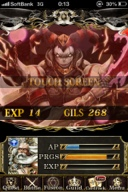
2013/03/29 00:14:39, "268:良明 Maezawa Crooz":
この演出のあと
2013/03/29 00:14:46, "268:良明 Maezawa Crooz":
良明 Maezawa Crooz sent you a photo.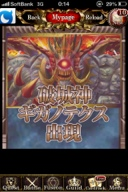
2013/03/29 00:14:58, "268:良明 Maezawa Crooz":
何故かこのフラッシュ流れた…
2013/03/29 00:16:46, "270:岩永 勇祐":
今調査してる！
2013/03/29 00:18:05, "271:えんはる Crooz":
DEVでこんなの起きなかったのに…
遅延のせい？(°_°)
2013/03/29 00:19:09, "270:岩永 勇祐":
みんなpcない感じ？
2013/03/29 00:19:20, "268:良明 Maezawa Crooz":
ぼくない！
2013/03/29 00:20:08, "272:smaruy30":
ある。。
2013/03/29 00:21:20, "271:えんはる Crooz":
何かできることあればなんなりと！
2013/03/29 00:22:20, "268:良明 Maezawa Crooz":
まるちゃーん( ◦⃝⃚⃙⃘⃙⃚⃙⃚⃙⃘⃑д◦⃝⃚⃙⃘⃙⃐ )∕
2013/03/29 00:23:18, "272:smaruy30":
ドキドキ
2013/03/29 00:49:32, "270:岩永 勇祐":
とりあえずボスのフラッシュが変になるやつは治ったはず。
ただ負荷が下げられない。。
2013/03/29 00:50:27, "268:良明 Maezawa Crooz":
そんなにユーザー動きまくってんの？
やぱサーバー入れ替えてくれないか明日相談してみようかな。。
2013/03/29 02:31:47, "270:岩永 勇祐":
とりあえず出現率下げて明日の対応じゃダメかな。。
2013/03/29 02:32:01, "270:岩永 勇祐":
Macの充電がない。。
2013/03/29 02:32:38, "270:岩永 勇祐":
今から六本木行くのつらいよー( ；´Д｀)
2013/03/29 02:55:29, "270:岩永 勇祐":
レイド用dbのioがかなり上がってるんで、書き込みがかなり走ってる（ユーザーが遊んでる）んだと思います。
今は一旦出現率を下げて、
明日チューニング出来る限りやってみます。
もしここがサーバーの限界だった場合、報酬、補填等考えて対応しましょう。
2013/03/29 02:56:48, "272:smaruy30":
わかりました。
お疲れ様でした。
2013/03/29 02:56:59, "272:smaruy30":
:-)
2013/03/29 02:57:13, "270:岩永 勇祐":
明日の緊急ESが怖いよー(°_°)
2013/03/29 02:57:40, "270:岩永 勇祐":
じゃ〜お疲れちゃん✨
2013/03/30 00:06:32, "269:":
みんないなくなった！
2013/03/30 00:08:52, "0:You":
も帰るよ。今日はメチャ楽しかった。
英語教室は最高に楽しかった！
2013/03/30 00:10:52, "269:":
Thong? Lol
2013/03/30 00:12:05, "0:You":
ヤバイですよね！
実際に使おう！
2013/03/30 00:14:46, "270:岩永 勇祐":
blow job?
2013/03/30 00:15:37, "268:良明 Maezawa Crooz":
楽しかったねー！٩(●˙▿˙●)۶
2013/03/30 00:16:33, "269:":
竹下さんにちゃんと挨拶できなかった
2013/03/30 00:19:20, "270:岩永 勇祐":
hey!!give me blow job!!
2013/03/30 00:20:41, "0:You":
次の 金曜日の英語教室はハートランドで！
2013/03/30 00:24:33, "271:えんはる Crooz":
えんはる sent you a photo.
2013/03/30 00:24:34, "271:えんはる Crooz":
えんはる sent you a photo.
2013/03/30 00:24:35, "271:えんはる Crooz":
えんはる sent you a photo.
2013/03/30 00:24:36, "271:えんはる Crooz":
えんはる sent you a photo.
2013/03/30 00:24:36, "271:えんはる Crooz":
えんはる sent you a photo.
2013/03/30 00:24:44, "271:えんはる Crooz":
写真かぶってたらsorry！
2013/03/30 00:25:55, "268:良明 Maezawa Crooz":
またのもーよー！竹ちゃん呼んで( ◦⃝⃚⃙⃘⃙⃚⃙⃚⃙⃘⃑д◦⃝⃚⃙⃘⃙⃐ )∕
2013/03/30 00:33:32, "272:smaruy30":
のもーぜー。
Do you think i am wearing a lovely thong?
2013/03/30 00:35:27, "0:You":
Stop it!
2013/03/30 00:36:17, "272:smaruy30":
heart land!!!
2013/03/30 00:36:35, "268:良明 Maezawa Crooz":
丸ちゃん
2013/03/30 00:36:38, "268:良明 Maezawa Crooz":
うるさい
2013/03/30 00:36:45, "268:良明 Maezawa Crooz":
w
2013/03/30 00:36:53, "270:岩永 勇祐":
sweeet
2013/03/30 00:37:01, "272:smaruy30":
;-)
2013/03/30 00:39:38, "269:":
Nice pictures! We look so happy!
2013/03/30 00:45:58, "269:":
JunJun Kwak sent you a photo.
2013/03/30 00:45:59, "269:":
JunJun Kwak sent you a photo.
2013/03/30 00:46:21, "269:":
T-rareからの写真！
2013/03/30 00:47:40, "0:You":
まくらとパジャマをあげるのが面白かった
2013/03/30 00:48:00, "272:smaruy30":
thx!!!
2013/03/30 00:49:06, "270:岩永 勇祐":
thx!!
2013/03/30 00:49:23, "269:":
Thongs!!
2013/03/30 00:54:08, "271:えんはる Crooz":
very very nice team!!
2013/03/30 01:00:14, "269:":
Definitely!
2013/03/30 11:30:56, "0:You":
良明 Maezawa Crooz invited こてつ to the group.
2013/03/30 11:31:08, "268:良明 Maezawa Crooz":
ESきてますー！！！
2013/03/30 11:31:34, "0:You":
うん！
2013/03/30 11:31:49, "268:良明 Maezawa Crooz":
まるちゃーん！！
2013/03/30 11:32:07, "272:smaruy30":
me?
2013/03/30 11:33:11, "268:良明 Maezawa Crooz":
うん！
2013/03/30 11:33:28, "268:良明 Maezawa Crooz":
トニーわかる？
2013/03/30 11:34:47, "0:You":
え？！ちょっと待ってて！
2013/03/30 11:34:58, "268:良明 Maezawa Crooz":
おけ！
2013/03/30 11:35:04, "272:smaruy30":
mypage のは今みようとしてます
2013/03/30 11:35:37, "268:良明 Maezawa Crooz":
俺いま山に向かっててパソコン持ってないからSkype入れないんですがお願いします( ꒪⌓꒪)
2013/03/30 11:37:21, "272:smaruy30":
もう一件の報酬の方は、昨日の対応の話しなんで、よくわからんです。だれかみて
2013/03/30 11:38:05, "270:岩永 勇祐":
見るよん✨
2013/03/30 11:38:36, "272:smaruy30":
mypageもわからないかもだけどね。。
2013/03/30 11:38:43, "268:良明 Maezawa Crooz":
まるちゃんは引き続き誰がSkypeに入ってるか監視するのね٩(●˙▿˙●)۶
2013/03/30 11:44:32, "0:You":
じゃ〜
今の問題はTOPページの”RR guaranteed for 50MC”ボタンがとび先が違うって言う事？
2013/03/30 11:45:36, "272:smaruy30":
たぶん一回かったことある人は買えないとかかな
2013/03/30 11:46:08, "0:You":
そうか〜そうか？！
2013/03/30 11:46:44, "270:岩永 勇祐":
一回買った人は買えないんだけど、マイページにその判定が入ってないんじゃない？
2013/03/30 11:47:23, "272:smaruy30":
そんな気がしてます
2013/03/30 11:47:53, "270:岩永 勇祐":
うん、じゃー簡単やん✨
まるちゃんヨロシク！
2013/03/30 11:48:19, "0:You":
You can do it!!
2013/03/30 11:49:19, "270:岩永 勇祐":
俺は寝起きだから歯磨きして風呂入って参戦するぜ！
2013/03/30 11:50:17, "268:良明 Maezawa Crooz":
何枚も買えるようになってるわけではないよね？
2013/03/30 11:51:52, "0:You":
そう言う説明はどこにも書いてないので。
結局、僕らのミスだ〜
2013/03/30 11:52:39, "270:岩永 勇祐":
何枚も帰ることないから大丈夫だよー
2013/03/30 11:53:09, "269:":
もし判定が難しかったらとりあえず削除して下さい！
2013/03/30 11:53:16, "268:良明 Maezawa Crooz":
了解ですー！お願いしますー！
2013/03/30 12:00:55, "270:岩永 勇祐":
また来た。。
なんだこりゃー！！
2013/03/30 12:02:14, "268:良明 Maezawa Crooz":
なにこれー！もーやめてー！！！w
2013/03/30 12:04:02, "271:えんはる Crooz":
wao…
今日はさすがに出勤か？！(>_<)
2013/03/30 12:09:51, "268:良明 Maezawa Crooz":
いや、さゆりが映画見れなくなっちゃうから粘ろう！
2013/03/30 12:18:55, "270:岩永 勇祐":
緊急esのボス報酬がもらえないってやつ、
下の英語なんて書いてあります？
なんか上の翻訳がざっくりすぎてよくわからん！
2013/03/30 12:21:05, "272:smaruy30":
toni !
2013/03/30 12:21:40, "268:良明 Maezawa Crooz":
Jー！！！
2013/03/30 12:22:10, "0:You":
オーー！
2013/03/30 12:24:58, "0:You":
どんなバットルに行ってもブラックスクリーンになっちゃう
2013/03/30 12:26:02, "0:You":
エンドちゃん！
lib.ImgLoader.cssを削除してもらえますか？
2013/03/30 12:28:03, "0:You":
そのcssはメモリ食い過ぎと思う。
2013/03/30 12:32:25, "271:えんはる Crooz":
sorry…
今病院きてて、PC触れないんです(T_T)
消したら解決するんですか？
htdocs/cssにそのファイルあります。
2013/03/30 12:32:59, "271:えんはる Crooz":
でも昨日佐々木さんに少しファイル調整してもらったから、消しちゃっていいのか不安…
2013/03/30 12:34:53, "270:岩永 勇祐":
えっ！？
トニーそれ本番？
おれなんないよ？
2013/03/30 12:36:26, "0:You":
ファイル名は違うかも。
あんまり覚えてない。
本番に上がってるよ。
2013/03/30 12:37:15, "270:岩永 勇祐":
えーっと、とりあえず一個ずつやるから待っててw
2013/03/30 12:38:17, "268:良明 Maezawa Crooz":
俺もブラックアウトはしなかたよー！
トニーどこのバットル？
2013/03/30 12:38:42, "0:You":
もしわけない
次の緊急ESは私がやりますから。
2013/03/30 12:42:15, "0:You":
レギュラークエストのレイドボス
バトルロワイヤル
戦友を援助バトル
2013/03/30 12:43:25, "0:You":
大丈夫なのが
クジャトピア
宝物バトル
2013/03/30 12:43:37, "268:良明 Maezawa Crooz":
援助バトル以外やってみたけど大丈夫だたよ！
本番は！
2013/03/30 12:44:59, "0:You":
バトルロワイヤルとかがボタンが茶色になって小さすぎて押せない
2013/03/30 12:47:05, "0:You":
iPhoneは大丈夫っぽいね〜
2013/03/30 13:30:30, "272:smaruy30":
mypageの緊急ESは
返信しました。
2013/03/30 13:32:24, "272:smaruy30":
一度50mc ticket購入すみの人には表示されなないようになってなます
2013/03/30 13:34:39, "268:良明 Maezawa Crooz":
消えてるの確認しました！
購入してない人にはちゃんと表示でてます？？
2013/03/30 13:35:42, "272:smaruy30":
でてます。okです。
2013/03/30 13:35:48, "271:えんはる Crooz":
オレンジボタンですよね！
おけおけー！
2013/03/30 13:36:00, "268:良明 Maezawa Crooz":
おー有難う御座いますー！！
2013/03/30 13:37:34, "272:smaruy30":
いえいえ。岩永さんにも少しヘルプいただきました。
2013/03/30 13:39:41, "268:良明 Maezawa Crooz":
あと二つはどんな感じですか？？
2013/03/30 13:41:00, "270:岩永 勇祐":
レイドボスの報酬はやはり、障害の影響が出てるみたいで何人かもらえてない見たいです、
こちらは補填バッチかなんかを作って週明けに補填します。
2013/03/30 13:41:23, "270:岩永 勇祐":
丸ちゃん！これ返信お願いします！
2013/03/30 13:45:12, "271:えんはる Crooz":
週明けじゃユーザーに怒られちゃいませんか？
2013/03/30 13:47:24, "270:岩永 勇祐":
今はもらえてるよから平気じゃない？足りない分だけなんだけど。。
2013/03/30 13:51:30, "272:smaruy30":
返信の内容は
補填は週明けにします。
でokですか?
2013/03/30 13:51:47, "271:えんはる Crooz":
もらえてないユーザーいるんですよね？
お金だしてバトエリ買って戦ったのに報酬もらえなくてお問い合わせしたのに、週明けまで待ってってマズくないですか？
2013/03/30 13:52:41, "271:えんはる Crooz":
私補填できないんで偉そうに言えないけど、ユーザーだったら腹立たないですかね…
2013/03/30 13:56:21, "268:良明 Maezawa Crooz":
出来れば早めにやって欲しいですー！！
工藤さんできないかな？
2013/03/30 13:56:32, "270:岩永 勇祐":
どのユーザーがもらえてないか調べるのが難しいから
出来ればエスカレーションをこちらで対応するってメールで欲しい。
2013/03/30 13:57:20, "271:えんはる Crooz":
じゃあレイド報酬はこちらで調査&返答するてES返しますね！
2013/03/30 13:58:21, "272:smaruy30":
わかりました。お願いします。
2013/03/30 13:59:11, "270:岩永 勇祐":
それって問い合わせ来たユーザーが緊急ESで返らないでこっちに来るってこと？
2013/03/30 13:59:44, "271:えんはる Crooz":
ですね。
こっちで個別返答することになります。
2013/03/30 14:01:20, "270:岩永 勇祐":
ってことはメール翻訳とか振り分けしたら週明け以降になりそうだけど。
2013/03/30 14:02:28, "272:smaruy30":
3つめのブラックアウトは誰かみてます?
2013/03/30 14:03:10, "270:岩永 勇祐":
見てますよー
2013/03/30 14:03:40, "272:smaruy30":
あっわかりました。
2013/03/30 14:03:59, "272:smaruy30":
2つめのは
2013/03/30 14:04:22, "270:岩永 勇祐":
これって障害発生の時に来たやつですよね？
なら昨日のcssは考えにくい気がするんだけどなぁ
2013/03/30 14:05:14, "272:smaruy30":
mail dealerでみれば大方どのユーザか割り出せると思いますよ。
2013/03/30 14:05:42, "270:岩永 勇祐":
了解です
2013/03/30 14:05:54, "272:smaruy30":
egさんから上がってくる前に
2013/03/30 14:11:06, "272:smaruy30":
補填をいつするかは別としてどのユーザかだけリストアップします。
2013/03/30 14:17:55, "0:You":
こてつ joined the group.
2013/03/30 14:18:35, "271:えんはる Crooz":
個別対応と一括対応どっちがいいですかね？
2013/03/30 14:21:02, "272:smaruy30":
個別対応じゃないかな。。
2013/03/30 14:26:24, "271:えんはる Crooz":
じゃあそれで返答しますね！
2013/03/30 14:39:53, "268:良明 Maezawa Crooz":
お願いします！！
2013/03/30 14:55:34, "274:":
明日、補填で良いですか？
貰えてない人全員にバッチで付与しないとダメですこれ
2013/03/30 14:56:32, "270:岩永 勇祐":
ですね。
ブラックアウトの調査おわったら対応します。
2013/03/30 14:57:57, "274:":
ブラックアウトですが、メインDBサーバーでスロークエリが凄く沢山流れてたみたいなのですが、また、スレーブ遅延起きてたんでしょうか？
2013/03/30 14:59:28, "270:岩永 勇祐":
いや、スロークエリとスレーブ遅延は関係しないですね。（どちらもマズイんですが）
2013/03/30 15:01:26, "270:岩永 勇祐":
ブラックアウトの件だけど、メール見るとレイドだけじゃなく、通常ミッションや秘宝バトル、バトルロイヤルでもなってるらしいのね。
で、見れる時と見れないがあり、メールの件数から全員がなってるわけじゃない感じです。
で、今のイベント自体負荷が高い＆レイド出現でさらに負荷高騰してるんで、
おそらくサーバー負荷が原因だと思います。
2013/03/30 15:02:58, "274:":
〉いや、スロークエリとスレーブ遅延は関係しないですね。（どちらもマズイんですが）
そうだったんですね！！！
2013/03/30 15:03:06, "268:良明 Maezawa Crooz":
なるほど。じゃー出現率下げて様子見るぐらいしかないんですかね？
2013/03/30 15:03:18, "270:岩永 勇祐":
いちよ、全部のcssアニメーションのとこに高速病画フラグってやつを入れて対応はしました。
2013/03/30 15:04:46, "270:岩永 勇祐":
件数からそこまで多くないからこれで様子見るか、レイドの出現率を下げてみるってのもあると思う。
2013/03/30 15:06:47, "270:岩永 勇祐":
いちよレイドの出現率を少しだけ下げてみようか。。
2013/03/30 15:07:49, "271:えんはる Crooz":
いつもサーバーに悩まされますね…
対応ありがとうございます。
監視します！
2013/03/30 15:09:19, "271:えんはる Crooz":
工藤さんバドミントン大丈夫ですか？笑
工藤さんいなかったらラケットもシャトルもなくてみんな困ってしまうんじゃ…ｗ
2013/03/30 15:09:30, "268:良明 Maezawa Crooz":
すいません、デートなのに。お願いします！
2013/03/30 15:10:03, "274:":
今から向かいます〜！！
デートなんだから、気を使ってよ〜マルちゃんｗ
2013/03/30 15:13:57, "270:岩永 勇祐":
ブラックアウトの件はレイドの出現率を少し下げて様子見るんで返答お願いします。
2013/03/30 15:14:16, "271:えんはる Crooz":
了解です！
2013/03/30 15:17:22, "271:えんはる Crooz":
「調査中」か
「負荷が上がったことにより…調査中」
どっちがいいですかね？笑
2013/03/30 15:19:38, "268:良明 Maezawa Crooz":
調査中でお願いしますー！
2013/03/30 15:21:13, "271:えんはる Crooz":
(￣^￣)ゞ
2013/03/30 15:26:37, "271:えんはる Crooz":
あとは、メールで個別調査ですか？
2013/03/30 15:27:01, "270:岩永 勇祐":
そうですね
2013/03/30 15:27:41, "271:えんはる Crooz":
分かりました
みなさん対応ありがとうこざいます。
お疲れ様です！
2013/03/30 15:28:26, "268:良明 Maezawa Crooz":
ほんとにすいません！
有難う御座います！！
2013/03/30 15:29:21, "270:岩永 勇祐":
えっ結局終わりでいーの？
メールディーラーから拾って対応してくんじゃないの？
2013/03/30 15:36:18, "270:岩永 勇祐":
前澤さんと相談して補填は週明けに個別に対応することにしました。
お疲れ様です
2013/03/30 15:38:18, "268:良明 Maezawa Crooz":
ありがとうございました！！
2013/03/30 15:38:23, "268:良明 Maezawa Crooz":
お疲れ様です！
2013/03/30 16:44:02, "272:smaruy30":
とりあえず報酬もらえてないって問合せユーザの一覧を岩永さんに送って対応お願いしました。
お疲れ様でした。
2013/03/30 16:50:06, "270:岩永 勇祐":
ありがとーございます！
2013/04/02 15:01:28, "0:You":
yeyenman Aileen joined the group.
2013/04/04 21:39:21, "0:You":
岩永 勇祐 invited ケンタッキーフライドチキン to the group.
2013/04/05 22:12:42, "0:You":
You sent a photo.

2013/04/05 22:12:43, "0:You":
You sent a photo.
2013/04/05 23:06:33, "269:":
So jeaous!
2013/04/05 23:10:04, "0:You":
みんなで飲んでるよ！
2013/04/05 23:12:11, "261:yeyenman Aileen":
Junjun, I wish you were here!
2013/04/05 23:23:19, "274:":
We want Junjun!!!
2013/04/05 23:30:19, "269:":
ちょー行きたかった！
2013/04/05 23:30:58, "269:":
また今月中に！
2013/04/06 01:23:55, "0:You":
You sent a photo.
2013/04/06 01:24:22, "272:smaruy30":
じゅんじゅん
2013/04/06 01:24:44, "272:smaruy30":
ふたりいかないかも
2013/04/06 01:25:30, "269:":
ww楽しそう！
2013/04/06 01:26:09, "268:良明 Maezawa Crooz":
JJ俺は行くぞ(๑¯̆ ᴈ¯̆๑)
2013/04/06 01:26:15, "261:yeyenman Aileen":
we're still here! come! :)
2013/04/06 01:26:20, "268:良明 Maezawa Crooz":
起きれる？
2013/04/06 01:26:47, "269:":
もちろん！
2013/04/06 01:26:59, "272:smaruy30":
おきれないよ
2013/04/06 01:28:50, "269:":
ww何時まで呑んだんですか？
2013/04/06 01:29:55, "272:smaruy30":
いま六本木にいるよ
2013/04/06 01:30:08, "0:You":
まだ飲んでるよ！
2013/04/06 01:30:46, "269:":
本当に？体力凄い！
2013/04/06 01:34:19, "269:":
雪山が俺の名前をを呼んでるんで、今日はもう寝ます。
2013/04/06 01:35:04, "269:":
みなさん気をつけてね！お休み！
2013/04/06 01:35:15, "0:You":
おやすみ！
2013/04/06 01:35:56, "270:岩永 勇祐":
ぐっない！
2013/04/06 01:37:55, "261:yeyenman Aileen":
Good night Junjun!
2013/04/06 03:16:54, "261:yeyenman Aileen":
皆さん、お休み🌠
2013/04/06 03:17:20, "268:良明 Maezawa Crooz":
おやすみー！
2013/04/06 16:48:42, "0:You":
家からVPNを接続できた。
今週末は緊張ESが来るかな〜⁈
2013/04/06 17:43:14, "272:smaruy30":
トニやるねー。
2013/04/06 17:43:50, "272:smaruy30":
昨日は皆さんお疲れ様でした。
2013/04/06 17:45:44, "272:smaruy30":
先に帰ってすみませんでしたー。限界でした。。
2013/04/08 14:39:39, "272:smaruy30":
外の喫煙コーナーにいます
2013/04/09 10:44:31, "0:You":
株が下がってる！！
岩永さんなんとかしてください！
2013/04/09 10:44:59, "0:You":
You sent a photo.
2013/04/09 10:45:03, "272:smaruy30":
yeah
2013/04/09 10:46:09, "270:岩永 勇祐":
任せろ！
2013/04/09 10:47:02, "270:岩永 勇祐":
トニーうちの株持ってるの？
2013/04/09 10:47:19, "0:You":
持てない
2013/04/09 10:48:43, "0:You":
金曜日の全体会議で何かが外にもれてたかな？
2013/04/09 10:56:08, "270:岩永 勇祐":
トニーが大量に買って株価上げるしかない！
2013/04/09 10:59:14, "0:You":
それか、
岩永さんが仕事を頑張って売り上げ上げる。
2013/04/09 10:59:58, "270:岩永 勇祐":
市場揺るがしちゃうか！
2013/04/09 22:02:44, "268:良明 Maezawa Crooz":
まるちゃんどこいる？
2013/04/09 22:12:30, "272:smaruy30":
自転車置き場。
2013/04/09 22:12:58, "270:岩永 勇祐":
おいで！
2013/04/09 22:13:02, "0:You":
CrossRoadsにいる
2013/04/09 22:13:07, "268:良明 Maezawa Crooz":
トニーとかと飲んでるからきて！
2013/04/09 22:13:34, "0:You":
日比谷線の2出口にあるバー
2013/04/09 22:13:51, "272:smaruy30":
cool
2013/04/09 22:18:10, "274:":
若いですね。。。皆さん。。。
2013/04/09 22:28:56, "272:smaruy30":
cross over?
2013/04/09 22:29:56, "268:良明 Maezawa Crooz":
そー！はやくきなよ！
2013/04/09 22:30:18, "0:You":
Location Roppongi Station
1-25, Roppongi 6-Chōme
Minato, Tokyo
Japan 106-0032
2013/04/10 00:34:03, "0:You":
思い出した！
Capistranoだ！
2013/04/10 00:34:23, "272:smaruy30":
?
2013/04/10 00:34:59, "0:You":
rsyncの代わりにアメーバがCapistranoを使ってる
2013/04/10 00:35:42, "272:smaruy30":
ほーう。
2013/04/10 00:47:42, "0:You":
そうそう、CapistranoにJenkinsなの。
2013/04/10 00:58:24, "270:岩永 勇祐":
そうそれ！
たしかrubyで動いてるやつだよね？
それがいいーよー
2013/04/10 01:03:03, "0:You":
オーー！そうそう！
2013/04/12 13:58:48, "0:You":
岩永さんが今のhobbitを対応出来ますか？
2013/04/12 13:59:42, "271:えんはる Crooz":
はい！
2013/04/12 14:05:00, "274:":
スレーブのせいです。
2013/04/12 14:05:06, "274:":
か？
2013/04/12 14:06:41, "270:岩永 勇祐":
プロセスだからリクエスト詰まってるんでしょうねー
原因は正直不明です。。
2013/04/12 14:49:20, "0:You":
You sent a photo.
2013/04/13 01:54:14, "270:岩永 勇祐":
今終了〜
明日緊急es来たらよろしく〜
2013/04/13 01:57:38, "272:smaruy30":
お疲れです～。
緊急esきませんように。。
2013/04/13 01:58:13, "268:良明 Maezawa Crooz":
絶対くるよ！w
2013/04/13 01:59:36, "0:You":
大丈夫よ
パソコンもってるし
2013/04/13 01:59:53, "0:You":
You sent a photo.
2013/04/13 02:00:01, "272:smaruy30":
toni nice!
2013/04/13 02:00:29, "0:You":
You sent a photo.
2013/04/13 02:01:08, "268:良明 Maezawa Crooz":
全然40人いないじゃんww
2013/04/13 02:01:14, "272:smaruy30":
たのしそー。
2013/04/13 11:57:07, "0:You":
おはようございます！
朝から緊張ＥＳってすごいね！
2013/04/13 12:03:53, "272:smaruy30":
can you do it?
2013/04/13 12:07:22, "0:You":
I can fix it!
2013/04/13 12:10:54, "272:smaruy30":
those cards shows null are in users gift box, I guess some card data missing
2013/04/13 14:04:04, "270:岩永 勇祐":
これはサーバーでスレーブが起きてたのが原因！
みんなもらえてるでしょ？
2013/04/13 14:04:13, "270:岩永 勇祐":
遅延ね
2013/04/13 14:04:38, "0:You":
Maruがなおした
2013/04/13 14:04:59, "272:smaruy30":
いまもらえてるかどうかチェックしてます
2013/04/13 14:05:26, "274:":
貰えてひけましたよ。
2013/04/13 14:05:27, "272:smaruy30":
なおしてないー
2013/04/13 14:05:27, "0:You":
Gacha category 32はdelete_flg=0だった
2013/04/13 14:05:37, "0:You":
1
2013/04/13 14:05:50, "272:smaruy30":
それはpreだけ
2013/04/13 14:06:40, "0:You":
Eh?!
私が本番でいっぱい引いてるけどみんな大丈夫。
2013/04/13 14:12:56, "0:You":
先のはせがわがNULLを引いた
2013/04/13 14:13:02, "0:You":
You sent a photo.
2013/04/13 14:13:59, "0:You":
長谷川の端末のスクリーンショット
2013/04/13 14:14:20, "272:smaruy30":
でもuser card t にデータできてるみたい。長谷川さんに確認中です。
2013/04/13 14:14:24, "274:":
ガチャグルーブディテールエムに結び着いてるカードエムがない？
2013/04/13 14:14:59, "274:":
お、そのカードの名前とかに不正なデータがあるかもだよ！マルちゃん！！
2013/04/13 14:16:12, "272:smaruy30":
いや一見ふつう。
2013/04/13 14:17:13, "274:":
怪魚コードとか！全角すぺーとか！
2013/04/13 14:17:36, "274:":
改行
スペース
2013/04/13 14:19:19, "0:You":
正解だ！
2013/04/13 14:19:35, "0:You":
Card_id 100013
2013/04/13 14:19:56, "0:You":
改行があった！
2013/04/13 14:20:47, "272:smaruy30":
ok でも長谷川さんはそのカードひいてない
2013/04/13 14:23:54, "274:":
サンキュー、トニー！
2013/04/13 14:24:08, "0:You":
長谷川が引いたよ
User_card_id 251357639
2013/04/13 14:24:16, "274:":
マルちゃん、対象カードは正しい？
2013/04/13 14:25:58, "0:You":
じゃ！
名前をなおして
緊張ＥＳを返事して
またベッドに入ります
2013/04/13 14:28:59, "272:smaruy30":
そのカード create time 3/13だよ
2013/04/13 14:31:16, "274:":
www
2013/04/13 14:31:39, "274:":
そのカードはまさかb.b.コラボカードではw
2013/04/13 14:31:51, "272:smaruy30":
そう
2013/04/13 14:34:23, "0:You":
緊急エスカレーション返信完了
2013/04/13 14:34:40, "274:":
nullか〜
2013/04/13 14:35:18, "274:":
今回、長谷川さんが引いたカードIDは？
2013/04/13 14:36:03, "272:smaruy30":
え、とにー返信しちゃった
2013/04/13 14:36:24, "274:":
いいよ。直せばいいんでしょ？w
2013/04/13 14:36:25, "0:You":
えー！ちがった？！
2013/04/13 14:37:42, "272:smaruy30":
237 947 1120 1185 1380
2013/04/13 14:38:17, "272:smaruy30":
特にあやしい改行とか文字はなし
2013/04/13 14:38:33, "274:":
あれ？
10連？
2013/04/13 14:38:50, "272:smaruy30":
1連
2013/04/13 14:39:43, "274:":
スキルデータも渡すはずだから、対象カードのカードスキルエムも見た方がいいかも。。。
2013/04/13 14:40:32, "0:You":
User_card_id 251357639
のupdate_time は今日だよ
2013/04/13 14:42:30, "272:smaruy30":
え? 4/11でしょ?
2013/04/13 14:43:42, "0:You":
Yes
2013/04/13 14:46:09, "0:You":
いたずらLegendCP引いてみます！
2013/04/13 14:47:44, "274:":
進化合成、デッキセットなど、何かすればupdate_timeは変わるからね〜
2013/04/13 14:47:53, "274:":
create_timeは？
2013/04/13 14:48:09, "272:smaruy30":
3/11
2013/04/13 14:48:27, "272:smaruy30":
まちがえた3/13
2013/04/13 14:48:32, "274:":
www
2013/04/13 14:48:42, "274:":
違うねw
2013/04/13 14:49:08, "272:smaruy30":
長谷川さんに確認したところ、
2013/04/13 14:50:18, "272:smaruy30":
ガチャ5回ひいて、うち1回がnull
2013/04/13 14:50:34, "272:smaruy30":
カードデータは
2013/04/13 14:52:44, "272:smaruy30":
user card tにできているのでnull表示でもカードはもらえてることになると思います
2013/04/13 14:56:14, "272:smaruy30":
だからスレーブ遅延になりますかね、岩永さんが言うように。
2013/04/13 14:57:16, "272:smaruy30":
ちょっとそこのプログラムまでは見てないのですが。
2013/04/13 14:59:07, "270:岩永 勇祐":
おはようございます！
対応ありがとー！
でもトニーこの返信文はマズくね？w
みんなこのカード引いたみたいな言い方だし、実際原因も違うしねw
2013/04/13 14:59:24, "272:smaruy30":
丸山さん時間切れです!! すみませんが、あとお願いします!!
2013/04/13 15:01:08, "0:You":
Kita!!
2013/04/13 15:01:14, "0:You":
You sent a photo.
2013/04/13 15:01:53, "0:You":
これで捕まえたかも！
2013/04/13 15:04:42, "270:岩永 勇祐":
card自体がない場合は実際の処理でエラーになるじゃん？だけど、swfまで行ってるってことは原因はCardデータそのものじゃないわけよ。
つまり付与自体は出来てるけど、表示でこけてるのね。
で、トニーが見つけた改行コードもいい線行ってるけど、残念ながら正解じゃない。
なぜかって言うと改行コードがおかしい時はカード名だけ表示されなくて、画像は表示されるから。
2013/04/13 15:08:48, "270:岩永 勇祐":
ガチャってhistoryIDの引き渡しなんだけど、スレーブが遅延してると登録した情報がリダイレクトした後に取得出来ないから引いたCardがわからなくなるんだよね。
昨日公開後、結構長い時間遅延してたから、これが原因の可能性が高いわけね。
今は起きてないでしょ？
2013/04/13 15:09:18, "270:岩永 勇祐":
これが正解だと思うよ。
結果今は問題ないはず！
2013/04/13 15:11:48, "0:You":
まだ起きてる
こいつが犯人だ！
Inferno lord ifrid
2013/04/13 15:11:55, "0:You":
You sent a photo.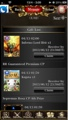
2013/04/13 15:15:31, "0:You":
いや！私が間違った！
犯人じゃない。
岩永さんの結論が正しい
2013/04/13 15:16:13, "0:You":
Infernoさんのデータは問題がない。
2013/04/13 15:16:42, "270:岩永 勇祐":
今ガチャ何度かガチャ引いたけど、問題なくない？
まだnullになる？
2013/04/13 15:17:53, "0:You":
先のNULLは15分前にあった
2013/04/13 15:18:23, "0:You":
RR Guarantedの引いた時
2013/04/13 15:18:51, "270:岩永 勇祐":
えっマジで。
遅延状況確認出来る？
2013/04/13 15:24:32, "270:岩永 勇祐":
うーん、再現出来ないね。
大丈夫っぽいけど。
2013/04/13 15:29:20, "0:You":
Seconds_behind_master : 0
2013/04/13 15:30:07, "270:岩永 勇祐":
ありがと(＾ｰ^)ノ
うん、やっぱり問題ないね！
2013/04/13 15:30:31, "0:You":
問題ない！
2013/04/13 15:30:37, "0:You":
You sent a photo.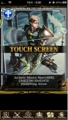
2013/04/13 15:46:56, "272:smaruy30":
なるほど、null になる仕組みがよくわかりました。
2013/04/13 16:02:15, "268:良明 Maezawa Crooz":
おはよー！
みなさん、ごめんなさい( ꒪⌓꒪)ありがとうございます！
なんかできる事あれば言ってください！
2013/04/13 16:02:36, "268:良明 Maezawa Crooz":
トニーしんく問題なかった？
18時いける？
2013/04/13 16:06:34, "0:You":
大丈夫
2013/04/13 16:06:59, "268:良明 Maezawa Crooz":
おーありがと☻
電話するねー！
2013/04/13 16:08:12, "0:You":
OK
2013/04/13 16:13:09, "268:良明 Maezawa Crooz":
昨日、半日営業止まってたのに売り上げ100万ギリキープしてる！！！
みんなのおかげです☻
2013/04/13 16:13:31, "270:岩永 勇祐":
おぉ！すげーなw
2013/04/13 16:38:38, "274:":
昼に確認して、見間違いかと思いましたw
2013/04/13 18:04:01, "0:You":
Maezawaさん
シンクをしていい？
2013/04/13 18:05:59, "0:You":
ヤバイ！
も6時なのに返事が無い
2013/04/13 18:09:28, "0:You":
テストをします
2013/04/13 18:09:46, "268:良明 Maezawa Crooz":
ステップアップだしましたー
2013/04/13 18:17:01, "268:良明 Maezawa Crooz":
トニーありがとねー！！
2013/04/13 18:24:13, "0:You":
ドーモトーモ〜
2013/04/14 16:08:50, "268:良明 Maezawa Crooz":
イベントトップのドラゴンフルーツのリンク押すと毎回セッション切れちゃうんだけど、これ原因分かる方いますか？
2013/04/14 16:09:57, "268:良明 Maezawa Crooz":
あ、押せた！
2013/04/14 16:10:42, "0:You":
大丈夫なの？！
2013/04/14 16:11:35, "271:えんはる Crooz":
私も押せました！
セッションってモバゲーとのアクセスで取るんですよね…？
2013/04/14 16:12:08, "268:良明 Maezawa Crooz":
トニーごめん！大丈夫ぽい！！
2013/04/14 16:15:44, "0:You":
やった！
2013/04/18 20:52:52, "270:岩永 勇祐":
http://dev2.mragnarok.croozsocial.jp/itemPrice/itemViewUs
2013/04/18 20:53:00, "270:岩永 勇祐":
月別ね
2013/04/18 20:53:20, "270:岩永 勇祐":
http://dev2.mragnarok.croozsocial.jp/itemPrice/itemHourUs
2013/04/18 20:53:29, "270:岩永 勇祐":
時間別ね
2013/04/18 21:01:52, "268:良明 Maezawa Crooz":
これめちゃいい！！
2013/04/18 21:05:27, "269:":
2013/04/18 22:08:38, "272:smaruy30":
Toni can u come a little earlier tomorrow for mail checking?
2013/04/18 22:09:25, "272:smaruy30":
it would be better before 10, just in case.
2013/04/18 22:11:42, "270:岩永 勇祐":
岩永 勇祐 sent you a photo.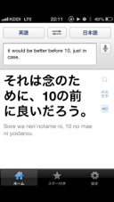
2013/04/18 22:13:55, "270:岩永 勇祐":
岩永 勇祐 sent you a photo.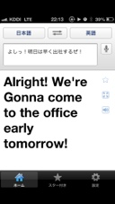
2013/04/18 22:16:04, "274:":
This translation tool is very good!
Please tell me this tool's name?
2013/04/18 22:19:40, "268:良明 Maezawa Crooz":
これは トランスレーションとおる がとても良い。
私にとおるの名前をちょーだい。
という意味の認識で大丈夫ですか？
2013/04/18 22:21:18, "270:岩永 勇祐":
岩永 勇祐 sent you a photo.
2013/04/18 22:21:19, "270:岩永 勇祐":
すまない、遅くなった
2013/04/18 22:21:52, "268:良明 Maezawa Crooz":
あぁ、このとおるさんをやっぱり呼んでたんだ
2013/04/18 22:22:38, "270:岩永 勇祐":
オネエ語じゃないと通じないみたいで困ったよ
2013/04/18 22:22:40, "270:岩永 勇祐":
https://itunes.apple.com/jp/app/google-fan-yi/id414706506?mt=8
2013/04/18 22:30:36, "0:You":
Ok
2013/04/18 22:30:49, "274:":
thx!!
2013/04/18 22:31:46, "0:You":
Good night!
2013/04/18 22:59:11, "272:smaruy30":
nite nite
2013/04/20 00:00:48, "272:smaruy30":
まにあったー。
2013/04/20 00:01:02, "272:smaruy30":
おつかれ!
2013/04/20 00:02:27, "269:":
2013/04/20 00:10:00, "268:良明 Maezawa Crooz":
おつおつ！
2013/04/20 00:18:14, "274:":
お疲れ様でした〜！
2013/04/20 00:18:32, "274:":
Where is Toni?
2013/04/20 00:20:36, "271:えんはる Crooz":
お酒たくさんのみましたね、(^ ^)
2013/04/20 00:20:52, "272:smaruy30":
in a dream of thong..
2013/04/20 00:21:01, "274:":
jj凄く飲んでましたよw
2013/04/20 00:23:31, "261:yeyenman Aileen":
お疲れ、皆さん！
2013/04/20 00:31:44, "269:":
楽しかった！
2013/04/20 00:32:16, "274:":
jj
明日、サッカー頑張って！
2013/04/20 00:44:45, "269:":
ゴールを手土産に持っていきます！ww
2013/04/20 12:14:42, "0:You":
おはよう！
緊張ESだよ、ユーザー名が消えたりセッションが切ったり。
なおしたい人？！
はーいって！
2013/04/20 12:15:44, "272:smaruy30":
みてみる
2013/04/20 12:16:03, "268:良明 Maezawa Crooz":
うわーほんとだ！
てか昨日変なプッシュきた！
2013/04/20 12:16:07, "0:You":
Thank you!
2013/04/20 12:16:14, "268:良明 Maezawa Crooz":
良明 Maezawa Crooz sent you a photo.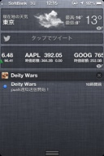
2013/04/20 12:19:17, "271:えんはる Crooz":
前澤くんのやつ、私きてない！
開発環境だけかな？
そうであってほしい(;_;)
2013/04/20 12:19:52, "268:良明 Maezawa Crooz":
でもアクセスしたら本番の画面になたよ！
2013/04/20 12:20:24, "271:えんはる Crooz":
まじで
みんなきたかな？
2013/04/20 12:25:19, "274:":
前澤君のプッシュ通知、僕の所には来てないですよ〜
僕の端末は、本番環境しか入ってません。
2013/04/20 12:27:43, "269:":
オレも来てない。ギルドウォーのやつはきたけど。
2013/04/20 12:29:00, "274:":
ギルドウォーと、AP回復は来ました〜
2013/04/20 12:29:42, "274:":
マルちゃん
昨日の夜言ってた、キャッシュぶっ壊れ系？？
2013/04/20 12:29:49, "270:岩永 勇祐":
おはよ！
変なプッシュはデバック用に俺と前澤君にお知らせプッシュの最初と最後に飛ぶようにした！
2013/04/20 12:30:21, "268:良明 Maezawa Crooz":
なーる！
2013/04/20 12:30:43, "270:岩永 勇祐":
完了ってやつが来てないからまだ回ってる(ｰ ｰ;)
2013/04/20 12:32:35, "272:smaruy30":
岩永さん、昨日のプログラム シンクしちゃおうと思いますがどうおもいます?
2013/04/20 12:32:36, "270:岩永 勇祐":
ん？緊急ES来てんじゃん(ｰ ｰ;
2013/04/20 12:52:21, "268:良明 Maezawa Crooz":
なんかいまプッシュきた！やぱおくれてんね！
2013/04/20 12:53:05, "270:岩永 勇祐":
オッナルほど！
2013/04/20 12:58:45, "274:":
PCないので役立たず。。。
マルちゃん、よろしく！
2013/04/20 13:48:52, "268:良明 Maezawa Crooz":
丸ちゃん返信ありがとーう！
ごめんねー( ◦⃝⃚⃙⃘⃙⃚⃙⃚⃙⃘⃑д◦⃝⃚⃙⃘⃙⃐ )∕
2013/04/20 13:49:46, "0:You":
返事の文明は正しかった？
2013/04/20 13:52:00, "274:":
toniおしい！
文面！w
2013/04/20 14:31:57, "0:You":
ウワ！
2013/04/20 15:19:38, "272:smaruy30":
とりあえずnicknameが消える件はプログラムシンクして暫定対応完了になってます。ただnicknameがnullのデータはまだあって、岩永さんと相談して一旦様子見することになってます。
2013/04/20 15:21:58, "274:":
マルちゃん
一日放っておいたら治るようになってるんでしたっけ？
2013/04/20 15:26:29, "272:smaruy30":
次回スタンプログインがでてきたタイミングで更新されるはずですが、メムキャシュとかレディスとかテーブルのupdate timeとかのデータによるの条件つきです。
2013/04/20 15:42:48, "274:":
了解です！
2013/04/20 15:48:26, "271:えんはる Crooz":
おかべさーーん
2013/04/20 15:50:30, "274:":
ほたかさーーーん！
2013/04/20 15:57:07, "274:":
JJ！
Hurry up！！
2013/04/20 16:00:24, "0:You":
もバグミントン？！
2013/04/20 16:32:21, "269:":
今かたディオと一緒に向かいます！
2013/04/20 17:39:50, "0:You":
ヤベー！イベントのスキールをやったことがないん。
2013/04/20 17:42:47, "0:You":
------------------------------------------------------------
Deity Wars
------------------------------------------------------------
内容：
------------------------------------------------------------
■お問い合わせ件数増加について
・タイトル：Deity Wars
・報告日時：2013/4/20 17:25
4時36分頃から「スキルが変更された（Eadrom, Freesia, Minamoto, Baihaなど）」という内容のお問い合わせを現在までで15件受信しております。
下記に15件中2件のお問い合わせ内容を記載いたします。（内容については13件ともに
ほぼ同内容となっておりました。）
=============================================================
2013/04/20 17:43:08, "0:You":
なにかヒントある？
2013/04/20 17:46:24, "270:岩永 勇祐":
これって先日スキルの内容変更したやつじゃない？
ゲーム内お知らせ出さなかった？
2013/04/20 17:46:52, "0:You":
ooooh!
2013/04/20 17:50:55, "268:良明 Maezawa Crooz":
わー長谷川さんに言うの忘れたかも！
やば╭(๑¯⌓¯๑)╮
2013/04/20 17:51:12, "272:smaruy30":
そう、昨日修正したやつです。
2013/04/20 17:51:33, "0:You":
入ってない
http://dev2.umragnarok.croozsocial.jp/admin/information/InformationList
2013/04/20 17:51:38, "270:岩永 勇祐":
ゲーム内お知らせは出てないみたいだね
2013/04/20 17:52:33, "268:良明 Maezawa Crooz":
記載に誤りがあったので、修正しましたって感じでとりあえずES返して、お知らせも後になっちょったけど出そう！
ごめん！俺がお知らせ出してって頼むの忘れてた！
2013/04/20 17:53:14, "270:岩永 勇祐":
おーけーまぁ問題なくてよかった！
2013/04/20 17:53:35, "268:良明 Maezawa Crooz":
ES俺返しとくから、お知らせ英語分かる人だしといてくれない？？
2013/04/20 17:54:58, "270:岩永 勇祐":
原文もらってトニーが翻訳かな？
2013/04/20 17:55:11, "0:You":
OK
2013/04/20 17:55:36, "271:えんはる Crooz":
ES対応ありがとうございます！
2013/04/20 17:55:51, "270:岩永 勇祐":
トニーSkype入れる？
2013/04/20 17:56:13, "0:You":
うん！
2013/04/20 17:56:42, "270:岩永 勇祐":
ってpcなくね？w
2013/04/20 17:57:10, "268:良明 Maezawa Crooz":
トニーSkypeいまはいれる？
2013/04/20 17:58:05, "0:You":
入った
2013/04/20 18:00:34, "268:良明 Maezawa Crooz":
はやいw
ちょっと待ってもー家つく！
2013/04/20 18:01:16, "270:岩永 勇祐":
原文よろしくー！
2013/04/20 18:01:51, "268:良明 Maezawa Crooz":
Skypeながすねー
2013/04/20 18:01:58, "270:岩永 勇祐":
おけー
2013/04/20 18:08:09, "268:良明 Maezawa Crooz":
丸ちゃんー
2013/04/20 18:09:15, "268:良明 Maezawa Crooz":
元々スキルの説明になんて書いてあったかわかる？
どの表記が間違ってたか具体的にお知らせ出したいんだよね(´┐｀)
2013/04/20 18:10:02, "0:You":
"Skill: Significantly lowers ATK Power of all opponent's decked cards.
Every time deck's skill is activated, ATK Power of all opponent's decked
cards will very slightly go down (Chain Skill)."
2013/04/20 18:10:53, "272:smaruy30":
チケットにかいてあると思う。
2013/04/20 18:11:28, "272:smaruy30":
every time の
2013/04/20 18:12:05, "272:smaruy30":
一文が削除されてます。
2013/04/20 18:12:14, "268:良明 Maezawa Crooz":
あ
あった！おっけ！
2013/04/20 18:14:52, "270:岩永 勇祐":
まるちゃん！nullの件数1674！
増えてる(ｰ ｰ;)
2013/04/20 18:15:17, "272:smaruy30":
むおー
2013/04/20 18:16:06, "270:岩永 勇祐":
でも増え方は減ったんじゃない？
2013/04/20 18:17:26, "272:smaruy30":
へってるけど、向こういま明け方だからなー。
2013/04/20 18:17:47, "272:smaruy30":
ログみてみる。
2013/04/20 18:20:41, "268:良明 Maezawa Crooz":
何で狙ってるかの様に緊急ES週末に集中するんだろー(๑¯̆ ᴈ¯̆๑)
2013/04/20 18:21:13, "270:岩永 勇祐":
もー嫌だ( ；´Д｀)
2013/04/20 18:27:01, "0:You":
Skill Description Misleading
The skill description of some new cards as Eadrom,Freesia,Baiha,etc. Although it is review of the title,
The phrase "Every time deck's skill is activated ATK Power of deck's Earth cards will slightly go up." Was there in the description of the skill "Eadrom, Freesia, of Baiha etc., but this is denoted by mistake effect that is not triggered originally had been. "
Thank you,
Deity Wars Admin Team
2013/04/20 18:27:28, "0:You":
ごめん！まだまだ途中
エンターを押しちゃった
2013/04/20 18:27:42, "270:岩永 勇祐":
ごめん！skypeに送れる？w
2013/04/20 18:29:32, "0:You":
後５分
2013/04/20 18:41:59, "0:You":
じゅんじゅん、○＞これでいい？
Skill Description Misleading
The skill description of some new cards as Eadrom,Freesia,Baiha,etc.
Although the Skill description states,
"Every time deck's skill is activated ATK Power of deck's Earth cards will slightly go up."
It's denoting by mistake an effect that is not triggered originally in the cards, and has never been added.
We apologize for the confusion.
Thank you,
Deity Wars Admin Team
2013/04/20 18:46:04, "270:岩永 勇祐":
岩永 勇祐 sent you a photo.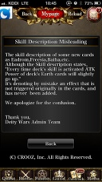
2013/04/20 19:20:36, "270:岩永 勇祐":
岩永 勇祐 sent you a photo.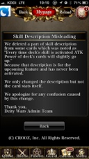
2013/04/20 19:20:40, "270:岩永 勇祐":
どう？
2013/04/20 19:28:53, "270:岩永 勇祐":
岩永 勇祐 sent you a photo.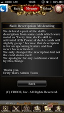
2013/04/20 19:28:57, "270:岩永 勇祐":
ほい！
2013/04/20 19:29:53, "0:You":
3 words:
かん ぺ き
2013/04/20 19:32:17, "272:smaruy30":
sexy!
2013/04/20 19:32:54, "270:岩永 勇祐":
本番上げた！
2013/04/20 19:36:02, "272:smaruy30":
thx!!
2013/04/20 19:43:52, "268:良明 Maezawa Crooz":
ありがとーう！お疲れ様でした！
2013/04/20 19:44:41, "270:岩永 勇祐":
お疲れぃ！！
2013/04/20 19:48:49, "269:":
ごめんなさい！
2013/04/20 19:49:05, "269:":
今見ました ㅠㅠ
2013/04/20 20:02:39, "272:smaruy30":
null 減り始めてます。
1649件。
様子見中ですが、報告まで。
2013/04/20 20:03:06, "272:smaruy30":
このまま減ってくれー。
2013/04/20 20:03:06, "270:岩永 勇祐":
♪( ´θ｀)ノ
2013/04/20 20:07:50, "274:":
マルちゃん、いっけ〜！
2013/04/21 11:39:41, "270:岩永 勇祐":
4月20日22時51分頃から「自分のゲームネームとプロファイル写真が画面に表示されない。
昨日修正完了の返信をもらっているが、まだ修正されていない。」という内容のお問い合わせを
約13件受信しております。
2013/04/21 11:41:18, "270:岩永 勇祐":
今1461件なんで着実に減っています。（遅いけど）
2013/04/21 11:44:49, "272:smaruy30":
多分問題が継続する場合は、再度お問い合わせください。って緊ES 返事したので、その返信だと思います。
2013/04/21 11:46:28, "272:smaruy30":
ちょっとメール見てみます
2013/04/21 12:45:16, "272:smaruy30":
岩永さん
順次対応を行います。
じゃなくて
弊社にて個別調査、返答します。
でもokですか?
2013/04/21 12:50:20, "270:岩永 勇祐":
あっそれでも平気ですけど、それだと今来てる連絡全部来ちゃいますよ？
2013/04/21 12:51:44, "272:smaruy30":
13件ぐらいなら平気かもなって思って。
2013/04/21 12:52:14, "272:smaruy30":
やめたほうがよい?
2013/04/21 12:53:46, "270:岩永 勇祐":
あー送ってもらってapiをこっちが叩くとかするってことですか？
2013/04/21 12:57:03, "272:smaruy30":
あー、
apiたたけないですねー。
手動復旧できるのはnicknameだけで、プロファイルピクチャは個別対応でも、もどせない。
2013/04/21 12:57:36, "270:岩永 勇祐":
ニックネーム消えてるやつはどっから復活させます？
2013/04/21 12:57:50, "270:岩永 勇祐":
メールから？
2013/04/21 12:58:09, "272:smaruy30":
メールしかないと思います。
2013/04/21 12:59:00, "272:smaruy30":
ユーザが書いてれば。
2013/04/21 13:00:29, "270:岩永 勇祐":
うーん、モバゲー側とニックネームが同じになるとは限らないから他と被る可能性あるけど、まぁ平気かなー。いいと思います！
2013/04/21 13:01:46, "272:smaruy30":
わかりました。
それでは個別対応で返信いたします。
2013/04/21 13:01:59, "270:岩永 勇祐":
よろしくお願いします！！
2013/04/21 13:04:45, "270:岩永 勇祐":
にしてもなんでいきなり名前消えたんだよ(ｰ ｰ;)
2013/04/21 13:05:33, "272:smaruy30":
たしかに!
2013/04/21 13:09:14, "272:smaruy30":
モバゲーにプロファイル情報もらいにいって、エラーになってsession timeout ページに飛ばされるときってhttp 401のときだけなんですよね。それ以外のエラーが発生してるか、モバゲのユーザプロファイル情報がほんとになくなってるか。
2013/04/21 13:09:39, "272:smaruy30":
どっちか!
2013/04/21 13:11:45, "270:岩永 勇祐":
返信ありがとうございます！
この辺やっぱちゃんと調べたほうがよさそうですね。
2013/04/21 13:12:20, "270:岩永 勇祐":
なかなか再現が難しいんですよね( ；´Д｀)
2013/04/21 13:14:18, "272:smaruy30":
そうですね。401エラーなら再現手順わかりますが、それ以外だとまた手探りですね。(>_<)
2013/04/21 13:48:00, "269:":
やばい。イベントの報酬ページが日本版ランキングのままだ
2013/04/21 13:49:35, "269:":
Solar God Helios ってLR?
2013/04/21 13:50:01, "269:":
今3000位までもらえると記載されてる
2013/04/21 13:52:14, "272:smaruy30":
helios は lr から gr
2013/04/21 13:52:37, "269:":
やばいっす！
2013/04/21 13:52:57, "269:":
修正しないと
2013/04/21 13:53:45, "272:smaruy30":
テンプレチームにお願いして～。
2013/04/21 13:53:50, "272:smaruy30":
いま
2013/04/21 13:53:53, "270:岩永 勇祐":
岩永 勇祐 sent you a photo.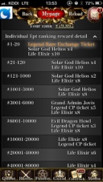
2013/04/21 13:54:14, "270:岩永 勇祐":
ホントだ！LR4枚とかw
2013/04/21 13:54:20, "272:smaruy30":
nicknameのプログラムいじってる。
2013/04/21 13:55:03, "270:岩永 勇祐":
遠藤ーーー！
これヤバイよー！
2013/04/21 13:55:54, "274:":
おはようございます。。。
2013/04/21 13:56:16, "272:smaruy30":
どうなおすの?
2013/04/21 13:57:18, "270:岩永 勇祐":
本来の報酬わからない治せない！
2013/04/21 13:57:48, "270:岩永 勇祐":
前澤電話出ないし
2013/04/21 13:58:45, "271:えんはる Crooz":
ごめんなさい！対応します！
けどこれ、黙って修正だけじゃまずいですよね(;_;)
2013/04/21 13:59:22, "270:岩永 勇祐":
マズイね。お知らせと補填は必要だと思う
2013/04/21 14:01:18, "270:岩永 勇祐":
これ元々この記述だったの？
2013/04/21 14:05:27, "271:えんはる Crooz":
ランキングの数字だけ修正必要で、カクさんに資料もらってました！
2013/04/21 14:05:47, "271:えんはる Crooz":
とっとと直してとりあえずシンクします！
2013/04/21 14:06:59, "271:えんはる Crooz":
あ、違いました…
中身も修正します！m(_ _)m
2013/04/21 14:08:48, "269:":
お願いします！お知らせも一緒に出しましょう！
2013/04/21 14:14:56, "269:":
Guild Event Point Rankingも修正必要ですね
2013/04/21 14:16:37, "271:えんはる Crooz":
なおしますーーm(_ _)m
お知らせの文章いただけますか？
2013/04/21 14:26:33, "269:":
了解です！ちょっとだけ時間ください！
2013/04/21 14:33:38, "269:":
Dear Deity Wars Players
We would like to apologize about the wrongly displayed rewards details of the current event. There were errors in the Individual Event Point Ranking Details section and Guild Event Point Ranking Rewards. These ranking details have been fixed to display correct rewards.
We apologize for any inconveniences caused. We will announce and send out compensation regarding this issue shortly.
Think you for your understanding.
Deity Wars Admin Team
Deity Wars Admin
2013/04/21 14:34:16, "269:":
タイトル
Apologies for wrong ranking reward details
2013/04/21 14:38:21, "269:":
Ranking修正してから告知あげて下さいね！
2013/04/21 14:39:34, "271:えんはる Crooz":
分かりました！ありがとうございます！
2013/04/21 14:59:21, "271:えんはる Crooz":
カクさんからいただいた資料にギルドのランキング修正のってますか？
2013/04/21 15:11:13, "269:":
ギルドランキングが間違っていて、修正したと記載しました！
2013/04/21 15:20:02, "268:良明 Maezawa Crooz":
おはよーごめん(´┐｀)
寝たまま電源切れてた(´┐｀)
2013/04/21 15:20:48, "268:良明 Maezawa Crooz":
これ個人ランキングじゃない？
2013/04/21 15:21:36, "271:えんはる Crooz":
個人です！
2013/04/21 15:22:07, "271:えんはる Crooz":
JJ曰くギルドランキングも修正必要みたいなんですが、エクセルに記載見当たらないので確認中です！
2013/04/21 15:22:42, "271:えんはる Crooz":
個人ランキングは修正してシンクしました！
2013/04/21 15:23:30, "268:良明 Maezawa Crooz":
どっちも違うね(´┐｀)
2013/04/21 15:27:37, "268:良明 Maezawa Crooz":
ギルドのランキングでLR配るのはまずい！
もう修正しちゃった？
日本版のランキング一位がホントはSSRだったのを、USではLRに変更してる！
2013/04/21 15:31:38, "269:":
今修正中です！
2013/04/21 16:01:22, "268:良明 Maezawa Crooz":
Dear Deity Wars Players
We would like to apologize about the wrongly displayed rewards details of the current event. There were errors in the Individual Event Point Ranking Details section and Guild Event Point Ranking Rewards. These ranking details have been fixed to display correct rewards.
We apologize for any inconveniences caused. We will announce and send out compensation regarding this issue shortly.
Think you for your understanding.
Deity Wars Admin Team
Deity Wars Admin
2013/04/21 16:01:54, "268:良明 Maezawa Crooz":
ギルドランキングと個人ランキングいじったけど、これでお知らせとFacebookどしてへーき？
2013/04/21 16:02:19, "268:良明 Maezawa Crooz":
あと誰かお知らせの出し方教えて下さい(´┐｀)
2013/04/21 16:06:36, "271:えんはる Crooz":
お知らせ出します！
2013/04/21 17:01:37, "272:smaruy30":
null 1515件! 修正したpgいれたので再度様子見中です。
2013/04/21 17:11:08, "271:えんはる Crooz":
みなさんご迷惑おかけしました。
イベントの報酬修正してお知らせだしました。
補填は週明けにユーザーの反応をみて前澤くんに決めてもらいます！
申し訳ありませんでしたm(_ _)m
2013/04/21 17:13:55, "270:岩永 勇祐":
対応出来なくてすいません。名前nullの件も含め諸々明日対応しましょう！
2013/04/22 13:05:20, "0:You":
You sent a photo.
2013/04/22 13:05:27, "0:You":
おめでとう！
2013/04/22 13:36:25, "270:岩永 勇祐":
岩永 勇祐 sent you a photo.
2013/04/22 13:36:31, "270:岩永 勇祐":
いぇい！
2013/04/22 13:40:37, "0:You":
ワウ〜！！
2013/04/23 10:55:32, "272:smaruy30":
トニー what about email check?
2013/04/23 10:59:11, "0:You":
I'm on it
2013/04/23 11:00:45, "0:You":
遅刻をばられた！
2013/04/23 11:00:46, "0:You":
You sent a photo.
2013/04/23 11:01:55, "272:smaruy30":
you should have come earlier or ask someone the day before if you can not come early.
2013/04/23 11:02:45, "0:You":
社長とエレベーターであった
2013/04/23 11:14:51, "270:岩永 勇祐":
だから写メ撮るなよw
2013/04/23 11:47:31, "0:You":
私がストーカーだ！
2013/04/23 12:56:33, "0:You":
Gate keeper
2013/04/23 12:56:33, "0:You":
You sent a photo.
2013/04/23 22:25:16, "271:えんはる Crooz":
ちょっとトニー！ｗｗ
2013/04/23 22:25:38, "0:You":
ストーカーです
2013/04/25 10:44:05, "0:You":
キリン？！
2013/04/25 10:44:11, "0:You":
You sent a photo.
2013/04/25 10:46:38, "268:良明 Maezawa Crooz":
すげー！
2013/04/25 21:35:50, "0:You":
You sent a photo.
2013/04/25 21:37:21, "0:You":
Nakachiはコートを着る
2013/04/25 22:19:40, "0:You":
You sent a photo.
2013/04/25 22:20:13, "270:岩永 勇祐":
楽しそー！
2013/04/25 23:13:36, "0:You":
You sent a photo.
2013/04/25 23:13:44, "0:You":
ゲット！！
2013/04/25 23:14:24, "0:You":
Go, Endo! Go, Endo! Go go go!
2013/04/25 23:45:44, "0:You":
You sent a photo.
2013/04/26 00:17:25, "272:smaruy30":
why u took off ur glasses?
2013/04/26 00:18:07, "272:smaruy30":
電車楽チン!
2013/04/26 00:18:47, "268:良明 Maezawa Crooz":
丸ちゃん下ネタやめて
2013/04/26 00:19:37, "261:yeyenman Aileen":
So I would look pretty 😘
2013/04/26 00:21:11, "272:smaruy30":
下ネタはいつ言うか...
2013/04/26 00:21:19, "274:":
Did you ware glass?
2013/04/26 00:22:20, "274:":
oops!
wear!lol
2013/04/26 00:25:06, "269:":
Good night everyone!
2013/04/26 00:25:20, "269:":
Otsukaresama!!
2013/04/26 00:25:47, "274:":
JJ!
ファイティン！！
2013/04/26 00:25:57, "274:":
加油！！
2013/04/26 00:25:57, "272:smaruy30":
おつかれ!!
2013/04/26 01:09:12, "261:yeyenman Aileen":
Goodnight!
2013/04/26 10:39:57, "269:":
すみません！10分ぐらい遅刻します。ごめんなさい
2013/04/26 10:42:56, "274:":
すみません！10分ぐらい遅刻します。ごめんなさい
2013/04/26 10:43:38, "268:良明 Maezawa Crooz":
遅刻多っw
2013/04/26 10:44:06, "0:You":
二日酔いだろう
2013/04/26 10:44:30, "270:岩永 勇祐":
すいません！2時間くらい遅刻します。ごめんなさい>_<
2013/04/26 10:49:08, "268:良明 Maezawa Crooz":
なげーよw
2013/04/26 22:21:34, "269:":
Where are you going?
2013/04/26 22:23:47, "261:yeyenman Aileen":
we're now at the same place where we had nomikai with sasaki-san before
2013/04/26 22:24:06, "261:yeyenman Aileen":
but seems like it's full
2013/04/26 22:26:04, "274:":
赤札屋の下のあぶらや
ってところ
2013/04/26 22:26:31, "272:smaruy30":
ok
2013/04/27 01:55:29, "274:":
いまでしょ！
2013/04/27 05:07:49, "274:":
ジュンジュンどこ〜？
2013/04/27 05:20:06, "274:":
始発って、混んでるんですね〜ってかんじた32歳
2013/04/27 05:26:06, "269:":
すみません！ちょっとお話して今帰ります。お疲れ様でした！
2013/04/27 05:27:30, "274:":
二人がしあわせならそれが一番だよ(^^)
ソリョンによろしくね！
お疲れ様でした( ´ ▽ ` )ﾉ
2013/04/27 09:20:59, "0:You":
画像を治してシンクをした
detail/GachaCardDetail.tpl
1ファイルだけシンクをした
2013/04/27 09:21:06, "0:You":
You sent a photo.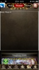
2013/04/27 09:22:49, "0:You":
Now is much better!
2013/04/27 09:22:54, "0:You":
You sent a photo.
2013/04/27 13:06:14, "270:岩永 勇祐":
緊急ES2件来てますー！
ガチャ系ですー！
2013/04/27 13:06:52, "270:岩永 勇祐":
4/26 23時00分頃から「Count of Hell Cagliostroがイベントレイドボス戦で発動しない」という内容のお問い合わせを
約11件受信しております。
2013/04/27 13:07:17, "270:岩永 勇祐":
4/26 22時00分頃から「Ultimate Olympus Cp10を3回引いたのにSRカードがもらえない」という内容のお問い合わせを
約23件受信しております。
2013/04/27 13:08:13, "271:えんはる Crooz":
oh no…
2013/04/27 13:08:27, "271:えんはる Crooz":
⭕ちゃん！プリーズ(;_;)
2013/04/27 13:08:44, "272:smaruy30":
データ?
2013/04/27 13:08:54, "270:岩永 勇祐":
俺東京にいないから対応出来ない(ｰ ｰ;)
2013/04/27 13:09:12, "270:岩永 勇祐":
にしても予想通りの展開
2013/04/27 13:10:07, "272:smaruy30":
まじでー。
2013/04/27 13:11:15, "270:岩永 勇祐":
工藤さんとか対応出来ないかなー？
2013/04/27 13:12:18, "270:岩永 勇祐":
あっ！うそ！pcあるからwifiあるとこ行ってみる！
2013/04/27 13:12:49, "272:smaruy30":
オリンパスcpって3回ひけばsrもらえるの?
2013/04/27 13:12:53, "270:岩永 勇祐":
とりあえず2件目はヤバイよ
2013/04/27 13:13:21, "0:You":
引いてみよ
2013/04/27 13:13:26, "272:smaruy30":
みてみる
2013/04/27 13:13:36, "270:岩永 勇祐":
10連以上のガチャって全部対応じゃない？
2013/04/27 13:13:58, "272:smaruy30":
あーそうかそれだ
2013/04/27 13:14:38, "272:smaruy30":
データかな?
2013/04/27 13:15:22, "270:岩永 勇祐":
岩永 勇祐 sent you a photo.
2013/04/27 13:15:35, "272:smaruy30":
gacha なんとかcount m
2013/04/27 13:15:56, "270:岩永 勇祐":
ここ工藤さんが作ってたんだよね
多分マスター
2013/04/27 13:18:40, "270:岩永 勇祐":
ガチャ履歴から3回以上引いた奴はsr確定を補填かなー
2013/04/27 13:19:34, "0:You":
サギだ！！
何回引いても3 More draws until the SRだって
2013/04/27 13:19:42, "0:You":
You sent a photo.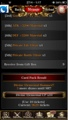
2013/04/27 13:19:52, "270:岩永 勇祐":
サギだよねー
2013/04/27 13:30:04, "268:良明 Maezawa Crooz":
ごめんマスタだ！見ます！
2013/04/27 13:32:17, "270:岩永 勇祐":
gacha_themd_count_mだね
2013/04/27 13:32:47, "270:岩永 勇祐":
themaか
2013/04/27 13:33:40, "272:smaruy30":
ok じゃあ1件めみてみる
2013/04/27 13:33:59, "268:良明 Maezawa Crooz":
ですです
すいません、入れます
一件目もスレイヤーが抜けてるだけです多分
2013/04/27 13:34:22, "268:良明 Maezawa Crooz":
俺見ます！
丸ちゃん補填の準備だけお願いします！
2013/04/27 13:34:49, "272:smaruy30":
ok
2013/04/27 13:36:54, "270:岩永 勇祐":
岩永 勇祐 sent you a photo.
2013/04/27 13:37:13, "270:岩永 勇祐":
この辛さ、わかるかい？
2013/04/27 13:37:48, "268:良明 Maezawa Crooz":
マジごめんww
やるから大丈夫！
2013/04/27 13:39:21, "270:岩永 勇祐":
マスター入れれば大丈夫だと思うけど、今実質5回とか引いてるユーザーもカウント取ってないからあと3回ってなるかも。。
2013/04/27 13:42:19, "268:良明 Maezawa Crooz":
カウントエムもー入れちゃって良い？？
2013/04/27 13:43:15, "270:岩永 勇祐":
やっちゃおう
2013/04/27 13:47:18, "268:良明 Maezawa Crooz":
本番反映しましたーもう一件のやつみますー
2013/04/27 13:49:16, "270:岩永 勇祐":
ステップアップがバグってる！！！
2013/04/27 13:49:21, "270:岩永 勇祐":
岩永 勇祐 sent you a photo.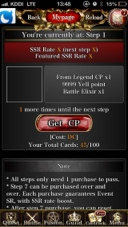
2013/04/27 13:49:38, "272:smaruy30":
pre?
2013/04/27 13:49:58, "270:岩永 勇祐":
本番！
2013/04/27 13:50:15, "270:岩永 勇祐":
メンテになる！！
2013/04/27 13:50:18, "270:岩永 勇祐":
4/26 22時00分頃から「Ultimate Olympus Cp10を3回引いたのにSRカードがもらえない」という内容のお問い合わせを
約23件受信しております。
2013/04/27 13:50:22, "270:岩永 勇祐":
間違えた
2013/04/27 13:50:29, "270:岩永 勇祐":
岩永 勇祐 sent you a photo.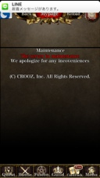
2013/04/27 13:52:23, "270:岩永 勇祐":
携帯電池14%
退室5分前
色々終わってる
2013/04/27 13:54:21, "268:良明 Maezawa Crooz":
やばいなんかステップアップ挙動おかしい！
昨日ステップアップ触ってないのに。。
自分にチケット付与して見てみます！
すいません、ありがとうございました！
2013/04/27 13:55:01, "270:岩永 勇祐":
ガチャテーマ終わってんじゃない？
2013/04/27 13:55:35, "270:岩永 勇祐":
wifiスポット探して対応する！
2013/04/27 13:56:39, "0:You":
ステップアップ治ってる！！
2013/04/27 13:57:12, "268:良明 Maezawa Crooz":
テーマ終わってない！
何も治してないよ
2013/04/27 13:57:27, "0:You":
いや！治ってない、勘違い
2013/04/27 13:58:33, "270:岩永 勇祐":
アイテム情報が取れてないんだよね
2013/04/27 13:58:41, "270:岩永 勇祐":
まさかシンクしてないよね？
2013/04/27 13:59:30, "272:smaruy30":
してない
2013/04/27 13:59:47, "274:":
おはようございます〜
ESの対応はもう完了しちゃいました？
てか、ステップアップの9999Yell point ってウケる
なにこの画面？
2013/04/27 14:00:32, "270:岩永 勇祐":
絶賛対応中ですが、これはかなり笑えない状況です。
2013/04/27 14:00:32, "268:良明 Maezawa Crooz":
エールは仕様です
gacha-extra-mも終わってないですー！
2013/04/27 14:04:08, "0:You":
今のステップアップはID 10005ですか？
2013/04/27 14:04:37, "274:":
仕様通りなのにステップ数が出てないとしたら、gacha_thema_mがあやしそう
引ける内容はitem_ｍだから、item_mは大丈夫な気がする。
トニ
そうだよ〜
2013/04/27 14:07:04, "268:良明 Maezawa Crooz":
トニー
いま動いてるのは10004だよ！
2013/04/27 14:07:30, "268:良明 Maezawa Crooz":
100005でデータはいってるのは29日用！
2013/04/27 14:08:06, "0:You":
OK
2013/04/27 14:08:17, "274:":
。。。
2013/04/27 14:08:31, "274:":
トニ
よろしくお願いします
2013/04/27 14:08:41, "268:良明 Maezawa Crooz":
gacha-thema-mも終わってない！
2013/04/27 14:09:02, "268:良明 Maezawa Crooz":
トニーテンプレ100005用にしちゃったとかない？
2013/04/27 14:09:34, "272:smaruy30":
stepup 昨日は動いてたんでしょ?
2013/04/27 14:09:40, "0:You":
それはないと思う
2013/04/27 14:10:42, "0:You":
Preで比べたいけどpreが違うのが入ってる
2013/04/27 14:12:23, "0:You":
Devも10005
2013/04/27 14:12:56, "268:良明 Maezawa Crooz":
そうだね、どっちも29日用の準備しちゃってる
2013/04/27 14:13:58, "0:You":
オープン日付は間違ってないでしょか？
2013/04/27 14:20:46, "274:":
ざっと見たけど、マスターはおかしそうなところないかも。。。
2013/04/27 14:23:08, "268:良明 Maezawa Crooz":
とりあえずボス特攻のデータは直しました！
2013/04/27 14:23:52, "0:You":
原因はphp側です
2013/04/27 14:24:56, "274:":
prj.properties.phpかな？
2013/04/27 14:25:16, "0:You":
$gachamultiplestepupdata.openthema.dailylimited.gacha thema idは文字化け
2013/04/27 14:25:39, "274:":
？
2013/04/27 14:26:17, "0:You":
◇0089って来てる
2013/04/27 14:26:34, "274:":
それか！
2013/04/27 14:27:05, "272:smaruy30":
ほんばん?
2013/04/27 14:27:17, "0:You":
Dev
2013/04/27 14:27:55, "274:":
devか。。。
2013/04/27 14:27:56, "272:smaruy30":
びびった
2013/04/27 14:28:59, "0:You":
文字化けを気にしなくていい？
2013/04/27 14:29:09, "270:岩永 勇祐":
トニー昨日ガチャトップシンクしてるけど、これは問題ないの？
2013/04/27 14:31:27, "270:岩永 勇祐":
工藤さん本番webに入ってテンプレ確認してもらえますか？
2013/04/27 14:33:27, "270:岩永 勇祐":
エクセルシオールvpnつながらない。。
2013/04/27 14:33:37, "0:You":
文字化けは原因です
2013/04/27 14:34:25, "268:良明 Maezawa Crooz":
丸ちゃん
一応ボス特攻は修正して、本番で効果発動も確認しました。
2130.2131.2132.2133
上記のカードもってるユーザーにバトエリ5個補填して下さい。
ES返します。
2013/04/27 14:34:54, "0:You":
テンプレ側でハードコードでIDを書き込めるけどphpの修正が必要
2013/04/27 14:35:41, "274:":
本番のprj.properties.phpが4/29ようのになってる。
2013/04/27 14:35:47, "274:":
だれかシンクした？
2013/04/27 14:36:03, "270:岩永 勇祐":
でも昨日はガチャのphpは本番行ってないでしょ
2013/04/27 14:36:28, "270:岩永 勇祐":
誰か本番webサーバー確認してください
2013/04/27 14:36:39, "274:":
本番、見てるよ
2013/04/27 14:36:53, "274:":
それ見て言ってるの
2013/04/27 14:37:30, "270:岩永 勇祐":
テンプレは問題なさそーですか？
2013/04/27 14:38:02, "0:You":
テンプレ側で治す
次のガチャまでPHP側で治してもらっていい？
2013/04/27 14:38:04, "274:":
ステップアップのid
10073〜が今やってるべきやつでしょ？
2013/04/27 14:38:30, "274:":
本番のさ、10090〜になってるよ。
2013/04/27 14:39:03, "274:":
今、ussocialweb06見てる
2013/04/27 14:39:12, "272:smaruy30":
それpropertiesかわってると思う
2013/04/27 14:39:24, "274:":
でしょ？
た
2013/04/27 14:39:33, "274:":
シンクしたよきっと。
2013/04/27 14:40:03, "270:岩永 勇祐":
！！
2013/04/27 14:40:33, "274:":
テンプレはオープンしてるステップアップガチャテーマ見てるから、多分大丈夫と思う
けど、見てみる！
2013/04/27 14:42:06, "270:岩永 勇祐":
すいません、俺が間違えて昨日プロパティファイルだけシンクしてるっぽい。。
2013/04/27 14:42:53, "270:岩永 勇祐":
ごめんなさい。修正してあげてもらえますか？
2013/04/27 14:43:15, "272:smaruy30":
やります
2013/04/27 14:43:30, "268:良明 Maezawa Crooz":
これES来ますね。。
2013/04/27 14:43:52, "270:岩永 勇祐":
電池来れるからSkypeで！
2013/04/27 14:44:23, "268:良明 Maezawa Crooz":
Skypeの調子悪くて接続できない。。
ネット繋がるのに！
2013/04/27 15:07:56, "272:smaruy30":
シンクしました
2013/04/27 15:08:16, "272:smaruy30":
だれかstepupひいて
2013/04/27 15:09:26, "268:良明 Maezawa Crooz":
ひきますー
2013/04/27 15:11:12, "272:smaruy30":
あと補填候補者skypeにおくりました。
2013/04/27 15:11:32, "272:smaruy30":
どういう風に補填するかきまってない。
2013/04/27 15:17:03, "270:岩永 勇祐":
携帯復活！
ステップアップ対応ありがとうございます！
すいませんでした！
補填ってSR確定のでしょ？
2013/04/27 15:18:15, "272:smaruy30":
そう!
2013/04/27 15:19:07, "272:smaruy30":
補填候補者リストまちがってるかも。
2013/04/27 15:20:17, "272:smaruy30":
thema id 10106 で gacha hisrory t からしぼりこんだけど
2013/04/27 15:21:20, "272:smaruy30":
properties って昨日シンクしたのいつですか?
2013/04/27 15:21:35, "272:smaruy30":
岩永さんが
2013/04/27 15:26:17, "272:smaruy30":
あシンクリストみてみる
2013/04/27 15:30:04, "268:良明 Maezawa Crooz":
Skypeオンラインになるのに会話表示されないー！
ボス特攻が効かなかったユーザーにはさっき送ったIDのカードもってる人にバトエリ5本
三回に一回SR確定しなかった人には
gacha-thema 10106のテーマ引いた回数➗3分のSRチケット
を補填しましょ！
2013/04/27 15:30:29, "270:岩永 勇祐":
昨日の21時18分にシンクしてます！
2013/04/27 15:31:05, "270:岩永 勇祐":
5回とか引いてるユーザーとかどうする？
2013/04/27 15:31:56, "270:岩永 勇祐":
つか19回とかいるじゃんw
2013/04/27 15:32:04, "268:良明 Maezawa Crooz":
テーマ10106÷3＋1
分のチケットがいいかな
2013/04/27 15:32:07, "272:smaruy30":
ok わかりました。でもシンクリストにでてない。。なんでだろ
2013/04/27 15:32:55, "270:岩永 勇祐":
ん？21時19分のシンクチャンネルに出てませんか？
2013/04/27 15:33:35, "272:smaruy30":
でてない
2013/04/27 15:34:29, "270:岩永 勇祐":
あっ、25日の見てた。
2013/04/27 15:34:42, "270:岩永 勇祐":
あれ？
2013/04/27 15:34:50, "270:岩永 勇祐":
俺シンクしてない
2013/04/27 15:35:00, "274:":
えー！！！
2013/04/27 15:35:06, "270:岩永 勇祐":
じゃなんで上がってたんだろ
2013/04/27 15:35:18, "274:":
いつのまにシンクした？
2013/04/27 15:35:39, "270:岩永 勇祐":
チャンネルには履歴ないですね
2013/04/27 15:38:15, "270:岩永 勇祐":
誰かってより、時間が気になりますね。。何時から障害があったんだろ。
2013/04/27 15:38:56, "272:smaruy30":
昨日stepup正常にひけたひといる? それ何時くらいだろう?
2013/04/27 15:44:35, "272:smaruy30":
4/29向けproperties に thema id 10106 2箇所でてくる。
2013/04/27 15:46:22, "272:smaruy30":
ひとつは lottery もうひとつは stepup17
2013/04/27 15:46:55, "272:smaruy30":
stepup 17 までひいてるやつなんかいないか。
2013/04/27 15:49:01, "271:えんはる Crooz":
参戦できなくてすみません！
本番はもう治ってるんですか？
2013/04/27 16:08:55, "272:smaruy30":
さっき言ったstepup 17 はうそ。10106は2箇所あるけど、もういっこはstepup 11のlimitation action用でした。
2013/04/27 16:09:59, "272:smaruy30":
なのでthema id 10106でokだと思う。
2013/04/27 16:11:05, "272:smaruy30":
↑補填の絞りこみについて
2013/04/27 16:15:33, "272:smaruy30":
前澤さん案でいきますか。
ボス特攻が効かなかったユーザーにはさっき送ったIDのカードもってる人にバトエリ5本
三回に一回SR確定しなかった人には
gacha-thema のテーマ10106÷3＋1
分のチケット
を補填しましょ！
2013/04/27 16:16:54, "270:岩永 勇祐":
ガチャ履歴見てみたけど、
今日の朝とかにも回してる履歴あるんだよね。
だから止まってたのは俺らが気がついた寸前だと思うよ。
2013/04/27 16:18:07, "268:良明 Maezawa Crooz":
補填はそれでお願いします！
完了次第、返信します！
2013/04/27 16:21:19, "272:smaruy30":
わかりました。これから補填用sqlつくります。
2013/04/27 16:27:47, "270:岩永 勇祐":
丸ちゃんホント毎週ありがとう(°_°)
2013/04/27 16:28:56, "272:smaruy30":
2013/04/27 16:31:59, "268:良明 Maezawa Crooz":
ホントにごめんねーありがとーう！！
2013/04/27 17:07:27, "272:smaruy30":
とりあえず、atk booster の補填おわりました
2013/04/27 17:10:07, "272:smaruy30":
ガチャ10連 1回とか2回のひとにもsrガチャちけあげる?
2013/04/27 17:10:51, "268:良明 Maezawa Crooz":
んーそうだね、一回二回の人にも一枚あげよう！
2013/04/27 17:11:08, "272:smaruy30":
ok!
2013/04/27 17:44:38, "272:smaruy30":
カウントダウン不具合の補填もおわりました。
2013/04/27 17:46:04, "272:smaruy30":
返信お願いします!
2013/04/27 17:51:08, "268:良明 Maezawa Crooz":
了解です！ありがとうございます！
いまちょっと外にいるんで、30分後位に返信します！
2013/04/27 18:34:05, "270:岩永 勇祐":
丸ちゃんありがとー！
2013/04/27 18:36:58, "268:良明 Maezawa Crooz":
返信しましたー！
丸ちゃん、岩永さん、ホントにありがとう！お疲れ様でした！
2013/04/27 18:51:07, "272:smaruy30":
お疲れ様でしたー!
2013/04/27 18:53:12, "271:えんはる Crooz":
みなさんありがとうございます！
お疲れ様でした！
2013/04/27 18:56:35, "0:You":
お疲れ様でした！
2013/04/27 19:22:08, "272:smaruy30":
pre環境のprj.properties を4/29 stepup 用の状態に戻しました。
緊急時シンクの時はexcludeしてください。
2013/04/29 16:07:52, "270:岩永 勇祐":
今日18時にステップアップだけど、準備平気そうですか？
2013/04/29 16:09:29, "272:smaruy30":
データいれてシンクするだけのはず。。
2013/04/29 16:09:51, "270:岩永 勇祐":
了解っすー
2013/04/29 16:10:47, "272:smaruy30":
toni シンクリストでてくるのは、全部いれていいんだよね?
2013/04/29 16:11:29, "272:smaruy30":
exclude はずしちゃうけどok?
2013/04/29 16:12:43, "268:良明 Maezawa Crooz":
岩永さんありがとうございますー！
いまステップ7以降の10回目以降なんですがpreの動作は問題なさそうですー！
2013/04/29 16:16:23, "0:You":
OK syncは
2013/04/29 16:24:10, "268:良明 Maezawa Crooz":
今日18時に変更になる点
ステップアップ⬇
gacha-multiple-step-idの
10004が終了
10005が開始
10連⬇
gacha-thema-mの
10106が終了
313が開始
2013/04/29 16:26:30, "270:岩永 勇祐":
おけ〜いちよ17時半くらいにはskype集まりましょ〜
2013/04/29 16:26:56, "268:良明 Maezawa Crooz":
お願いしますー！！
2013/04/29 16:27:22, "272:smaruy30":
pre環境gachatopに
ultimate olympus
とか
U.O. とかってでてる。
2013/04/29 16:28:48, "272:smaruy30":
なおさないとまずい。
2013/04/29 16:29:25, "272:smaruy30":
blazing flight だよね?
2013/04/29 16:32:29, "268:良明 Maezawa Crooz":
そうです！
丸ちゃん電話番号教えてもらえます？
2013/04/29 16:32:50, "272:smaruy30":
0904322952
2013/04/29 16:33:51, "268:良明 Maezawa Crooz":
つながらない (´-ι_-｀)
2013/04/29 16:34:25, "272:smaruy30":
ごめん、
2013/04/29 16:34:38, "272:smaruy30":
09044322952
2013/04/29 16:38:00, "272:smaruy30":
toni skypeはいれる?
2013/04/29 16:38:09, "0:You":
Preはblazing flightCP
何でそのまんまにならないだろ？
2013/04/29 16:39:21, "272:smaruy30":
smarty conf かえないといけないんじゃないっけ?
2013/04/29 16:45:30, "0:You":
多分、ね！PREと同じのであればOK
2013/04/29 16:46:58, "272:smaruy30":
skypeはいれる?
2013/04/29 16:48:07, "0:You":
入ってる、けどiPhoneのスカイプだから同期は遅い。
なの話になったの？
2013/04/29 16:48:28, "272:smaruy30":
lr交換所もでてないって
2013/04/29 16:49:43, "272:smaruy30":
template修正必要みたい。できる?
2013/04/29 16:50:07, "0:You":
出来ないかも
2013/04/29 16:51:10, "0:You":
今森ビルの近くにいるけどカードがない。
誰か開けてくれれば出来るよ
2013/04/29 16:51:39, "268:良明 Maezawa Crooz":
みんな会社にはいないよ( ꒪⌓꒪)
2013/04/29 16:57:12, "0:You":
どうしたらいいの？
修正するところ分かってる人いるなら、たのむ。
2013/04/29 16:57:57, "0:You":
どうしてダメだったら会社に行ってみる
2013/04/29 17:16:08, "270:岩永 勇祐":
今風呂出た。なんかバタついてんじゃんw
2013/04/29 17:30:21, "274:":
今、メール見た〜！
なんだなんだ〜？
2013/04/29 18:59:58, "272:smaruy30":
ちょっとpcから離れます。
2013/04/30 09:52:10, "269:":
今日が出勤日ですよね？
2013/04/30 09:53:06, "0:You":
Yes, r u going too?
11am~
2013/04/30 09:53:36, "269:":
Yap. Will prolly arrive just in time!
2013/04/30 09:53:56, "0:You":
c you there!
2013/04/30 10:20:28, "271:えんはる Crooz":
やべ！今日29日と勘違いしてました！
急いで準備しますー∑(ﾟДﾟ)
2013/04/30 10:22:09, "269:":
やべ！ww
2013/04/30 10:42:57, "0:You":
10ガチャを引いた後にはボーナスのアニメが出ないの、please waitで止まっちゃてる
2013/04/30 10:50:19, "272:smaruy30":
ほんとだ。
2013/04/30 10:54:38, "274:":
lotteryフラッシュのつなぎこみ怪しいですね。
prj.propのフラッシュ名の定義と、実際にファイルがあるか見れます？
もう着くけども。
2013/04/30 10:55:32, "272:smaruy30":
preだと動きます。
2013/04/30 11:03:17, "274:":
じゃあ、マスターかな。。。
2013/04/30 11:04:47, "274:":
わかんない！全部チェック!
2013/04/30 11:12:06, "272:smaruy30":
lottery 残数ゼロ
2013/04/30 11:12:48, "274:":
やばいやばい！
2013/04/30 11:13:35, "268:良明 Maezawa Crooz":
え、なにこれおかしくない？
2013/04/30 11:14:05, "0:You":
Maezawa ,電話をしていい？
2013/04/30 11:14:25, "268:良明 Maezawa Crooz":
もーつく！
2013/05/02 10:11:23, "269:":
11:30出社します！
2013/05/02 11:00:19, "270:岩永 勇祐":
12:30出社しますー
2013/05/02 11:07:46, "0:You":
雪が降ると岩永さんのヒゲが氷るんですね〜
2013/05/02 22:23:32, "271:えんはる Crooz":
対人バトルのリクエスト、一人以上に送れますか？
3連続で1人にしか送れない(;_;)
2013/05/02 22:26:04, "269:":
ギルドメンバーが一人しか参加してないからじゃないでづか？
2013/05/02 22:26:21, "274:":
自分も三回送ってみましたが、一度に送れるのは一人でした(ｰ ｰ;)
2013/05/02 22:26:59, "271:えんはる Crooz":
1回目 八木さん
2回目 岩永さん
3回目 前澤くん
でした！
2013/05/02 22:27:12, "274:":
一回目ヤギさん宛で、二回目遠藤さん宛で、三回目岩永さん宛だったとおもいます。。。
2013/05/02 22:27:32, "269:":
関係ないか。。。
2013/05/02 22:27:33, "274:":
ギルメン一人ずつがしようなのかな。。、
2013/05/02 22:27:42, "271:えんはる Crooz":
参加状況関係なさそうですね。。
DEVでは一気に送れてた気がします！
2013/05/02 22:28:01, "274:":
帰ってPGみてみます！
2013/05/02 22:34:59, "271:えんはる Crooz":
あれ？エクリプスカード受け取った後、useってボタン押したらそのページ行けましたよね？
2013/05/02 22:36:26, "271:えんはる Crooz":
っていうか先着報酬本番ででてなーーい！
2013/05/02 22:36:38, "272:smaruy30":
いけますよー。いけない?
2013/05/02 22:37:12, "271:えんはる Crooz":
まるさん>
本番、アイテムリストに遷移しちゃいました！
2013/05/02 22:38:33, "272:smaruy30":
ok みてみます。
2013/05/02 22:39:00, "271:えんはる Crooz":
お願いしますーm(_ _)m
かくさん、本番に先着報酬マスタぷりーず！
2013/05/02 22:39:19, "268:良明 Maezawa Crooz":
いまJがいれてるー！
2013/05/02 22:39:37, "271:えんはる Crooz":
ありがとうございますー！(;_;)
2013/05/02 22:44:16, "272:smaruy30":
遠藤さん なにイクリプスカードでおきました?
2013/05/02 22:45:04, "271:えんはる Crooz":
トータルエクリプスカードでした！
2013/05/02 22:45:46, "271:えんはる Crooz":
Rです
2013/05/02 22:48:58, "269:":
先着報酬完了です！お騒がせしました。ありがとうございました！
2013/05/02 22:49:16, "271:えんはる Crooz":
確認しましたー(^ ^)
ありがとうございます！
2013/05/02 22:55:24, "272:smaruy30":
なおしました!
2013/05/02 22:55:40, "272:smaruy30":
okですか?
2013/05/02 22:56:18, "271:えんはる Crooz":
earthGETしたんで確認します！
2013/05/02 22:56:53, "271:えんはる Crooz":
治ってました！
ありがとうございます＼(^o^)／
2013/05/02 22:58:53, "272:smaruy30":
ありがとうございます!
2013/05/02 22:59:56, "271:えんはる Crooz":
工藤さん>
今、リクエスト2人に送れました！
もしかして、称号によって送れる人数が変わってくるんですかね？
2013/05/02 23:08:25, "269:":
JunJun Kwak sent you a photo.

2013/05/02 23:08:49, "269:":
やばい。。。これどうしよう。。。
2013/05/02 23:10:29, "271:えんはる Crooz":
トータルエクリプスカードRRが出るはず！
データはいってますか？
2013/05/02 23:13:37, "268:良明 Maezawa Crooz":
エクリプスカード、データ入ってるはずなんだけど( ꒪⌓꒪)なんでー！
2013/05/02 23:13:54, "272:smaruy30":
oh
2013/05/02 23:14:07, "271:えんはる Crooz":
じゃあ報酬マスタ？
デブではちゃんと表示されてるんで、データだと思いますー！
2013/05/03 01:30:05, "272:smaruy30":
item m
id 240
いれときました。
2013/05/03 02:03:57, "272:smaruy30":
smaruy30 sent you a photo.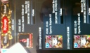
2013/05/03 02:04:13, "272:smaruy30":
にほんご
2013/05/03 03:55:03, "268:良明 Maezawa Crooz":
Ｊ!!!
2013/05/03 07:23:21, "271:えんはる Crooz":
その日本語はコントローラかも！
2013/05/03 07:23:41, "271:えんはる Crooz":
まるさん、アイテムマスタありがとうございます！
2013/05/03 10:16:28, "272:smaruy30":
そう、その日本語はコントローラ。
2013/05/03 10:20:51, "0:You":
Templateですか？phpですか？
2013/05/03 10:21:16, "272:smaruy30":
php
2013/05/03 10:31:49, "271:えんはる Crooz":
私15時くらいまでPC触れないです(;_;)
しかも、もう贈り物にあるやつはバッチで治さなきゃならないですよね？
2013/05/03 10:35:26, "272:smaruy30":
んー。どうする? とりあえず、プログラムなおしちゃう?
2013/05/03 10:36:33, "272:smaruy30":
前) 討伐...pt達成報酬
2013/05/03 10:37:34, "272:smaruy30":
後) ... Ept achievement reward
2013/05/03 10:37:44, "272:smaruy30":
でよい?
2013/05/03 10:39:50, "272:smaruy30":
Jさん おきてる?
2013/05/03 10:43:34, "271:えんはる Crooz":
あちーぶりわーどで良かったと思います！
できればEvent ptってしてください！
すみません〜〜
2013/05/03 11:15:12, "0:You":
今回はエンドさんのおかげで緊急ＥＳなしですんだね！
2013/05/03 11:22:55, "272:smaruy30":
修正してシンクしました。
2013/05/03 11:36:10, "269:":
すみません。今起きました。丸山さん、遠藤さん、翻訳ありがとうございます。上記でいいと思います。
2013/05/03 11:40:16, "0:You":
来た！
2013/05/03 11:40:18, "0:You":
：
------------------------------------------------------------
Deity Wars
------------------------------------------------------------
内容：
------------------------------------------------------------
■お問い合わせ件数増加について
・タイトル：Deity Wars
・報告日時：2013/05/03 11:35
0時39分頃から「前回のイベントのランキング報酬を受け取っていません。」という内容のお問い合わせを
約8件受信しております。
=============================================================
2013/05/03 11:41:04, "269:":
これFBで告知したのに。。。
2013/05/03 11:42:21, "271:えんはる Crooz":
まぁ返しますね！
いつに付与するんでしたっけ？
2013/05/03 11:42:26, "271:えんはる Crooz":
今日か！
2013/05/03 11:44:47, "272:smaruy30":
fbではいつかははっきりかいてないですねー。今日なのかな?
2013/05/03 11:44:56, "269:":
今日です！今熟睡してる工藤さんが起きたあとに。
2013/05/03 11:45:19, "272:smaruy30":
ok
2013/05/03 11:45:21, "269:":
FBではわざとあやふやにしておきました。。。
2013/05/03 11:46:11, "271:えんはる Crooz":
じゃあ3日中に順番に付与するって返しましょー
携帯から返しますね！
2013/05/03 11:46:54, "272:smaruy30":
わかりました。よろしくお願いします。
2013/05/03 11:47:05, "271:えんはる Crooz":
まるちゃん、ガチャのESきたよ( ；´Д｀)
2013/05/03 11:47:17, "272:smaruy30":
まじ?
2013/05/03 11:47:40, "271:えんはる Crooz":
内容：
------------------------------------------------------------
■お問い合わせ件数増加について
・タイトル：Deity Wars
・報告日時：2013/05/03 11:35
3時21分頃から「event effective cardが機能しない。」という内容のお問い合わせを
約6件受信しております。
2013/05/03 11:48:36, "272:smaruy30":
ぐはっ!!
2013/05/03 12:03:13, "272:smaruy30":
gach のevent effective card に blazing flight cp のカードが入ってるみたいだけど、これokだっけ? テンプレ変?
2013/05/03 12:05:47, "0:You":
DBから引っ張るデータじゃなかったっけ？
2013/05/03 12:09:22, "272:smaruy30":
調べてみないとわからないけど、dev と本番ででてるページが違う。
2013/05/03 12:57:46, "272:smaruy30":
テンプレート側blazing flight って字はでてるけど、表示されてるカードは今回のイベントのもの。だけどカードの数が少したりなさそう。テンプレ修正要です。
2013/05/03 13:00:17, "272:smaruy30":
event pt boost がつかない件。
今回のイベントでガチャひいてもらったカードのevent pt boost つくのは、Duel zone だけですか?
2013/05/03 13:00:53, "269:":
レイドボス特攻もあると思います
2013/05/03 13:04:23, "272:smaruy30":
devでpt boost もってるユーザで arenaBattleTopにきても Event Pt Boost 0ptって表示されるのはなんでだろう。
2013/05/03 13:04:54, "272:smaruy30":
deck にはいってないから?
2013/05/03 13:18:10, "268:良明 Maezawa Crooz":
おはようございますー！
どれのカードのこといってんのかな( ꒪⌓꒪)ちょっとみてみますー！
2013/05/03 13:25:17, "272:smaruy30":
おはようございます。event pt boosterについてはざっとメールチェックしてみたけど特定のカードについて記載なしでした。atk boosterについてはもう一回メールチェックしてみます。
2013/05/03 14:01:45, "272:smaruy30":
atk boosterカード名はかいてないです。
7xのカードでおきてるみたい。1件。
2013/05/03 14:03:22, "272:smaruy30":
あとssr Durendalsってカードも1件問合せきてる。こちらは特効でないと思うけど、
2013/05/03 14:03:39, "272:smaruy30":
カード説明に
2013/05/03 14:04:46, "272:smaruy30":
event raid boss に効果あり的な記載があります。
2013/05/03 14:06:15, "271:えんはる Crooz":
なんでそんな記載でちゃうんですかね？
2013/05/03 14:06:57, "272:smaruy30":
effective to the event raid bosses.
2013/05/03 14:07:07, "272:smaruy30":
だって。
2013/05/03 14:07:51, "271:えんはる Crooz":
ベタ書きですか？
2013/05/03 14:07:55, "272:smaruy30":
なんでかわかんない。
2013/05/03 14:08:39, "272:smaruy30":
ベタ書き。管理画面で確認しました。
2013/05/03 14:08:51, "272:smaruy30":
データみてみる
2013/05/03 14:09:12, "271:えんはる Crooz":
ゔーん。
あと1時間くらいしたらテンプレ見れると思うんですが…
2013/05/03 14:11:32, "271:えんはる Crooz":
カード説明ってカードマスタですかね？
2013/05/03 14:12:11, "272:smaruy30":
カードスキル説明かな。
2013/05/03 14:12:39, "272:smaruy30":
card skill effect m かな。
2013/05/03 14:20:24, "272:smaruy30":
card skill m
2013/05/03 14:20:38, "272:smaruy30":
id 566, 567
2013/05/03 14:23:52, "272:smaruy30":
user card t に 1155レコード.
2013/05/03 14:27:48, "272:smaruy30":
説明なおすと、またガヤガヤいわれちゃうかも。
2013/05/03 14:29:22, "272:smaruy30":
前澤さん 特効つける?
2013/05/03 14:30:03, "272:smaruy30":
カードidは、1563から1566
2013/05/03 14:31:34, "272:smaruy30":
damage x7発動しない件が片付けばatk boosterの件は解決。
2013/05/03 14:34:44, "270:岩永 勇祐":
おはようございます！
やっぱり来たか…。
2013/05/03 14:41:34, "270:岩永 勇祐":
今って上idに特攻がつけば問題解決って感じですか？
2013/05/03 14:42:30, "272:smaruy30":
そう、そのほうこうかなって思ったけど、どう思います?
2013/05/03 14:42:57, "272:smaruy30":
それか説明けしちゃう。
2013/05/03 14:43:36, "270:岩永 勇祐":
どっちにしろ前座君判断が必要になりそうですね
2013/05/03 14:43:57, "272:smaruy30":
そうですね。
2013/05/03 15:00:57, "268:良明 Maezawa Crooz":
ごめんなさい二度寝しちゃいました。
2013/05/03 15:02:35, "272:smaruy30":
event point boosterは、treasure獲得時にちゃんともらえることを本番で確認しました。
2013/05/03 15:03:40, "268:良明 Maezawa Crooz":
特攻つけましょう！
これスキルってことはstrongboss_weekpointなんたらですか？
2013/05/03 15:04:59, "272:smaruy30":
なんでtreasure獲得時にしか cpのept boostもらえないなら仕様とおりかと思います。
2013/05/03 15:05:24, "272:smaruy30":
よくわかんないでーす。
2013/05/03 15:07:20, "272:smaruy30":
だれかぱっとわかる人いますか?
2013/05/03 15:07:43, "268:良明 Maezawa Crooz":
日本版だと秘宝獲得の時しか特攻発動しないんですけど、USはボス倒した人にもポイントつく様にフルムーンではしてました。
2013/05/03 15:08:35, "272:smaruy30":
あっそれかも。
2013/05/03 15:08:46, "272:smaruy30":
メールで
2013/05/03 15:09:02, "268:良明 Maezawa Crooz":
今回のイベントでもボス倒したらpt特攻つくようにする方向で工藤さんと話してたんですが、その処理いれ忘れてんのかも
2013/05/03 15:09:22, "272:smaruy30":
ボスとたたかった時につかないっていうのが1件。
2013/05/03 15:10:54, "272:smaruy30":
あとのメール3, 4件はどういう時にept boost しないのか記載なし。
2013/05/03 15:12:39, "268:良明 Maezawa Crooz":
多分⬆のやつが原因かと。
これって、処理いれるの大変ですか？
2013/05/03 15:13:50, "272:smaruy30":
んー、よくわかんない。。(>_<)
2013/05/03 15:13:52, "272:smaruy30":
くどさーん
2013/05/03 15:15:13, "272:smaruy30":
でんわしてみる
2013/05/03 15:16:22, "272:smaruy30":
でない
2013/05/03 15:23:52, "274:":
おはようございます
処理いれ忘れかも。。。
すぐ入れられます。
2013/05/03 15:30:22, "274:":
まず、イベントのpt追加をいれます
2013/05/03 15:30:43, "272:smaruy30":
よろしくです!
2013/05/03 15:31:15, "272:smaruy30":
俺テンプレやろうかな。
2013/05/03 15:31:50, "272:smaruy30":
遠藤さん, やってもok?
2013/05/03 15:32:23, "271:えんはる Crooz":
え、大丈夫ですけど、私やりますよ！
2013/05/03 15:34:39, "272:smaruy30":
わかりました。
お願いします!
EventAdvantageCard.tpl
2013/05/03 15:37:11, "272:smaruy30":
前澤さん 上記のページに5/6から追加分のstepup のevent effective cardでてもok?
2013/05/03 15:38:23, "274:":
今回のイベント特攻かーど、イベントに専用ページがあるので、そっちを使ってはどうですか？
2013/05/03 15:40:17, "271:えんはる Crooz":
スカイプつながらねーい
2013/05/03 15:40:43, "272:smaruy30":
おや
2013/05/03 15:41:39, "274:":
遠藤さん
イベントの特攻ページのうえに、バトルアニメのテストアニメボタンがあるのですが、動かないのでボタン消していただけますか？
2013/05/03 15:42:03, "274:":
スカイプ、なにもでてこな〜い
2013/05/03 15:42:45, "272:smaruy30":
今日スカイプなにもしゃべってないです。多分。
2013/05/03 15:45:50, "271:えんはる Crooz":
工藤さん対応しますー！
2013/05/03 17:27:55, "274:":
前澤さん
ボス倒した時にも秘宝がもらえるようになってるのですが、その秘宝にもイベントポイント連動させますか？
2013/05/03 17:28:57, "274:":
問題は、ボスキルポイントにも連動ポイントが付いて、さらに秘宝のポイントにも連動ポイントがついてしまうところです。
合わせて付けますか〜？
2013/05/03 18:31:06, "272:smaruy30":
イクリプスカードのヘルプの画像日本語になってるので、dev環境の画像でpre環境の画像差し替えましたが、画像がかわりません。しばらく待たないといけないんでしたっけ?
2013/05/03 18:33:07, "274:":
画像名一緒だとキャッシュのってしまってるからダメなのかも。。。
画像の名前を変更して、テンプレも画像名を変更してみては？
2013/05/03 18:34:35, "272:smaruy30":
わかりましたー。
2013/05/03 18:36:02, "268:良明 Maezawa Crooz":
ポイントの付け方はフルムーンと同じ感じにしましょう！ボス倒した時の秘宝にも連動もたせましょ！
2013/05/03 18:36:34, "274:":
りようかいです。
2013/05/03 19:12:23, "272:smaruy30":
緊急es返信しないとですね。
2013/05/03 19:13:08, "272:smaruy30":
順次対応中にしますか?
2013/05/03 19:13:43, "272:smaruy30":
もう結構時間たっちゃってますけど。
2013/05/03 19:14:46, "271:えんはる Crooz":
補填とか必要何じゃないですかね？
現在修正対応中&お詫び補填って返信しますか！
ごめんなさい。PCのバッテリー切れちゃいました…
2013/05/03 19:16:50, "272:smaruy30":
補填の内容どうしましょうか。
2013/05/03 19:17:37, "274:":
ガチャ連動した人が被害者だけども、全体に補填する？
2013/05/03 19:37:14, "272:smaruy30":
前澤さんスカイプみれてない?
2013/05/03 19:45:40, "271:えんはる Crooz":
お問い合わせきた人or該当カード所持orガチャ引いた人で良いんじゃないですか？
前澤くん反応ないんで、丸さんいつものお問い合わせの感覚で決めちゃいますか！
2013/05/03 19:51:27, "272:smaruy30":
一応いま前澤さんと電話して、ept もらえなかった人にple, pbex5 づつ補填するってことになりました。
2013/05/03 19:53:08, "272:smaruy30":
lr 交換所はまだ表示されてますが、前回イベント報酬にlr交換チケットがあるので、もう一日ひらくことになりました。
2013/05/03 19:54:47, "0:You":
了解
2013/05/03 19:54:58, "272:smaruy30":
gacha top lr 交換所バナーしたのオープン期限を5/4 0500にへんこうします。
2013/05/03 19:59:36, "272:smaruy30":
補填はあれですね、atk booster きかないっていってた人にもですね。
2013/05/03 20:01:38, "272:smaruy30":
x7 のひとは勘違いみたいですけど、緊esの返信わけられないので一緒に補填しちゃいますか。
2013/05/03 20:01:41, "274:":
eptもらえなかった人は、conjunction_usr_t
boost効かなかった人はuser_card_t
で見て補填ですかね。
2013/05/03 20:13:15, "272:smaruy30":
遠藤さん、か誰か、pre環境でevent 連動ポイントもらえるかどうか確認テストお願いできないですかー。
2013/05/03 20:13:44, "272:smaruy30":
これから補填準備しますので。
2013/05/03 20:22:07, "268:良明 Maezawa Crooz":
みまーす！
2013/05/03 20:25:02, "272:smaruy30":
前澤さん
とりあえず、緊急es
修正対応中、
補填します
でかえしちゃいますね。
2013/05/03 20:27:24, "268:良明 Maezawa Crooz":
お願いします！
2013/05/03 20:31:28, "272:smaruy30":
返信しました
2013/05/03 20:32:10, "274:":
チームのランキング報酬
ビーナスガーデンの時は、上位ギルドでも本人が10000ポイント以上ないともらえなかったんですが、アークワールドエンドでは貰えていいのでしょうか？
2013/05/03 20:37:42, "268:良明 Maezawa Crooz":
そういう注意書きは記載されてたんですかね？
もし記載なかったらあげるしかないかと。
2013/05/03 20:44:52, "274:":
探したけど記載ないっぽいので、全員に付与しますね。
2013/05/03 20:48:02, "268:良明 Maezawa Crooz":
了解です！
2013/05/03 20:48:16, "268:良明 Maezawa Crooz":
良明 Maezawa Crooz sent you a photo.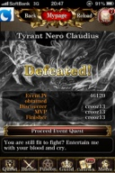
2013/05/03 20:48:17, "268:良明 Maezawa Crooz":
良明 Maezawa Crooz sent you a photo.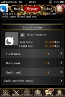
2013/05/03 20:49:29, "268:良明 Maezawa Crooz":
いま特攻pt1万600あって、もらえたpt⬆こんなかんじでした
2013/05/03 20:50:38, "268:良明 Maezawa Crooz":
これもらえたptのうち何ptが特攻なのかでないんですね( ꒪⌓꒪)
2013/05/03 20:51:32, "274:":
連動ポイント、アサインはしたんですが、テンプレ直さないとダメですね。
2013/05/03 20:58:09, "274:":
一つコミット忘れあったので、もう一度何処かで確認お願いJIS！
2013/05/03 20:58:26, "274:":
ミッションの秘宝ポイントも少し変わるはずです。。。
2013/05/03 21:01:39, "274:":
アークワールドエンドの報酬付与準備がやっとできました。
連動ポイントのが出来たら一緒にシンクします。
2013/05/03 21:02:32, "268:良明 Maezawa Crooz":
ありがとうございますー！！
2013/05/03 21:02:47, "272:smaruy30":
さきどうぞ。
2013/05/03 21:06:16, "271:えんはる Crooz":
バッテリーがー(;_;)
今から電気屋さん探してみます💦
2013/05/03 21:06:50, "274:":
遠藤さん
大丈夫。まるちゃんが直せるよ！ｗ
2013/05/03 21:07:39, "272:smaruy30":
工藤さんがなおせる
2013/05/03 21:10:21, "274:":
おっけー
やるけど、その前にコントローラだけシンクしますよ。
前澤さん、確認しましたが、大丈夫そうですね。
2013/05/03 21:18:39, "272:smaruy30":
ok
2013/05/03 21:18:40, "268:良明 Maezawa Crooz":
お、ありがとございます！
2013/05/03 21:20:15, "271:えんはる Crooz":
工藤さん、テンプレLINEでザックリ送ります！ｗ
本当すみません(;_;)
2013/05/03 21:20:56, "272:smaruy30":
あとept の補填6300件ぐらい x2セットあるんですが、これsqlたたくのまずいかな。
2013/05/03 21:21:18, "272:smaruy30":
1000けんぐらいずつ
2013/05/03 21:21:49, "274:":
対象者が増えてる可能性があります。。。
2013/05/03 21:22:25, "272:smaruy30":
いいんじゃない? w
2013/05/03 21:22:53, "272:smaruy30":
なんかいいバッチないかな。
2013/05/03 21:26:10, "274:":
いいバッチ
スカイペしたよー
2013/05/03 21:26:31, "272:smaruy30":
ぶっちゃけ
2013/05/03 21:26:34, "274:":
報酬付与完了しました。
2013/05/03 21:26:45, "274:":
俺がやればいいの？ｗ
2013/05/03 21:27:06, "272:smaruy30":
全補填したい! w
2013/05/03 21:27:58, "274:":
俺も全補填でいいと思う。対象者多いもんね。
2013/05/03 21:29:34, "272:smaruy30":
そそそ。どう? 前澤さん、どー思う?
2013/05/03 21:29:36, "274:":
おなかすいた！
飯食ってくる！
テンプレ、明日じゃダメかな？
2013/05/03 21:29:50, "268:良明 Maezawa Crooz":
いーよ！全補填でいこ！w
2013/05/03 21:30:05, "272:smaruy30":
ﾋｬﾎｰｲ
2013/05/03 21:34:34, "271:えんはる Crooz":
イベント連動効果発動中
You have effect card in this event.
+○ Event pt boost!
2013/05/03 21:34:55, "271:えんはる Crooz":
ふう！LINEはコーディングしづらいなー！
2013/05/03 21:35:07, "272:smaruy30":
w
2013/05/03 21:38:26, "271:えんはる Crooz":
明日なら、私バッテリー買います。
今静岡まで来てしまって会社に行けない(>_<)
2013/05/03 21:40:34, "272:smaruy30":
トニー come online
2013/05/03 21:41:03, "274:":
すごい！遠藤さん！
2013/05/03 21:42:21, "272:smaruy30":
これから全体補填します!
2013/05/03 21:42:21, "268:良明 Maezawa Crooz":
静岡にいるんだーすけべだなー（´-`）
2013/05/03 21:43:08, "272:smaruy30":
へぇいーなー。
2013/05/03 21:47:11, "271:えんはる Crooz":
すけべしにきた(^｡^)
2013/05/03 21:48:22, "271:えんはる Crooz":
でも一個目のクラス間違えてると思いますー！
section_marginとペアのクラスなんだっけー|(;_;)|
2013/05/03 21:52:49, "272:smaruy30":
w
2013/05/03 21:53:22, "272:smaruy30":
全体補填終わりました!
2013/05/03 21:56:04, "272:smaruy30":
テンプレ修正おおいの?
2013/05/03 21:56:53, "272:smaruy30":
あとgacha top のlr交換所の日付なおさないと。
2013/05/03 22:00:30, "272:smaruy30":
日付直します
2013/05/03 22:09:14, "272:smaruy30":
なおしました。
2013/05/03 22:11:15, "268:良明 Maezawa Crooz":
丸ちゃんホントにありがとう(T_T)
2013/05/03 22:26:39, "270:岩永 勇祐":
みんな緊急ES対応ありがとう！！！
2013/05/03 22:32:58, "269:":
お疲れ様でした！
2013/05/03 22:33:39, "0:You":
ありがとう、ね！
2013/05/03 22:36:20, "272:smaruy30":
お疲れ様です!
2013/05/03 22:36:51, "272:smaruy30":
おわっていいのかな?
2013/05/03 23:20:42, "268:良明 Maezawa Crooz":
まだなんか残ってます‥？
2013/05/03 23:46:24, "272:smaruy30":
や、工藤さんのほうの状況わかんなかったから。
2013/05/03 23:47:30, "272:smaruy30":
特に残ってません!
2013/05/04 00:08:55, "268:良明 Maezawa Crooz":
おっけーです！
丸ちゃん、お疲れ様でした！ホントに！
残りをゆっくり休んで下さい！
2013/05/04 00:10:40, "272:smaruy30":
はーい。どもーありがとうございましたー。
2013/05/04 00:10:47, "272:smaruy30":
2013/05/04 00:14:57, "272:smaruy30":
ビールのんでまーす。皆さん良い週末を～。(^-^)
2013/05/04 11:24:34, "271:えんはる Crooz":
うちらが使ってるDELLの機種名分かりますか？(O_O)
2013/05/04 13:39:53, "268:良明 Maezawa Crooz":
良明 Maezawa Crooz sent you a photo.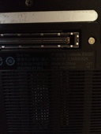
2013/05/04 13:40:36, "268:良明 Maezawa Crooz":
おはよーん！
ES来てますー！
5月3日 22時21分頃から「カードを強化しようとすると画面が白くなり強化が出来ない。」という内容のお問い合わせを約12件受信しております
これはトニーかな？
2013/05/04 13:47:01, "272:smaruy30":
なんだろ、緊急esの内容だけだとわからんですなー。enhanceみたい。さっきやったらうまくいったけど。
2013/05/04 13:47:17, "272:smaruy30":
特定のカードかも
2013/05/04 13:48:50, "271:えんはる Crooz":
特定のカードかもですね…
私、本番みようとしたらJJのアップルパスワード聞かれて見れなくなっちゃったー(;_;)
2013/05/04 13:50:18, "272:smaruy30":
メールみてみる。
2013/05/04 13:50:56, "272:smaruy30":
けど今日あまり時間ないです。。
2013/05/04 13:55:20, "272:smaruy30":
あと1時間ぐらい
2013/05/04 13:57:57, "270:岩永 勇祐":
おはよです。
昨日から出した特別なカードとかあります？
2013/05/04 14:00:26, "0:You":
調べてる、evolveもenhanceもstrengthenも問題なさそう
2013/05/04 14:02:16, "0:You":
サーバーの負荷が高かったのは原因っぽい
2013/05/04 14:03:37, "272:smaruy30":
新しいカードはでてないと思う。
2013/05/04 14:04:39, "270:岩永 勇祐":
確認しますー
2013/05/04 14:23:02, "268:良明 Maezawa Crooz":
昨日から出してる特別なカードはないですー！
2013/05/04 14:32:36, "0:You":
問題が出てない
いろいろなカードでいろいろなことをやってもきれいに動いてる
2013/05/04 14:36:22, "270:岩永 勇祐":
修正しました。
おそらくこれで治ると思いますー
2013/05/04 14:36:41, "269:":
カードじゃないと思う。白くなってもリロード押したら行けるから。
2013/05/04 14:38:43, "270:岩永 勇祐":
あっこれ合成処理の記述ミスが原因です！
昨日から頻繁に合成されるようになったから出てきたんだと思います！
2013/05/04 14:39:19, "0:You":
よかった！いつもありがとう！
2013/05/04 14:52:08, "272:smaruy30":
es返信しました。
2013/05/04 14:52:25, "272:smaruy30":
岩永さんはやいねー。
2013/05/04 14:52:41, "274:":
おはようございます〜
2013/05/04 14:52:59, "272:smaruy30":
あっそういえば、
2013/05/04 14:53:05, "274:":
もう終わってるようですね
2013/05/04 14:53:43, "272:smaruy30":
もう一件hobit errorきてたのはいいのかな？
2013/05/04 15:03:09, "272:smaruy30":
工藤さん、arenabossbattle でホビットエラーあったみたいなので見たほうがいいかも。
2013/05/04 15:06:40, "272:smaruy30":
あと昨日のテンプレ修正も今日やるんだよね～?
2013/05/04 15:15:42, "270:岩永 勇祐":
いちよボスのフラッシュも治しておきますね〜
2013/05/04 15:16:58, "270:岩永 勇祐":
おそらくフラッシュ再生の時になんか値が足りないのかなぁ
2013/05/04 15:25:48, "270:岩永 勇祐":
ボスバトルフラッシュってどこで流れるんだ？
デバック手伝ってくれると助かりますー
2013/05/04 15:30:14, "274:":
寝てましたすみません。
2013/05/04 15:30:53, "274:":
デバグはDevですか？
2013/05/04 15:31:03, "272:smaruy30":
maru さん時間切れです。実家に移動します。すみません。。
2013/05/04 15:31:27, "274:":
pcもってくんだよね？
2013/05/04 15:31:46, "272:smaruy30":
もってくよー。
2013/05/04 15:38:22, "274:":
BossBattleFlashはエリアボスのフラッシュです
2013/05/04 15:48:01, "270:岩永 勇祐":
開発にはったエラーはでなくなったと思います。
本番にシンクしました
2013/05/04 15:49:25, "274:":
ありがとうございます！
2013/05/04 15:54:20, "270:岩永 勇祐":
ただ、BossBattleFlash/undefineになってエラーになってんのはよくわからんスね〜
2013/05/04 15:56:19, "274:":
なおします！
2013/05/04 16:57:26, "272:smaruy30":
気になったんですが、pvpバトルのゲージって相手のdefense skill 発動しても減らない?
2013/05/04 17:03:07, "270:岩永 勇祐":
それお問い合わせ来てた！
休み明け直したほうがいいっすねー
2013/05/04 17:05:23, "274:":
BossBattleFlashのエラー出てる場所さえ分からないです。。。
2013/05/05 12:40:15, "268:良明 Maezawa Crooz":
またESですー。。。
5月4日 22時39分頃から「前回イベントのbuster toursでのギルド報酬をまだ受け取っていない。」という内容のお問い合わせを約5件受信しております。
2013/05/05 12:52:16, "274:":
おはようございます
2013/05/05 12:52:45, "274:":
報酬バッチを一つ実行し忘れてました。
2013/05/05 12:53:02, "274:":
( ；´Д｀)
2013/05/05 12:53:11, "274:":
やります
2013/05/05 18:58:46, "271:えんはる Crooz":
工藤さん、終わったら返信するので教えてください！
2013/05/05 19:30:34, "274:":
ありがとうございます。
付与のバッチを実行している途中で、サーバーがどこかへ行ってしまいましたのエラーが出てしまい、今、絶賛調整中です。。。
2013/05/05 21:21:13, "274:":
やっと。やっと報酬付与処理が終わりました。。。
2013/05/05 21:29:52, "274:":
緊急ES、回答もします〜
2013/05/05 21:30:27, "0:You":
お疲れさまでした！
2013/05/05 21:31:13, "272:smaruy30":
お疲れ様です!
2013/05/05 21:33:19, "274:":
家からだからなのか、バッチ実行中にSQL Server has gone away のErrorが出て、途中で終わっちゃうんですよね。。。
SELECTのSQLがスレーブサーバーを向いてたので、全部バックアップサーバー見るように変えたら、無事に流れ終わりました。
よかったよかった。
2013/05/05 21:33:50, "274:":
じゃ、やっと晩飯食べに行けるので、お疲れ様でした〜
2013/05/05 22:01:43, "268:良明 Maezawa Crooz":
お疲れ様ですー！ありがとうございましたー！
明日のステップアップはノーバグを祈りましょう！
2013/05/06 13:15:08, "268:良明 Maezawa Crooz":
お疲れ様です。
今日のステップアップですがpreで動作確認済みです。
マスターも本番に入っていて、一通り確認してあります！！
2013/05/06 13:15:30, "0:You":
いい感
2013/05/06 14:37:16, "270:岩永 勇祐":
了解です！ありがとーございます！
2013/05/07 14:24:12, "0:You":
http://www.rentaloffice.co.jp/
2013/05/09 10:25:00, "0:You":
内容：
------------------------------------------------------------
■お問い合わせ件数増加について
・タイトル：Deity Wars
・報告日時：2013/05/09 10:15
5月8日 22時15分頃から「ステップアップ CPをひこうとすると、Please go back and get CP from current CP top pageという画面が出てくる。」という内容のお問い合わせを
約6件受信しております。
================================
2013/05/09 10:25:46, "0:You":
さっそく、朝から。
2013/05/09 10:29:55, "272:smaruy30":
もうすぐオフィス
2013/05/09 10:30:37, "270:岩永 勇祐":
すいません、一時間ほど遅れます。
2013/05/09 15:56:32, "272:smaruy30":
前澤さん
週末限定がちゃ
日本版の仕様書のフォルダの名前なにか知ってますか?
2013/05/09 16:05:57, "272:smaruy30":
前澤さん
週末限定がちゃってolympus cpでいいのかな?
2013/05/09 16:07:02, "272:smaruy30":
gacha thema m. gacha thema id 新しい番号にするんだよね?
2013/05/09 16:55:54, "268:良明 Maezawa Crooz":
新しくしましょう！
2013/05/10 09:55:13, "269:":
すみません。私用で1時間ほど遅れて出社します。12時前には着くと思います！よろしくお願いします！
2013/05/10 09:56:04, "0:You":
Having a quicky?
2013/05/11 00:23:14, "271:えんはる Crooz":
まるちゃん気をつけてね！
2013/05/11 00:40:42, "272:smaruy30":
good night everyone and...
2013/05/11 00:41:06, "269:":
And?
2013/05/11 00:41:16, "272:smaruy30":
good morning kinkyu es!!
2013/05/11 00:42:04, "271:えんはる Crooz":
ah…
and m○i○k○
かと思った！
2013/05/11 00:42:06, "269:":
!!!
2013/05/11 00:42:29, "269:":
Maru chans's girl friend??
2013/05/11 00:43:17, "268:良明 Maezawa Crooz":
maikooo!!!!
2013/05/11 00:43:43, "272:smaruy30":
noh, thats not kinkyu es. lol
2013/05/11 00:44:21, "269:":
Im so jealous!!!
2013/05/11 00:46:36, "272:smaruy30":
whole world has to answer right now, just tell me once agian. who’s bad?
2013/05/11 00:46:58, "272:smaruy30":
マイケル
2013/05/11 00:47:01, "0:You":
Wait!! That's big news
...a girlfriend?!
2013/05/11 00:47:37, "272:smaruy30":
no no not a big news..
2013/05/11 00:47:50, "268:良明 Maezawa Crooz":
だめ。英語使いすぎ。
2013/05/11 00:47:57, "272:smaruy30":
just a word play.
2013/05/11 00:49:49, "0:You":
ごめん
勘違いだった
2013/05/11 00:50:52, "272:smaruy30":
toni はどこのベッドでのんでるの?
2013/05/11 00:52:12, "0:You":
今日は1人で寝てる
2013/05/11 00:52:23, "272:smaruy30":
w
2013/05/11 00:53:20, "272:smaruy30":
i am drunk and feeling nice.
2013/05/11 00:55:28, "0:You":
Nice!
2013/05/11 00:57:21, "0:You":
自転車をほっといて歩いて帰りな。
2013/05/11 00:58:32, "0:You":
ま！でもLINE出来るなら自転車も大丈夫だね！
2013/05/11 00:59:26, "271:えんはる Crooz":
まるちゃんからいいNEWS聞けるといいな(^.^)
2013/05/11 01:03:04, "269:":
Another date?!
2013/05/11 01:03:39, "269:":
Rolf
2013/05/11 01:03:43, "269:":
Rofl
2013/05/11 01:09:05, "272:smaruy30":
next accident. lol
2013/05/11 01:11:04, "271:えんはる Crooz":
フラれた？！？！？？
2013/05/11 01:15:10, "272:smaruy30":
話の流れがわからなくなってきた。。w
2013/05/11 01:15:23, "0:You":
また自転車でこげたんでしょう？！
2013/05/11 01:15:49, "272:smaruy30":
フラレるまでいってない!w
2013/05/11 01:16:02, "272:smaruy30":
あー、
2013/05/11 01:16:10, "272:smaruy30":
でもね
2013/05/11 01:16:52, "272:smaruy30":
今日自転車で帰ってる途中で
2013/05/11 01:17:27, "272:smaruy30":
ゲロ溜まりにはまりました。
2013/05/11 01:17:59, "272:smaruy30":
はねた。
2013/05/11 23:01:56, "0:You":
緊急ＥSが来ない、ね！
つまらない〜
2013/05/12 12:41:34, "269:":
You are going to jinx it!
2013/05/13 14:26:30, "272:smaruy30":
どこいきましたかー。
2013/05/13 14:26:31, "272:smaruy30":
席あいてるかな?
2013/05/13 14:26:42, "271:えんはる Crooz":
闇だよー！あいてるよー！
2013/05/13 14:32:12, "272:smaruy30":
やみ?
いつもの焼き肉やさんかな。
2013/05/13 14:32:24, "269:":
そうでづ！
2013/05/13 14:32:26, "269:":
す
2013/05/13 14:32:38, "269:":
交差点の近くの
2013/05/13 14:33:22, "272:smaruy30":
yummy
2013/05/14 10:29:27, "270:岩永 勇祐":
横断歩道で困ってるお婆ちゃん見てたので30分遅れます。
2013/05/14 10:29:59, "0:You":
さすが！
2013/05/14 10:30:34, "271:えんはる Crooz":
おばあちゃんの写メ撮ってきてくださいね(^ ^)
2013/05/14 10:30:39, "268:良明 Maezawa Crooz":
なるほど、それはしょうがないですね。
なるべく日陰歩かせてあげて下さい。
2013/05/14 15:07:53, "0:You":
You sent a photo.
2013/05/14 15:08:07, "0:You":
She's so cute
2013/05/14 15:33:04, "0:You":
You sent a photo.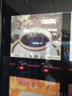
2013/05/14 15:33:15, "0:You":
売り切れ！！！
2013/05/14 15:33:32, "0:You":
誰か助けて！
2013/05/15 22:30:36, "0:You":
明日はゆきちゃんが来るって！
2013/05/15 23:01:13, "272:smaruy30":
w
2013/05/17 10:38:34, "274:":
やばい！寝坊した！
2013/05/17 10:38:58, "274:":
一時間遅れます( ；´Д｀)
2013/05/17 11:38:32, "270:岩永 勇祐":
ESキター( ´ ▽ ` )ﾉ
2013/05/17 11:49:33, "268:良明 Maezawa Crooz":
対応してますー( ◦⃝⃚⃙⃘⃙⃚⃙⃚⃙⃘⃑д◦⃝⃚⃙⃘⃙⃐ )∕
ギルドウォーあけていいー？
2013/05/17 11:52:41, "270:岩永 勇祐":
いいよー！
2013/05/17 11:53:49, "268:良明 Maezawa Crooz":
ほーい！
2013/05/17 14:51:15, "271:えんはる Crooz":
えんはる sent you a photo.
2013/05/17 14:52:18, "270:岩永 勇祐":
やめろw
2013/05/17 14:52:53, "0:You":
LOL
2013/05/17 14:53:14, "274:":
lol
2013/05/17 14:53:22, "0:You":
新しい友達を見つけた、ね！
2013/05/17 14:53:43, "261:yeyenman Aileen":
It looks like Iwanaga-san is enjoying it
2013/05/17 14:55:23, "271:えんはる Crooz":
toni, not friend!
he is iwanaga's boyfriend!
2013/05/17 14:55:44, "0:You":
ワウ！
2013/05/17 17:34:50, "271:えんはる Crooz":
えんはる sent you a photo.
2013/05/17 17:35:07, "271:えんはる Crooz":
待ってたぞ。晴香。
って久義が言ってる
2013/05/17 17:35:56, "0:You":
You sent a photo.
2013/05/17 17:36:02, "268:良明 Maezawa Crooz":
ただのキャップかぶったおっさん。
2013/05/17 17:36:23, "271:えんはる Crooz":
会社も楽しそうだねｗ
2013/05/17 19:54:40, "0:You":
へんどさん！
今テレビを見てるからカメラに手をふって
2013/05/17 20:17:03, "271:えんはる Crooz":
ちょーオレンジになって手を降ってるよ！
2013/05/17 20:34:20, "0:You":
イエーイ！！
2013/05/17 20:35:56, "271:えんはる Crooz":
ホームランばっこばこに入ってるでー！＼(^o^)／
2013/05/17 20:37:23, "0:You":
いいな！
2013/05/17 21:49:16, "269:":
みんな帰ってる！ww
2013/05/18 12:02:25, "272:smaruy30":
SR チケットのesきてますよー。トニ、工藤さん?
2013/05/18 12:13:43, "0:You":
それを見たけど、昨日の補填間違いって思ってた
2013/05/18 12:15:01, "272:smaruy30":
テンプレかな? みれる?
2013/05/18 12:15:23, "0:You":
見れます
2013/05/18 12:17:57, "274:":
おはようございます。
修正が必要ですね。
対応します。
2013/05/18 12:20:36, "272:smaruy30":
わかりましたー。
2013/05/18 12:53:51, "0:You":
細かいを言うていい？
2013/05/18 12:55:31, "0:You":
画像がchancex50って
説明がchancex25って
どちが合ってる？
2013/05/18 12:55:40, "0:You":
You sent a photo.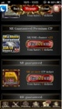
2013/05/18 12:56:59, "0:You":
Devだから、大丈夫
2013/05/18 12:57:17, "272:smaruy30":
おっ、どっちだろ。
2013/05/18 12:58:20, "272:smaruy30":
画像がただしいかな?
2013/05/18 13:00:01, "0:You":
うん！確かに、アイテム214はchancex50
2013/05/18 13:31:10, "270:岩永 勇祐":
おはようございます！
すいません、es来てました！
報酬間違ってましたか？
2013/05/18 13:36:20, "274:":
直したよ〜
2013/05/18 13:36:28, "274:":
今からシンクします。
2013/05/18 13:36:29, "270:岩永 勇祐":
あれ？間違ってない？
2013/05/18 13:37:18, "274:":
PGだけ入ってて、マスターとテンプレ入ってませんでした。
2013/05/18 13:37:28, "274:":
シンク後、マスター入れます。
2013/05/18 13:37:50, "268:良明 Maezawa Crooz":
おはようございますー！
対応ありがとうございますー！！
2013/05/18 13:38:19, "270:岩永 勇祐":
プレミアムSRのですか？
なるほど。。
ありがとうございます！
2013/05/18 13:38:24, "274:":
右下のデータボタンから、プレミアムチケット付与出きるようにしたので、確認出来るよ
2013/05/18 13:38:44, "274:":
という方は確認手伝っていただけますか？
2013/05/18 13:39:04, "272:smaruy30":
ok
2013/05/18 13:39:09, "274:":
一応、自分では確認しましたが、二回しかガチャひいてないです。わ
2013/05/18 13:39:21, "272:smaruy30":
pre?
2013/05/18 13:39:43, "274:":
preで！
2013/05/18 13:39:50, "268:良明 Maezawa Crooz":
確認しまーす！
2013/05/18 13:40:21, "274:":
SR当たったのに、月が赤くならなかった。。。
2013/05/18 13:41:29, "272:smaruy30":
おお、、
2013/05/18 13:42:22, "270:岩永 勇祐":
確認しまーす！
2013/05/18 13:44:30, "274:":
10連と1連ガチャでアニメーション違うのかな。。。
2013/05/18 13:47:30, "272:smaruy30":
sr プレミアムcp ですか? pre だと赤い月でますねー。
2013/05/18 13:47:55, "274:":
まじ？じゃあ、おけ？
2013/05/18 13:48:10, "268:良明 Maezawa Crooz":
赤い月でますね！
ただSSRでない。。
2013/05/18 13:48:29, "272:smaruy30":
でも、swfのカード画像が重い気がする。
2013/05/18 13:48:46, "274:":
フラッシュなんだ〜
2013/05/18 13:48:59, "268:良明 Maezawa Crooz":
同じ様なカードばっか出るんですけど、これ種類かなり少ないですか？
2013/05/18 13:49:53, "274:":
前澤さん
SSRの確率は、2%です。
LRが、0.1%です。
2013/05/18 13:50:25, "274:":
カードの種類は83枚です。
2013/05/18 13:50:38, "274:":
あ、79枚です。
2013/05/18 13:50:39, "268:良明 Maezawa Crooz":
なるほど！ありがとうございます！
もーちょい引いてみます！
2013/05/18 13:50:47, "268:良明 Maezawa Crooz":
おけですw
2013/05/18 13:53:55, "274:":
丸山さん
自分、月が赤くなりません。
チケット、違うのひいてる？
2013/05/18 13:54:27, "268:良明 Maezawa Crooz":
SSRでましたー！
同じ様なカードばっかでるの気になるんで後日カード増やします。
これレアリティ毎に確率同じですよね？
2013/05/18 13:55:02, "274:":
レアリティごとの確率です〜。
2013/05/18 13:55:36, "274:":
マスタのsql、チケットに貼っておきますね〜！
2013/05/18 13:56:33, "270:岩永 勇祐":
自分赤くなりますよ！
ただssr出にくいねー
2013/05/18 13:56:49, "272:smaruy30":
sr guaranteed premium cpですー
2013/05/18 13:56:54, "274:":
自分だけか。。。わかりました。。。
2013/05/18 13:56:55, "268:良明 Maezawa Crooz":
ありがとうございますー！！
引く遷移はボーナスCP➡一連ガチャですよね？
俺も赤くなりますー！
2013/05/18 13:57:27, "274:":
端末キャッシュ削除してみます。。。
2013/05/18 13:59:11, "272:smaruy30":
や、たしかに赤いときとでないときある。
2013/05/18 14:02:13, "274:":
なんでかな。。。
取り敢えず、本番にマスターいれますが、本番でテストするためにチケット欲しい方、ユーザーIDわかりますか？
2013/05/18 14:07:00, "274:":
本番、月赤いです。
2013/05/18 14:07:12, "274:":
あ、本番にマスター入れました。
2013/05/18 14:08:01, "268:良明 Maezawa Crooz":
56527167にチケット付与お願いしますー！
2013/05/18 14:08:03, "272:smaruy30":
59000496
2013/05/18 14:10:03, "274:":
100枚ずつでいいですか？
2013/05/18 14:10:10, "268:良明 Maezawa Crooz":
お願いしますー！
2013/05/18 14:10:37, "272:smaruy30":
おねがいしますー
2013/05/18 14:10:45, "274:":
入れました！
2013/05/18 14:12:33, "268:良明 Maezawa Crooz":
付与確認しました！
2013/05/18 14:13:09, "268:良明 Maezawa Crooz":
メンテナンスになった( ꒪⌓꒪)
2013/05/18 14:13:15, "274:":
！
2013/05/18 14:14:52, "274:":
ガチャグループディテールmのデータで、かーどmに無いのがあるのかかくにんして、あったらデリートフラグたてます！
2013/05/18 14:15:28, "268:良明 Maezawa Crooz":
了解ですー！
2013/05/18 14:20:07, "272:smaruy30":
12回ひいて赤い月でてメンテナンスなしです。
2013/05/18 14:20:18, "272:smaruy30":
13回目
2013/05/18 14:21:04, "272:smaruy30":
カード所持数マックスになってると月がグレーになりました。
2013/05/18 14:22:02, "270:岩永 勇祐":
今ちょっと出先で一時間くらいで帰れるんでしたら手伝います！すんません！
2013/05/18 14:22:17, "272:smaruy30":
今のところ全部st
2013/05/18 14:22:20, "272:smaruy30":
sr
2013/05/18 14:23:23, "272:smaruy30":
ssr lr の時にメンテかな?
2013/05/18 14:24:13, "274:":
saga knight Lancelot
2013/05/18 14:24:21, "274:":
ってときにメンテみたいです。
2013/05/18 14:24:47, "268:良明 Maezawa Crooz":
15回目で出た( ◦⃝⃚⃙⃘⃙⃚⃙⃚⃙⃘⃑д◦⃝⃚⃙⃘⃙⃐ )∕
2013/05/18 14:24:53, "268:良明 Maezawa Crooz":
良明 Maezawa Crooz sent you a photo.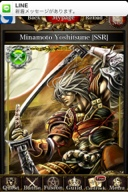
2013/05/18 14:25:16, "274:":
SSR.LRは普通に引けますね。
2013/05/18 14:25:45, "272:smaruy30":
わかりましたー。
2013/05/18 14:26:32, "268:良明 Maezawa Crooz":
多分カードエムに入ってないカードが読み込まれてるか、読み込んでるカードにデリートフラグたってるってだけですねー！
2013/05/18 14:33:23, "274:":
CM独り立ち支援ツールの36番に調査SQL貼っておきました。
card_mに二つdelete_flgが入ってました。
直します。
2013/05/18 14:36:32, "274:":
修正しました！
2013/05/18 14:37:35, "268:良明 Maezawa Crooz":
ありがとうございますー！！
じゃこれでOKですよね？
2013/05/18 14:37:49, "274:":
メンテにはならないと思います！
2013/05/18 14:38:00, "274:":
es返信しますよ〜
2013/05/18 14:38:11, "268:良明 Maezawa Crooz":
はーい！お願いしますー！
2013/05/18 14:38:40, "272:smaruy30":
おねがいしますー!
2013/05/18 14:42:07, "274:":
返信しました〜
2013/05/18 14:42:43, "268:良明 Maezawa Crooz":
じゃ、作業終了ですね！
ありがとうございました！！お疲れ様でしたー！
2013/05/18 14:42:50, "272:smaruy30":
おつかれさまですー。
2013/05/18 14:44:20, "274:":
お疲れさまでした〜！
体調、良いｗ
2013/05/18 15:03:04, "270:岩永 勇祐":
対応ありがとうございます！
おつかれ様でした！
2013/05/21 10:07:05, "272:smaruy30":
突然ですが本日代休をいただきました。朝のメールチェックはAileenさんにお願いしました。さっきAileenさんにお願いしたので少しスカイプが遅くなります。すみませんが宜しくお願いいたします!
2013/05/21 10:08:02, "0:You":
Enjoy your day off!
2013/05/21 10:08:29, "261:yeyenman Aileen":
Rest well, Maru-chan!
2013/05/21 10:08:51, "272:smaruy30":
Thank you! (^-^)
2013/05/21 10:45:25, "269:":
Enjoy yiur date!
2013/05/21 10:45:30, "269:":
your
2013/05/22 17:48:16, "272:smaruy30":
工藤さん USチーム座席移動してます。入り口はいってフロア左奥。
2013/05/23 00:49:17, "268:良明 Maezawa Crooz":
今日のステップアップのカード、ガチャ連動入れてない！やばい！
2013/05/23 00:51:06, "272:smaruy30":
おっssrのやつ?
2013/05/23 00:52:56, "268:良明 Maezawa Crooz":
そーそー！
パソコンもってる？？
2013/05/23 00:53:21, "272:smaruy30":
もってる。いまからやってみる。
2013/05/23 00:53:24, "268:良明 Maezawa Crooz":
Facebookで言われてるから緊急ESきちゃう！
2013/05/23 00:54:04, "272:smaruy30":
わかりました。すみません。
2013/05/23 00:55:42, "268:良明 Maezawa Crooz":
いえいえ、こちらこそ。
今出てるSRの二段階目と三段階目の特攻値でお願いします！
コンジャンクションとスレイヤー！
2013/05/23 00:56:07, "268:良明 Maezawa Crooz":
二段階目と三段階目の間の値^o^
2013/05/23 00:56:54, "272:smaruy30":
テーブル確認させて
2013/05/23 00:57:31, "272:smaruy30":
gacha conjunction bonus target m
2013/05/23 00:58:02, "272:smaruy30":
island beat down slayer m で
2013/05/23 00:58:13, "272:smaruy30":
okかな
2013/05/23 00:58:19, "268:良明 Maezawa Crooz":
gacha_conjunction_target_m
と
sub1の
island'
そーそれw
2013/05/23 00:59:10, "272:smaruy30":
りょうかいです。devで確認します
2013/05/23 00:59:49, "268:良明 Maezawa Crooz":
すいません！
僕も確認するんで、入れたら教えて下さい！
2013/05/23 01:00:06, "272:smaruy30":
わかりまぢたあ
2013/05/23 01:08:46, "272:smaruy30":
二段目と三段目の間の値っていうのがわからんです。
2013/05/23 01:16:47, "272:smaruy30":
値がわからんですがdevにいれるだけいれてみた。
2013/05/23 01:29:19, "272:smaruy30":
dev修正しました
2013/05/23 01:29:33, "272:smaruy30":
確認おねがいします
2013/05/23 01:31:01, "268:良明 Maezawa Crooz":
了解です！
2013/05/23 01:40:37, "268:良明 Maezawa Crooz":
おっけー！どっちも確認できました！
2013/05/23 01:40:45, "0:You":
丸ちゃん
明日は朝メールやるから
朝寝坊をして来て
2013/05/23 01:41:09, "272:smaruy30":
iremasu
2013/05/23 01:41:39, "268:良明 Maezawa Crooz":
優しいトニーw
本番まであげちゃってください！
2013/05/23 01:44:38, "272:smaruy30":
いれました!
2013/05/23 01:49:00, "268:良明 Maezawa Crooz":
ありがとうございますー！！
ゆっくり休んで下さいー！
また明日( ◦⃝⃚⃙⃘⃙⃚⃙⃚⃙⃘⃑д◦⃝⃚⃙⃘⃙⃐ )∕
2013/05/23 01:52:35, "272:smaruy30":
すみません。。夜分にご迷惑をおかけしました。個別対応はまた明日に。。
2013/05/23 01:54:06, "272:smaruy30":
トニーありがとう。明日は普通にいくけどメールはローテーションでよろしく。m(__)m
2013/05/23 18:58:51, "271:えんはる Crooz":
えんはる Crooz sent you a photo.
2013/05/23 18:58:51, "271:えんはる Crooz":
えんはる Crooz sent you a photo.
2013/05/23 18:58:52, "271:えんはる Crooz":
えんはる Crooz sent you a photo.
2013/05/23 18:58:52, "271:えんはる Crooz":
えんはる Crooz sent you a photo.
2013/05/23 18:58:52, "271:えんはる Crooz":
えんはる Crooz sent you a photo.
2013/05/23 18:58:52, "271:えんはる Crooz":
えんはる Crooz sent you a photo.
2013/05/23 21:06:16, "0:You":
You sent a photo.
2013/05/23 21:06:17, "0:You":
You sent a photo.
2013/05/23 21:06:18, "0:You":
You sent a photo.
2013/05/23 21:07:57, "268:良明 Maezawa Crooz":
良明 Maezawa Crooz sent you a photo.

2013/05/23 21:08:02, "268:良明 Maezawa Crooz":
良明 Maezawa Crooz sent you a photo.
2013/05/23 21:57:31, "269:":
JunJun Kwak sent you a photo.

2013/05/23 21:57:45, "269:":
JunJun Kwak sent you a photo.
2013/05/23 21:58:22, "271:えんはる Crooz":
おい！
2013/05/23 22:57:30, "272:smaruy30":
w
2013/05/24 10:28:40, "0:You":
久しぶりの緊急ＥSだね！
2013/05/24 10:28:43, "274:":
緊急ESだー
2013/05/24 10:29:42, "268:良明 Maezawa Crooz":
(´┐｀)
2013/05/24 10:30:24, "0:You":
岩永さんは平和だろう。
羨ましい！
2013/05/24 10:30:50, "268:良明 Maezawa Crooz":
トニー会社ー？
2013/05/24 10:30:59, "274:":
勘違いくさいですぞ。これ。
2013/05/24 10:31:04, "0:You":
今電車
2013/05/24 10:31:37, "274:":
ダークアルティマを倒したらダークアルティマが貰えるという記載はどこにもないです。
2013/05/24 10:32:36, "274:":
プラネットツアーズクエストでダークアルティマを拾うチャンス！！
とはかいてありますね。
2013/05/24 10:35:09, "0:You":
関係ないですが、aciecedをachievedに変えたい
2013/05/24 10:35:09, "0:You":
You sent a photo.
2013/05/24 10:35:47, "274:":
よろしく！
2013/05/24 11:06:59, "0:You":
You sent a photo.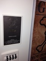
2013/05/24 11:06:59, "0:You":
You sent a photo.
2013/05/24 11:16:25, "270:岩永 勇祐":
2013/05/24 11:59:10, "274:":
2013/05/24 13:03:55, "0:You":
良明 Maezawa Crooz invited ヨキ(谷) to the group.
2013/05/24 13:04:03, "0:You":
ヨキ(谷) joined the group.
2013/05/24 15:41:14, "272:smaruy30":
トニどこいった?
2013/05/24 15:42:34, "0:You":
ここ！
2013/05/24 15:42:50, "0:You":
You sent a photo.
2013/05/24 16:14:16, "0:You":
You sent a photo.
2013/05/24 16:14:17, "0:You":
You sent a photo.
2013/05/24 16:26:54, "0:You":
You sent a photo.
2013/05/24 16:26:55, "0:You":
You sent a photo.
2013/05/24 16:26:56, "0:You":
You sent a photo.
2013/05/24 19:06:03, "0:You":
None
2013/05/24 22:08:15, "271:えんはる Crooz":
工藤さん、家でスラブのところやります？
2013/05/24 22:09:08, "271:えんはる Crooz":
私もログインしますねー！
2013/05/24 22:09:17, "274:":
いつでもあげられるようにテストと修正しときます〜
2013/05/24 22:09:59, "271:えんはる Crooz":
了解です！
私もデバッグします(^ ^)
2013/05/24 22:10:06, "274:":
フラッシュ動かなかったのも気になるし、自分の方で確認しときますよ( ´ ▽ ` )ﾉ
2013/05/24 22:13:48, "268:良明 Maezawa Crooz":
これからぼっちゃんの誕生日会で朝までいるんで、帰ったらやりますーすいません(´┐｀)
2013/05/24 22:14:24, "274:":
誕生日は年一だから、そっち優先で！！ｗ
2013/05/24 22:14:27, "272:smaruy30":
いってらっさーい。
2013/05/24 22:15:12, "272:smaruy30":
トニやっぱ俺も今日はかえるわー。データ気になる。
2013/05/24 22:15:38, "272:smaruy30":
jj また飲もう～(^-^)
2013/05/24 22:17:11, "269:":
2013/05/24 22:17:15, "0:You":
Good night!
2013/05/24 22:17:21, "0:You":
None
2013/05/24 22:22:51, "272:smaruy30":
アイリーンもまたね！
2013/05/24 22:42:30, "274:":
2013/05/24 22:44:29, "268:良明 Maezawa Crooz":
マルちゃん(;_;)
2013/05/24 22:56:41, "261:yeyenman Aileen":
awww... hugs maru-chan!
2013/05/25 00:39:58, "271:えんはる Crooz":
工藤さん、preの102423にノーマルとSRスラブ付与してくれませんか？
2013/05/25 01:04:14, "272:smaruy30":
緊急esの補填おわりましたー。
間違って付与した交換チケットの回収も。m(__)m
2013/05/25 01:05:08, "271:えんはる Crooz":
お疲れ様でした
2013/05/25 01:05:51, "268:良明 Maezawa Crooz":
ありがとー！お疲れ様でしたー！
2013/05/25 01:10:42, "272:smaruy30":
らーめーん
2013/05/25 01:24:32, "271:えんはる Crooz":
スラブってシンクしたんですかね？
2013/05/25 01:25:03, "271:えんはる Crooz":
今シンクリストみようと思ったら、見れなかったです(T_T)
踏み台サーバ導入のせいですかね？
2013/05/25 01:26:14, "272:smaruy30":
んー。どうかな?
2013/05/25 01:26:22, "271:えんはる Crooz":
まだっぽいー。
工藤さん寝ちゃいましたかね？
明日11時大丈夫かな…
2013/05/25 01:32:24, "274:":
お風呂入ってました〜
シンクしてもいいですか？
2013/05/25 01:33:02, "271:えんはる Crooz":
私、preでスラブなくて動作見れてないです！
ファイルはあげてあります(^ ^)
2013/05/25 01:34:39, "272:smaruy30":
なんか今久しぶりのユーザでtap to start押したらplease wait a momentで止まっちゃった。ホンバン。
2013/05/25 01:35:25, "274:":
マルちゃん
それ、ログボかなぁ？
2013/05/25 01:35:45, "274:":
イベントフラッシュなら、やたらと重たい可能性あります。
2013/05/25 01:36:20, "272:smaruy30":
らーめん食べたらすこしだけみてみる。
2013/05/25 01:42:00, "271:えんはる Crooz":
向かいのカップルうるさい(T_T)
2013/05/25 01:44:57, "272:smaruy30":
わりこんだれ。
2013/05/25 01:45:13, "274:":
ｗｗｗ
2013/05/25 01:46:56, "271:えんはる Crooz":
あ、近所のおばさん登場した
2013/05/25 01:50:53, "271:えんはる Crooz":
おばさんlose..,
2013/05/25 01:51:36, "272:smaruy30":
w
2013/05/25 01:52:43, "271:えんはる Crooz":
おまわり登場…
2013/05/25 01:55:55, "271:えんはる Crooz":
遠藤母野次馬
2013/05/25 01:56:33, "274:":
2013/05/25 02:01:21, "271:えんはる Crooz":
おまわりwin*\(^o^)/*
2013/05/25 02:02:02, "271:えんはる Crooz":
まるさんの久しぶりユーザーはAndroidですか？
2013/05/25 02:02:24, "272:smaruy30":
そーです。
2013/05/25 02:08:37, "272:smaruy30":
limitation actionけしてもう一回top to start おしたら動きました。
2013/05/25 02:09:32, "271:えんはる Crooz":
おー！おもかったんですかね！
2013/05/25 02:09:39, "272:smaruy30":
いったん問題なしかとおもいますー。
2013/05/25 02:09:59, "272:smaruy30":
そうかも!
2013/05/25 02:17:23, "274:":
一通りフラッシュ動いて受け取れるところまで、プレで確認できました！
ただ、以下のテンプレのレイアウトやらが少しおかしいです。
GuildbattlePrizeConf
GuildbattlePrizeEnd
取り敢えず、本番シンクしますね。
2013/05/25 02:19:03, "274:":
前澤さん
マテリアルのパズル用のフラッシュがなかったので、いれておきました。
画像名は15.swf、21.swfで、ディレクトリはmaterial/pazzle
です。
2013/05/25 02:26:14, "274:":
あ、マスター本番まで行ってない。。。かも
2013/05/25 02:27:27, "274:":
本番で既存の石板はめ込みが動くことを確認しました。
2013/05/25 02:29:05, "268:良明 Maezawa Crooz":
あーすいません！
マスターpreまでしか入ってないですー(´┐｀)
2013/05/25 02:31:39, "274:":
そのままでも動いてるので問題ないとは思いますが、前澤さんの方で明日入れられますか？
2013/05/25 10:24:37, "0:You":
ガチャのバトルにカードはランダムで出てきて
いつも3~4枚しか出ない
2013/05/25 10:24:46, "0:You":
You sent a photo.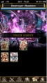
2013/05/25 10:25:29, "268:良明 Maezawa Crooz":
ばぐだ！
2013/05/25 10:25:31, "0:You":
誰かバトルをやってみてくれる？
2013/05/25 10:26:13, "0:You":
私だけの問題かも
2013/05/25 10:29:41, "268:良明 Maezawa Crooz":
良明 Maezawa Crooz sent you a photo.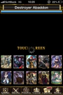
2013/05/25 10:30:21, "268:良明 Maezawa Crooz":
あなただけの問題でした！
おやすみアントニオバケルフェルナンデス！
2013/05/25 10:46:05, "0:You":
よかったな！
2013/05/25 11:05:51, "272:smaruy30":
緊急esの件、メール見てみます。多分大丈夫だと思うけど。
2013/05/25 11:06:25, "272:smaruy30":
トニのは自動売却だと思う。
2013/05/25 11:34:04, "272:smaruy30":
前澤さん
今回のチケットid 新しくするって仕様だったけど、今までたまってたチケットは使えなくなるってことで良かったでしたっけ?
(チケットid変わるから)
2013/05/25 11:34:49, "272:smaruy30":
普通のチケット交換所の話
2013/05/25 13:01:27, "272:smaruy30":
一応、チケット交換所のNoteには、
*Tickets are valid only during the event period.
(チケットはイベント期間中のみ有効です)
って書いてあるので、正しい動きといえば正しいですが。。
2013/05/25 13:45:41, "274:":
Fatal出てて、昨日の夜の部のギルドウォーにエントリー出来てなかったみたいです。
今、シンクしてエントリー出来るようにしました。
ESくるかな。。。
2013/05/25 13:54:09, "274:":
まるちゃん
交換チケットは交換所のIDもってるから、それが変わると前のは使えなくなりますよ。
2013/05/25 13:54:43, "274:":
オリンポスガチャ限定の交換所になってるのかな？
2013/05/25 13:58:02, "272:smaruy30":
そうオリンポスガチャ週末限定のチケット交換所になってる。
2013/05/25 14:01:11, "272:smaruy30":
でもitem id 同じにしとけば前のチケットが引き継げたと思う。
2013/05/25 14:02:04, "272:smaruy30":
もう少し確認しとけば良かったなー。
2013/05/25 14:04:40, "272:smaruy30":
チケットはイベント毎にリセットされる仕様です。って回答にするしかないかな。。
2013/05/25 14:04:53, "274:":
確かにそんな作りだったなー。
2013/05/25 14:06:47, "0:You":
どうしてもIDを変えなきゃいけないの？
2013/05/25 14:06:53, "274:":
その矢先にギルドウォーのESが。。。
修正済みと回答しまふ。
2013/05/25 14:07:21, "272:smaruy30":
前のチケット1000枚とかもってるユーザいるから、ちょっと申し訳ない。
2013/05/25 14:07:30, "274:":
交換所にだすカードを変える場合は変えなきゃだめだね。
2013/05/25 14:08:40, "274:":
週末ガチャ終わったら、交換所も元に戻るんだよね？
2013/05/25 14:08:41, "274:":
とに
交換所にだすカードを変える場合は変えなきゃだめだね。
2013/05/25 14:11:31, "272:smaruy30":
今回のイベントはもともと普通のチケット交換所はでてなかったの。なので週明けると交換所はでなくなる予定。
2013/05/25 14:12:41, "274:":
今のLR交換だなかた？
2013/05/25 14:13:46, "272:smaruy30":
そうLR交換所はそのまま残る。
2013/05/25 14:17:16, "272:smaruy30":
トニ 今からitem id は変えたくない。
2013/05/25 14:18:20, "274:":
前回の交換チケットって、その時でもう終わったんだよね？
仕様通り引き継いでないわけだから、「仕様です」じゃだめなのかな？
2013/05/25 14:19:19, "274:":
過去に開いた交換所のチケットを再度使えるように過去の交換所をいつの日か開いた方がいいのかな？？？
2013/05/25 14:25:00, "272:smaruy30":
noteにもイベント期間中のみ有効ですってかいてあるので、仕様通りでいいと思うけど、それだけだとわかりにくいし、チケットたくさんもってるユーザってお金もつかってるからなーと思って。。いろいろ書いちゃった。
2013/05/25 14:26:10, "272:smaruy30":
仕様通りで回答したいと思うけど、前澤さん寝とるよね。
2013/05/25 14:29:58, "274:":
多分。。。
2013/05/25 14:40:54, "270:岩永 勇祐":
良明は朝8時くらいまで飲んでたからまだ寝てると思うよ！
2013/05/25 14:41:26, "274:":
お、主賓！！元気ですね( ´ ▽ ` )ﾉ
2013/05/25 14:45:00, "272:smaruy30":
ガチャ担当独断で、仕様通りですって回答しちゃいます。問題あったらまた明日対応しますー。m(__)m
2013/05/25 14:49:43, "274:":
了解です！
いいと思います！
2013/05/25 15:13:51, "268:良明 Maezawa Crooz":
すいません、今おきました！
後半の記憶が完全に飛んでる。。。
まるちゃんには電話して仕様は伝えました！
2013/05/25 15:15:18, "274:":
うぃ( ´ ▽ ` )ﾉ
あと、すけばんのデータ？入れればかんりょです！
2013/05/25 15:15:24, "274:":
石板！
2013/05/25 15:18:26, "272:smaruy30":
es返信しました!!
2013/05/25 15:20:29, "274:":
完了！
2013/05/25 15:21:05, "268:良明 Maezawa Crooz":
ありがとうございますー！！
あ、石板のデータもいれていただけました？？
2013/05/25 15:25:13, "274:":
あ、データいれてないです。
画像しかいれてません。。。
2013/05/25 15:26:16, "268:良明 Maezawa Crooz":
fragment_card_m14.15.16
3225～3228までのcard_m
すいません、このデータも入れて頂きたいですm(__)m
2013/05/25 15:29:42, "274:":
今、PCの前にいないので、マルちゃん、お願い( ；´Д｀)
2013/05/25 15:29:46, "274:":
お願いm(__)m
2013/05/25 15:31:21, "272:smaruy30":
devのデータひっぱればいい?
2013/05/25 15:32:10, "268:良明 Maezawa Crooz":
大丈夫ですー！^o^
あ、あとcard_skill_mもだ！
2013/05/25 15:32:14, "274:":
preまでは入ってるはずです！
昨日preで全部チェックしたので、preのがいいです！
2013/05/25 15:32:34, "271:えんはる Crooz":
dev日本語があった気が！
2013/05/25 15:32:53, "274:":
preだ！！
2013/05/25 15:33:07, "274:":
preに間違いない！！ｗ
2013/05/25 15:34:18, "274:":
card_skill_evolution_mまで入ってるか不安だな。。。
2013/05/25 15:41:45, "272:smaruy30":
んー、ラインみながらだとwifiがきれちゃう。。
2013/05/25 15:42:10, "272:smaruy30":
全部でどのテーブル?
2013/05/25 15:44:42, "274:":
わかんない( ；´Д｀)
2013/05/25 15:46:51, "268:良明 Maezawa Crooz":
マテリアルだからエボリューションはいらないですー！
いま⭕ちゃんに電話で伝えました！
2013/05/25 15:47:30, "274:":
カイムは？
新しいカードでしよ？
2013/05/25 15:48:03, "274:":
あ、まだ交換されないから大丈夫か。
SR石板だから。
2013/05/25 15:50:33, "274:":
義澤さんが日本版からまとめて移植してたから大丈夫だね。
このカードのID古いし。
2013/05/25 15:53:09, "268:良明 Maezawa Crooz":
や、これ新しく追加したデータで義澤さん入れてなかったです(´┐｀)
2013/05/25 15:53:23, "268:良明 Maezawa Crooz":
月曜日お願いしておきます！
2013/05/25 15:53:48, "274:":
ですね〜。
そうしましょう。
2013/05/25 16:00:08, "272:smaruy30":
いれましたよー。
2013/05/25 16:00:16, "272:smaruy30":
ホンバン
2013/05/25 16:00:58, "268:良明 Maezawa Crooz":
あざすぅー！
2013/05/25 16:03:58, "274:":
あざっすー！
2013/05/25 16:05:01, "274:":
これはやばい。
マテリアルを受け取れない気がする
2013/05/25 16:08:25, "274:":
石板交換したら何処かに消えてる。。。
2013/05/25 16:10:33, "268:良明 Maezawa Crooz":
え、なんで。。
2013/05/25 16:11:01, "274:":
受け取り処理がおかしいのかも。。。ちょいまちを。
2013/05/25 16:14:02, "274:":
マルちゃんに電話したんだけど、出掛けるらしく
調査しないと分からない。。。
プログラムな気がする。
2013/05/25 16:14:38, "268:良明 Maezawa Crooz":
これ緊急ESきそうですね。。。
2013/05/25 16:14:52, "272:smaruy30":
ごめーん、もう遅刻なのです。
2013/05/25 16:15:13, "271:えんはる Crooz":
バドミントンしてる場合じゃないっすね(T_T)
2013/05/25 16:15:20, "274:":
その通り。
2013/05/25 16:18:32, "274:":
今、まるちゃんに電話して、fragment_card_mのマテリアルのデータにdelete_flg立ててもらって、交換出来ないようにしてもらいました。
2013/05/25 16:20:24, "272:smaruy30":
delete flg 1にしました。
2013/05/25 16:20:44, "274:":
ありがとうございます。
2013/05/25 16:20:53, "274:":
家に帰ったら調査します。
2013/05/25 16:21:50, "268:良明 Maezawa Crooz":
ありがとうございます。
宜しくお願いします！
2013/05/25 20:48:33, "274:":
修正しました。
マテリアルではなく、カードとしてはいってしまっていました。
こちら、取得した人は月曜日にしゅうせいします。
2013/05/25 20:49:10, "268:良明 Maezawa Crooz":
ありがとうございますー！！
2013/05/25 20:49:34, "274:":
マスターも元に戻しておきます〜
2013/05/25 20:52:02, "271:えんはる Crooz":
ちなみに今シンクの方法変わってますよね？(T_T)
2013/05/25 21:05:50, "274:":
トランスポート01サーバに接続して、そこからSSHでussociaiPreに入るようになりました。
それ以外の変更点はないですよ。
2013/05/25 21:06:28, "274:":
あ、もうシンク完了して、本番でマテリアル石板受け取れたの確認できました。
2013/05/25 21:06:49, "274:":
夕飯食べに出ますσ(^_^;)
2013/05/25 21:16:27, "271:えんはる Crooz":
いってらっしゃいませー！
シンク分からないので、月曜日にテンプレなおします(T_T)
2013/05/25 23:28:40, "274:":
ただいまです。
了解です〜！
wikiに載せます〜( ´ ▽ ` )ﾉ
2013/09/22 18:23:49, "269:":
優勝おめでとう！
2013/09/22 19:27:40, "271:えんはる Crooz":
ありがとう！
どーせなら勝って胴上げ見たい！
2013/09/24 13:40:39, "0:You":
セクシーさん！
デート中？！
2013/09/24 13:45:26, "268:良明 Maezawa Crooz":
ちげーわ！w
2013/09/24 13:45:55, "420:竜樹 Crooz":
お？？
2013/09/24 13:46:12, "0:You":
写真を取っちゃおう！
2013/09/24 13:46:47, "268:良明 Maezawa Crooz":
ゆりちゃんと笠原だーよ！
ゆりちゃん明日で最後！
2013/09/24 13:57:51, "0:You":
うん！先聞いた
困った、ね！
2013/09/24 13:59:28, "0:You":
りえちゃんは？残る？
2013/09/25 23:28:45, "261:yeyenman Aileen":
yeyenman Aileen sent you a photo.
2013/09/25 23:28:49, "261:yeyenman Aileen":
Hihihihi
2013/09/25 23:31:32, "0:You":
岩永 勇祐 changed the group's image.
2013/09/25 23:40:36, "0:You":
誰？
2013/09/26 00:15:17, "420:竜樹 Crooz":
可愛い子
2013/09/26 00:16:02, "261:yeyenman Aileen":
石橋は女好き！！
2013/09/26 00:16:41, "420:竜樹 Crooz":
かうぱー石橋ですぅ〜
2013/09/26 00:47:31, "420:竜樹 Crooz":
岩永さん、滑っちゃいました
2013/09/26 01:05:58, "271:えんはる Crooz":
石橋君どんまい！
2013/09/26 01:43:47, "420:竜樹 Crooz":
ありがとうございます
ステップでも頑張って下さい
2013/09/26 03:48:55, "270:岩永 勇祐":
岩永 勇祐 sent you a photo.
2013/09/26 03:50:33, "270:岩永 勇祐":
遠藤お疲れ！( ´ ▽ ` )ﾉ
2013/09/26 03:51:02, "0:You":
岩永 勇祐 changed the group's image.
2013/09/26 09:37:40, "401:ヨキ(谷)":
岩永さんグループ画像間違えちゃってますよ(>_<)
2013/09/26 09:43:27, "272:smaruy30":
Milk!!
2013/09/26 10:10:08, "261:yeyenman Aileen":
電車が遅れる。15〜30分ぐらい遅れる。ごめん！
2013/09/26 10:11:44, "401:ヨキ(谷)":
了解です！
2013/09/26 10:11:56, "451:":
黒岩さんがご家庭の事情で本日出社遅れますのでその間の作業引き取ります〜
2013/09/26 10:13:49, "401:ヨキ(谷)":
よろしくお願いします！
2013/09/26 19:10:36, "272:smaruy30":
Toni debug team can finish today?
2013/09/26 21:44:38, "0:You":
マジかよ？！
ありえない！こんな！
あんのビッチ！
2013/09/26 22:01:26, "419:ひでか":
Toni r u alright?
2013/09/26 22:03:31, "0:You":
They just made Sepi quit.
She has to leave by the end of October.
2013/09/26 22:07:39, "271:えんはる Crooz":
トニー荒れてるねぇ
2013/09/26 22:07:55, "268:良明 Maezawa Crooz":
ヨキ！出番だよ！
2013/09/26 22:09:55, "401:ヨキ(谷)":
トニーさん、ごーごー！
2013/09/26 22:10:13, "268:良明 Maezawa Crooz":
はい？
2013/09/26 22:10:35, "271:えんはる Crooz":
前ざわくんもうジムいない？ですか？
2013/09/26 22:10:46, "271:えんはる Crooz":
今日はジムやーめた＼(^o^)／
2013/09/26 22:11:10, "268:良明 Maezawa Crooz":
いま終わって帰ってるー！遠藤絶対やめるでしょw
2013/09/26 22:11:40, "271:えんはる Crooz":
ぜ！っ！た！い！か！よ！う！ん！だ！
2013/09/26 22:15:18, "0:You":
エンドちゃん！
新しい仕事場はどう？
2013/09/26 22:17:21, "271:えんはる Crooz":
まだ分からないけど、みんな優しい！
でも今はUSの方が安心する！
2013/09/26 22:20:36, "419:ひでか":
Whaaat u serious
2013/09/26 22:32:20, "0:You":
明日、なかちちゃんに聞いてみるよ。
セピちゃんって才能があるかないか。
2013/09/27 00:16:17, "272:smaruy30":
Cant no talent survive? Nah, Effort matters!
2013/09/27 00:17:00, "272:smaruy30":
But does not sound good in this context.
2013/09/27 00:18:01, "272:smaruy30":
In both way
2013/09/27 22:34:28, "0:You":
セピちゃんは辞めるって
2013/09/28 13:26:05, "0:You":
You sent a photo.
2013/09/28 13:26:14, "0:You":
もんでる
2013/09/28 13:56:36, "272:smaruy30":
やわらかー
2013/09/28 13:56:54, "268:良明 Maezawa Crooz":
なにこれ？
2013/09/29 21:04:43, "420:竜樹 Crooz":
Toni!!
26th dayからのログインボーナスがphp[text]になってる
2013/09/29 21:05:08, "0:You":
マジかよ？！
2013/09/29 21:05:28, "0:You":
見てみる
2013/09/29 21:05:46, "420:竜樹 Crooz":
そう。スクリーンショットとれなかった
お願いします！
2013/09/30 08:09:49, "271:えんはる Crooz":
丸ちゃんお誕生日おめでとうございますー*\(^o^)/*
2013/09/30 08:55:41, "272:smaruy30":
ありがとー。(^-^)
2013/09/30 08:56:22, "272:smaruy30":
smaruy30 sent you a photo.
2013/09/30 08:56:48, "272:smaruy30":
My new bike!!
2013/09/30 08:57:13, "272:smaruy30":
自分へのご褒美。w
2013/09/30 09:15:03, "268:良明 Maezawa Crooz":
おめでとまるー٩(●˙▿˙●)۶
2013/09/30 09:20:53, "271:えんはる Crooz":
クロスバイク？
いいなー＼(^o^)／
私もグリーンの自転車ほしい！
2013/09/30 09:50:38, "419:ひでか":
おめでとうございますー！
2013/09/30 10:12:25, "0:You":
おめでたし！おめでたし！
2013/09/30 10:33:58, "271:えんはる Crooz":
おめでたしｗｗ
2013/09/30 11:26:12, "269:":
ツーリング行こう！
2013/09/30 11:30:01, "0:You":
Touring?
2013/09/30 11:38:17, "272:smaruy30":
jj バイクで俺がちゃり? w
2013/09/30 12:07:05, "269:":
俺電車で！www
2013/09/30 12:34:18, "270:岩永 勇祐":
マルちゃんおめー>_<
2013/10/01 10:26:12, "271:えんはる Crooz":
えんはる Crooz sent you a photo.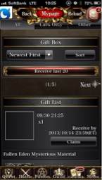
2013/10/01 10:26:15, "271:えんはる Crooz":
なんだこりゃ？
2013/10/01 10:26:37, "451:":
不思議なマテリアル
2013/10/01 10:26:39, "451:":
か！
2013/10/01 10:26:56, "271:えんはる Crooz":
前のイベントのみどりのマテリアルですかね！
2013/10/01 10:27:05, "451:":
スキマテ！
2013/10/01 10:27:46, "272:smaruy30":
さっき石橋君がデータいれました
2013/10/01 10:28:01, "272:smaruy30":
受け取れますか?
2013/10/01 11:17:34, "271:えんはる Crooz":
受け取れました！
対応ありがとうございます！
2013/10/01 11:19:06, "272:smaruy30":
ありがとうございます!
2013/10/01 11:23:47, "420:竜樹 Crooz":
遠藤さんすみません一個抜けてました
2013/10/01 23:26:43, "269:":
招待ごめんね！
2013/10/02 02:07:12, "272:smaruy30":
あっお返事まだでした。誕生日のメッセージありがとうございました。みんなまた明日!
2013/10/02 10:31:04, "0:You":
今日はerokawaっていう新しい単語を覚えた。
グーグったらいろいろ出て来ちゃった。
面白かったよ！
2013/10/02 15:36:43, "401:ヨキ(谷)":
トニーさんどこ居ますー？
2013/10/02 15:38:16, "0:You":
今トイレ
2013/10/02 15:38:17, "0:You":
すぐ戻る
2013/10/02 15:38:46, "401:ヨキ(谷)":
りょーかいです！
2013/10/02 15:39:23, "0:You":
まだUSにのこるよ
2013/10/02 17:01:23, "451:":
山本佳奈 sent you a photo.
2013/10/02 17:01:32, "451:":
撮れたー！
2013/10/02 21:36:26, "269:":
すげーきれい！
2013/10/02 21:59:49, "271:えんはる Crooz":
すごーいー！
ヒルズが恋しいー！
2013/10/03 20:57:23, "420:竜樹 Crooz":
竜樹 Crooz sent you a photo.
2013/10/03 20:57:40, "420:竜樹 Crooz":
ゲーマーが即ゲーム始めましたw
2013/10/03 21:54:30, "271:えんはる Crooz":
なんか2人ラブラブですよね！！
2013/10/03 22:18:39, "420:竜樹 Crooz":
楽しそうでした
2013/10/03 23:33:39, "272:smaruy30":
僕にも牛乳をください。
2013/10/04 13:41:58, "0:You":
You sent a photo.
2013/10/04 13:42:23, "0:You":
You sent a photo.
2013/10/04 15:05:17, "0:You":
You sent a photo.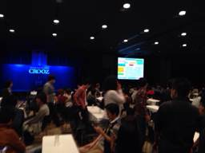
2013/10/04 15:24:36, "261:yeyenman Aileen":
yeyenman Aileen sent you a photo.
2013/10/05 23:32:43, "271:えんはる Crooz":
義澤さん、遅くなっちゃいましたがお誕生日おめでとうございます＼(^o^)／❤❤
2013/10/05 23:39:22, "272:smaruy30":
おっ、すみません。おめでとうございます!!!
2013/10/05 23:41:53, "419:ひでか":
わー！ありがとうございます😍😍
2013/10/05 23:43:21, "0:You":
そうじゃん！
Happy birthday!
2013/10/05 23:50:38, "419:ひでか":
Thank uuu
2013/10/05 23:52:58, "270:岩永 勇祐":
おめでとうございますー（≧∇≦）
2013/10/05 23:54:52, "401:ヨキ(谷)":
遅れましたが、誕生日おめでとうございます！
2013/10/05 23:56:37, "268:良明 Maezawa Crooz":
おめでとございまーす！！
2013/10/05 23:56:53, "419:ひでか":
ありがとうございまーす！
2013/10/06 16:45:54, "271:えんはる Crooz":
えんはる Crooz sent you a photo.
2013/10/06 16:45:56, "271:えんはる Crooz":
えんはる Crooz sent you a photo.
2013/10/06 16:45:56, "271:えんはる Crooz":
えんはる Crooz sent you a photo.

2013/10/06 16:45:57, "271:えんはる Crooz":
えんはる Crooz sent you a photo.
2013/10/06 20:11:33, "419:ひでか":
うぎゃーーー！！！！
2013/10/06 20:11:38, "419:ひでか":
かわいい！！！！
2013/10/06 20:12:30, "419:ひでか":
これは吉祥寺のお店ですか？？一番最初の奴撫でたことがある気が…
2013/10/07 00:00:32, "272:smaruy30":
やわらかそー
2013/10/07 02:00:28, "270:岩永 勇祐":
これか
http://himasoku.com/archives/51807057.html
2013/10/07 02:12:19, "268:良明 Maezawa Crooz":
ホー
2013/10/07 02:13:26, "451:":
三枚目の写真、なんか前澤さんに似てる…
2013/10/07 02:14:43, "268:良明 Maezawa Crooz":
めちゃかわいーやつじゃないですか٩(●˙▿˙●)۶
2013/10/07 09:41:27, "269:":
そんな、フクロウに失礼ですよ！
2013/10/07 09:43:09, "0:You":
朝からごめんね〜
ガチャのCardDescriptionにバーナーが出てない
2013/10/07 09:43:20, "0:You":
You sent a photo.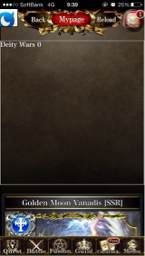
2013/10/07 09:48:44, "419:ひでか":
😱
2013/10/07 09:52:42, "401:ヨキ(谷)":
治しますー！
2013/10/07 17:04:12, "0:You":
You sent a photo.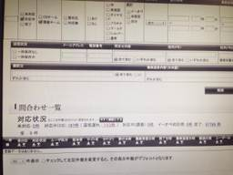
2013/10/07 17:04:20, "0:You":
0件
2013/10/07 18:09:59, "269:":
おめでとう！
2013/10/07 19:34:17, "0:You":
You sent a photo.
2013/10/07 19:35:40, "451:":
my friend
2013/10/07 19:36:14, "0:You":
None
2013/10/07 22:03:36, "271:えんはる Crooz":
こわい…
2013/10/07 22:04:57, "420:竜樹 Crooz":
すごい事になってますよこっちのオフィスはwサファリパークですよw
2013/10/08 09:50:02, "271:えんはる Crooz":
今週土曜日お時間ある人、夜モーパラ行きましょうー！*\(^o^)/*
新宿か渋谷どっちか*\(^o^)/*
今んところカクさんと前澤君いますー*\(^o^)/*
2013/10/08 10:32:31, "271:えんはる Crooz":
谷さんは確定です！
2013/10/08 10:33:56, "401:ヨキ(谷)":
2013/10/08 11:22:34, "268:良明 Maezawa Crooz":
来れなくてもお金だけお願いします。
2013/10/08 11:28:54, "401:ヨキ(谷)":
ヨキ(谷) sent you a photo.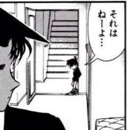
2013/10/10 00:02:39, "0:You":
山本佳奈 left the group.
2013/10/10 19:22:39, "261:yeyenman Aileen":
石橋さん、
gachaOpSmp.swf, libOpSmp.swf
をシンクしてもいい？
2013/10/10 19:31:48, "420:竜樹 Crooz":
問題はないと思う。ちょっとよく見てみます！
2013/10/10 19:35:20, "420:竜樹 Crooz":
Gachaのtempleteがシンクしてなければ大丈夫だと思います。
今チェックしましたが、明日のは表示されてなかったです！
2013/10/11 21:26:31, "420:竜樹 Crooz":
Shit!! Lokiのフラッシュ修正前のがあがっちゃってます。10時頃に帰るんでその時間帯シンク出来る方いらっしゃいますか？
2013/10/11 21:35:05, "261:yeyenman Aileen":
Waaah! I didn't bring my laptop
2013/10/11 21:35:36, "0:You":
What's the name of the file?
2013/10/11 21:36:40, "420:竜樹 Crooz":
Don't remember. I'll check when I got home. You have your laptop with you today?
2013/10/11 21:37:13, "0:You":
I have a Mac and a VPN connection.
2013/10/11 21:38:11, "420:竜樹 Crooz":
Ok. I'll talk to you later on Skype then.
2013/10/11 22:03:47, "420:竜樹 Crooz":
お騒がせしました。今修正版アップしてもらいました。
2013/10/11 22:04:28, "0:You":
You sent a photo.

2013/10/11 22:05:14, "420:竜樹 Crooz":
それ修正前の
It should be Loki.
2013/10/11 22:11:29, "420:竜樹 Crooz":
竜樹 Crooz sent you a photo.
2013/10/11 22:11:49, "420:竜樹 Crooz":
修正確認しました！！
2013/10/11 22:12:40, "0:You":
お疲れ様でした
2013/10/11 22:12:50, "401:ヨキ(谷)":
お疲れ様です！
2013/10/11 22:13:32, "420:竜樹 Crooz":
でも今2件メールで3回倒してもロキ出ないってメール来てるんですけど、確認出来る方お願いしてもいいですか？自分はちゃんと出ました。
2013/10/11 22:14:22, "0:You":
私もロキを出せない
2013/10/11 22:14:35, "0:You":
ズットやってるけど
2013/10/11 22:14:52, "401:ヨキ(谷)":
さっき出して倒しましたよ(￣▽￣)
2013/10/11 22:15:04, "420:竜樹 Crooz":
3匹倒したら次確定なはずですよね？
2013/10/11 22:15:18, "420:竜樹 Crooz":
何でだ！？
2013/10/11 22:15:50, "0:You":
そうかそうか？
履歴を消してみる
2013/10/11 22:16:08, "420:竜樹 Crooz":
やべぇ3件目来た
2013/10/11 22:23:04, "420:竜樹 Crooz":
とにちゃんどう？
2013/10/11 23:35:26, "0:You":
なんとか終わりました。
画像説明を変えることになった。
おやすみ！
2013/10/12 00:27:11, "272:smaruy30":
Oh guys ok? Sorry for absence.
2013/10/12 00:28:21, "420:竜樹 Crooz":
とりあえず画像を差し替えて回避しました。火曜日に原因を詳しく探ろうという感じになりました。
2013/10/12 00:29:37, "272:smaruy30":
わかりました！
対応ありがとうございます。
2013/10/12 00:30:11, "261:yeyenman Aileen":
Gomen! I don't have my laptop with me.
2013/10/12 00:30:44, "420:竜樹 Crooz":
It's ok. We can figure it out on Tuesday.
2013/10/12 00:31:21, "261:yeyenman Aileen":
Let's! お疲れ、guys!
2013/10/12 11:38:37, "271:えんはる Crooz":
今日モーパラ行く人、16時半に渋谷ハチ公前に集合ね＼(^o^)／
2013/10/15 18:34:35, "0:You":
降ってるよ
2013/10/15 18:44:30, "419:ひでか":
丸ちゃんさん！
2013/10/15 18:44:40, "419:ひでか":
ひでか sent you a photo.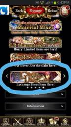
2013/10/15 18:44:53, "419:ひでか":
グラビティラインのバナー、これあってますか？？
2013/10/15 18:45:07, "419:ひでか":
今ルナーコロッセオでしたよね？？
2013/10/15 18:51:07, "419:ひでか":
グラビティが終わってもしばらくは開いてるので問題ないとのことでしたー。でも「second half start」と書かれてしまっているので、どちらにしてもバナーを明日ちょっと変えてもらいますー
2013/10/15 19:14:40, "0:You":
smaruy30 invited 山本佳奈 to the group.
2013/10/15 19:14:50, "0:You":
山本佳奈 joined the group.
2013/10/15 20:10:14, "272:smaruy30":
いつもイベント終了後バナーかえてたっけ?
2013/10/15 20:10:41, "464:山本佳奈":
本家は終了後バナーないですねー
2013/10/15 20:10:58, "464:山本佳奈":
US独自で作ってるならわからないです
2013/10/15 20:11:28, "420:竜樹 Crooz":
前半戦の使ってた気がしますね。
2013/10/15 20:12:11, "464:山本佳奈":
なるほど。であれば、家に着いたら戻してシンクしますよ
2013/10/15 20:12:59, "464:山本佳奈":
あ。みなさまお久しぶりです。LINEのアカウントが死んだので別アカウントで蘇りました
2013/10/15 20:13:35, "272:smaruy30":
わかりましたー。そんな大きな問題じゃないと思うので明日でもokじゃないかな。
2013/10/15 20:13:54, "464:山本佳奈":
了解です！
2013/10/15 21:28:46, "0:You":
緊急es来た！
・カテゴリ：イベント、Pt、報酬、ランキングに関する不具合
18時57分頃から「SSR保証10CP でSSRが受け取れない」という内容のお問い合わせを約７件受信しております。
下記に7件中2件のお問い合わせ内容を記載いたします。（内容については7件ともにほぼ同内容となっておりました。）
2013/10/15 21:29:28, "272:smaruy30":
まじか!
2013/10/15 21:30:06, "272:smaruy30":
Pcもってきてるから調べてみる
2013/10/15 21:31:36, "420:竜樹 Crooz":
Ssr確定は今の時点ではやってないし画像とかもチェックしましたがないはじですが。
2013/10/15 21:31:44, "401:ヨキ(谷)":
pc置いてきちゃいました…(´Д` )
すみません、お願いしますー！
2013/10/15 21:33:14, "0:You":
翻訳が悪いかも
I have drawn 4 set of 10lcp but I did not received the new ssr card as promised.Could you look into it?
2013/10/15 21:33:18, "261:yeyenman Aileen":
Waaah! PC持ってない
2013/10/15 21:33:54, "0:You":
私も調べるから大丈夫
2013/10/15 21:34:21, "420:竜樹 Crooz":
何回引いてもssr確定はまだやらないからあってるはず
ごめん。宜しく
2013/10/15 21:34:45, "401:ヨキ(谷)":
ヨキ(谷) sent you a photo.
2013/10/15 21:34:57, "401:ヨキ(谷)":
インラインFlashのこれかな？
2013/10/15 21:35:20, "0:You":
そうそう！
2013/10/15 21:35:38, "420:竜樹 Crooz":
あ！！！かもです！3回目で確定は確か3日後にやるはず！
2013/10/15 21:36:33, "420:竜樹 Crooz":
でももう載せちゃってるんで実装しますか？
2013/10/15 21:37:11, "272:smaruy30":
おいー!
2013/10/15 21:38:46, "420:竜樹 Crooz":
申し訳ないです。
2013/10/15 21:45:31, "272:smaruy30":
実装ってどんなかんじ? データだけでokだっけ?
2013/10/15 21:47:14, "272:smaruy30":
とりあえず、インラインフラッシュさしかえて、3回引いたことがある人全員に補填しちゃう?
2013/10/15 21:47:21, "420:竜樹 Crooz":
実装はcard_replace_mの時間を変えればいけるはずですが。
谷さんどうしますか？
2013/10/15 21:48:26, "420:竜樹 Crooz":
の方が良さそうですが。
2013/10/15 21:49:47, "401:ヨキ(谷)":
補填してヘッダー画像とかあればそれに差し替えですかね！
2013/10/15 21:51:19, "420:竜樹 Crooz":
インラインフラッシュを消す作業をお願いしてもいいですか？
補填は明日自分がやります！
2013/10/15 21:52:27, "272:smaruy30":
Ok, 何てファイルかな? わかる?
2013/10/15 21:53:14, "420:竜樹 Crooz":
lbOpSmpかもです。
2013/10/15 21:53:15, "261:yeyenman Aileen":
gacha/lottery/660/GachaTop.tpl
2013/10/15 21:53:33, "261:yeyenman Aileen":
You can comment it out here
2013/10/15 21:54:32, "0:You":
ここのヘッダーにすればいい？
2013/10/15 21:54:36, "0:You":
You sent a photo.
2013/10/15 21:55:19, "420:竜樹 Crooz":
それで大丈夫！
2013/10/15 22:08:41, "0:You":
シンクを完了です
2013/10/15 22:09:01, "272:smaruy30":
初回5lcp ってインラインに差し替えればいいかな
2013/10/15 22:09:21, "272:smaruy30":
あっもういっかな?
2013/10/15 22:09:34, "420:竜樹 Crooz":
丸山さんお願いします差し替え。
2013/10/15 22:09:47, "272:smaruy30":
ラインするとwifi きれる
2013/10/15 22:10:11, "272:smaruy30":
おk。差し替えます
2013/10/15 22:10:16, "0:You":
フラッシュのコメントアウトを忘れてた。
再度シンクです
シンク完了
2013/10/15 22:10:28, "420:竜樹 Crooz":
あ、インラインごと切っちゃってください。あ、ありがと！
2013/10/15 22:10:52, "0:You":
You sent a photo.
2013/10/15 22:11:47, "272:smaruy30":
ん? さしかえなくていい?
2013/10/15 22:12:17, "272:smaruy30":
131025Op
2013/10/15 22:12:26, "0:You":
も出来たよ！
緊急esの返事をしましょうか？
2013/10/15 22:13:08, "420:竜樹 Crooz":
インラインに初回半額も含まれちゃってるので。
インラインで半額だけのありますか？
2013/10/15 22:15:23, "272:smaruy30":
131015op、131025opにフラッシュひとつずつ。
2013/10/15 22:15:30, "272:smaruy30":
あり
2013/10/15 22:16:06, "420:竜樹 Crooz":
Preに一回入れれますか？
2013/10/15 22:16:57, "272:smaruy30":
Ok
2013/10/15 22:17:44, "272:smaruy30":
いまdevでみれるよ
2013/10/15 22:20:06, "420:竜樹 Crooz":
なんか見ましたが初めに出てくる女の子知らない子なんで、とりあえず今のヘッダーだけでいきます！
対応ありがとうございます！
2013/10/15 22:20:32, "272:smaruy30":
りょうかいです
2013/10/15 22:21:06, "0:You":
じゃ！
谷さん、補填は何がいい？
2013/10/15 22:21:18, "272:smaruy30":
とに 返信おれするから大丈夫。thank you.
2013/10/15 22:21:44, "0:You":
Thnx!
2013/10/15 22:23:24, "401:ヨキ(谷)":
もらえなかったSSRのカードを補填してください！
2013/10/15 22:30:08, "272:smaruy30":
これ次に3回目にssrのインラインフラッシュがでたら、補填した人は3回目ひいたときまたもらえる? もらえない? どっちかな?
2013/10/15 22:37:12, "420:竜樹 Crooz":
補填した人も実装した後は貰えるはずです。
2013/10/15 22:38:25, "272:smaruy30":
りょうかいです.
2013/10/15 22:44:16, "272:smaruy30":
Ssr war princess Discordia.
2013/10/15 22:46:24, "272:smaruy30":
でもインラインにでてくるキャラと違うな。
2013/10/15 22:46:39, "272:smaruy30":
まぁ順次補填でかえします
2013/10/15 22:46:50, "420:竜樹 Crooz":
お願いします。
2013/10/16 11:42:39, "0:You":
電車が混んでます、ね！
2013/10/16 12:12:25, "419:ひでか":
大江戸線はガラガラだったよ！
2013/10/16 19:26:55, "0:You":
toni invited とっとこちゃむ太郎 Habuka to the group.
2013/10/17 15:17:40, "269:":
Toni can you call me?
2013/10/18 07:51:17, "271:えんはる Crooz":
昨日テレビ朝日が盛り上がってたの、東京国際映画祭らしいですよ＼(^o^)／
2013/10/22 17:16:14, "0:You":
エンドさん、ありがとう！
2013/10/22 17:16:22, "0:You":
You sent a photo.
2013/10/22 21:58:26, "271:えんはる Crooz":
笑った！ｗｗ
丸さんお腹空いてたんだね。
2013/10/23 09:47:00, "272:smaruy30":
うまし！
2013/10/23 09:53:07, "269:":
あたり出なかったですか？
2013/10/24 23:30:04, "271:えんはる Crooz":
明日USランチの日ですか？(^ ^)
2013/10/25 10:04:54, "272:smaruy30":
おはようございます。
JJ ＞ あたりあるって知らなかったー。
遠藤さん＞今日ランチの日かも!
2013/10/25 10:07:58, "0:You":
みんなコスプレでランチなのか？！
2013/10/25 10:19:08, "272:smaruy30":
トニーの黄色いやつ届いた？
2013/10/25 10:19:42, "0:You":
届いてないのよ~
泣くよ
2013/10/25 10:21:37, "0:You":
チャムちゃんのお腹が治ったの？
誰か聞いた？
2013/10/25 10:23:15, "271:えんはる Crooz":
まるちゃん、ランチ行けたらベイスターズのカレンダー持って来てほしいです（≧∇≦）
2013/10/25 10:23:20, "401:ヨキ(谷)":
なんかウイルス性のやつだったみたいで、今日はおやすみす(>_<)
2013/10/25 10:23:41, "272:smaruy30":
ほいー
2013/10/25 10:24:20, "0:You":
困った、困った！
2013/10/25 10:25:00, "0:You":
心配
2013/10/25 13:13:50, "272:smaruy30":
smaruy30 sent you a photo.
2013/10/28 21:07:54, "0:You":
４月に東京ドームを借りて鬼ゴッコをしますけど。
また日にちと時間が決まったらお知らせします。
みんな来てね！
2013/10/28 21:25:15, "271:えんはる Crooz":
うわ！楽しそう！笑
トレーニング頑張ろーっと*\(^o^)/*
2013/10/28 22:20:51, "272:smaruy30":
Yay!
2013/10/30 22:01:43, "272:smaruy30":
今01系のスレーブ再作成がおわり、
2013/10/30 22:01:59, "272:smaruy30":
スレーブ遅延解消待ちです。
2013/10/30 22:02:00, "272:smaruy30":
インフラT対応中です
2013/10/30 22:02:33, "272:smaruy30":
遅延解消後メンテ解除予定です
2013/10/30 22:03:39, "401:ヨキ(谷)":
了解です！
対応ありがとうございます！
2013/10/30 23:41:55, "272:smaruy30":
メンテ解除しました
2013/10/30 23:42:08, "272:smaruy30":
あそべてますか?
2013/10/30 23:43:10, "271:えんはる Crooz":
みてみます！
2013/10/30 23:45:08, "401:ヨキ(谷)":
イベント遊べてます！
贈り物、カードも違和感ないですー
2013/10/30 23:47:37, "261:yeyenman Aileen":
大丈夫そうですね。
お疲れ様です！
2013/10/30 23:48:07, "272:smaruy30":
mypage ボタン グレーあうとしない?
2013/10/30 23:48:35, "272:smaruy30":
おれだけかな?
2013/10/30 23:48:49, "272:smaruy30":
header
2013/10/30 23:49:25, "271:えんはる Crooz":
わたしも
2013/10/30 23:49:39, "271:えんはる Crooz":
アプリ終了しても治らないです(T_T)
2013/10/30 23:50:11, "271:えんはる Crooz":
カードとかレベルとかは大丈夫でした！
2013/10/30 23:59:46, "0:You":
マルちゃん、今会社？
2013/10/31 00:00:32, "271:えんはる Crooz":
ヘッダー、生き返った！
2013/10/31 00:11:18, "272:smaruy30":
いまおうち
2013/10/31 00:11:46, "272:smaruy30":
おれもヘッダー生き返った
2013/10/31 00:12:06, "0:You":
何か出来る事はあれば、教えて
2013/10/31 00:13:20, "272:smaruy30":
Thx Toni. ホビットも遅延もメールも落ち着いたので作業終了になりました。
2013/10/31 00:15:25, "272:smaruy30":
1.5-2.0h ぐらい遊べなかった時間で、1.0hぐらい重かったかな。
2013/10/31 00:15:59, "0:You":
ごめんね！
明日はランチをおごるよ
お疲れ！
2013/10/31 00:17:00, "272:smaruy30":
補填対応はまたあした考えようってことでした。by あきとさん
2013/10/31 00:18:33, "272:smaruy30":
じゃあまた明日。今日歓送迎会いけなくて残念でしたが。。
2013/10/31 00:18:58, "272:smaruy30":
えんどさんチェックありがとー
2013/10/31 00:19:16, "271:えんはる Crooz":
丸ちゃんお疲れ様でした！
2013/10/31 00:20:17, "271:えんはる Crooz":
うまいビール飲んで、巨人対楽天の試合結果見て、早く寝てくださいね！
2013/10/31 10:42:27, "272:smaruy30":
おはよーございます。今日は12時頃つくようにいきます。
2013/10/31 10:42:50, "401:ヨキ(谷)":
了解です！
2013/11/01 20:34:50, "420:竜樹 Crooz":
さっき社長に挨拶したんでもう帰るのやめときますw
自分は飲まない感じでw
適当に時間潰しときます！！
2013/11/01 20:35:22, "401:ヨキ(谷)":
2013/11/01 21:03:29, "271:えんはる Crooz":
？
2013/11/01 21:04:00, "420:竜樹 Crooz":
意味不明ですよねw
2013/11/01 21:04:40, "271:えんはる Crooz":
はい！笑
すみません今むかってます！
2013/11/01 21:07:56, "271:えんはる Crooz":
みんないないじゃん！
2013/11/01 21:08:06, "271:えんはる Crooz":
たにさんはやくー！
2013/11/01 23:52:02, "271:えんはる Crooz":
えんはる Crooz sent you a photo.
2013/11/01 23:52:03, "271:えんはる Crooz":
えんはる Crooz sent you a photo.
2013/11/01 23:52:04, "271:えんはる Crooz":
えんはる Crooz sent you a photo.
2013/11/01 23:53:15, "271:えんはる Crooz":
前澤くん、笠原くんに送ってください！
2013/11/01 23:53:26, "271:えんはる Crooz":
アイリーンは小川さんに送ってください！❤
2013/11/02 00:00:19, "268:良明 Maezawa Crooz":
うい！
2013/11/02 00:36:20, "420:竜樹 Crooz":
皆さん本当にありがとうございました！
ほんと短い間しかいなかったにも関わらず、こんなによくして下さってこのチームにいて良かったです！
まだ全然実感がわかないのでまた来週会える気持ちです！
多分ドイツに行ったらめっちゃ寂しくなると思いますが、色紙を見て頑張ります！
本当にありがとうございました！
全体会議で会いましょう！
2013/11/02 00:46:22, "271:えんはる Crooz":
USを離れるのは本当に寂しいですよ！
石橋君は人当たりも良くてシッカリしてるから大丈夫です＼(^o^)／
取り敢えず、次の全体会議までいってらっしゃーーい
2013/11/02 01:05:28, "401:ヨキ(谷)":
イシバシさん、お疲れ様した！
ドイツは寒いよ！
スーツきてバリバリ頑張っす！
気をつけて行ってらっさーい(￣▽￣)
2013/11/02 05:41:46, "464:山本佳奈":
イシバシさん！
昨夜は行けなくてごめんなさい！カナダから応援してます！ドイツ頑張ってください！
2013/11/07 10:49:36, "0:You":
30分遅れます
2013/11/08 09:45:21, "0:You":
マルちゃん、
今会社？
イベントの緊急ES
フラッシュのあげ漏れかも
2013/11/08 10:08:17, "272:smaruy30":
背中いたくて今家出たとこです。
2013/11/08 10:13:05, "0:You":
このレイドボズが出るとゲームフリーズ
Rich New Soldier Ricky Dawson
2013/11/09 12:46:27, "271:えんはる Crooz":
ESきてますよー(@_@)
2013/11/09 12:46:56, "0:You":
-----------------
Deity Wars
------------------------------------------------------------
内容：
------------------------------------------------------------
■お問い合わせ件数増加について
・タイトル：Deity Wars
・報告日時：2013/11/09 11:20
・カテゴリ：イベント、Pt、報酬、ランキングに関する不具合
received time 22時33分頃から「ゲームが強制終了」という内容のお問い合わせを
約12件受信しております。
下記に12件中2件のお問い合わせ内容を記載いたします。（内容については12件ともに
ほぼ同内容となっておりました。）
===========================
2013/11/09 12:47:50, "272:smaruy30":
今接続設定中。。
2013/11/09 12:48:31, "272:smaruy30":
Magic connect
2013/11/09 12:49:10, "271:えんはる Crooz":
あ！マジックコネクトもらったんですね！
がんばれー！
2013/11/09 12:49:44, "272:smaruy30":
よくわからん。。会社いこうな
2013/11/09 12:50:12, "272:smaruy30":
Toni なんかログでてる?
2013/11/09 12:51:13, "0:You":
今ユーザーサポートのメールを見てた。
今すぐエラーログを見ます
2013/11/09 13:00:12, "0:You":
何もない！
2013/11/09 13:01:33, "272:smaruy30":
つながらないから、会社いく。
2013/11/09 13:02:10, "0:You":
ごめん！
私が見つけられない
2013/11/09 13:03:33, "272:smaruy30":
メールは一時的なものかな。まだ起きてるかな?
2013/11/09 13:04:25, "0:You":
前回の緊急ESと同じって
2013/11/09 13:07:00, "0:You":
Riky Dawsonっていうレイドボズです
2013/11/09 13:08:59, "272:smaruy30":
そこのフラッシュはカットしたけどな。。
2013/11/09 13:09:25, "0:You":
そうか？！
2013/11/09 13:10:47, "0:You":
Riky Dawsonが来ると
ゲームがフリーズするかloading時間は20sもするかだって
2013/11/09 13:11:59, "272:smaruy30":
ほとんどその問い合わせ?
2013/11/09 13:12:54, "272:smaruy30":
ちょっと今から移動するので、再現するかも見てほしい。
2013/11/09 13:13:20, "0:You":
None
2013/11/09 13:43:47, "272:smaruy30":
再現した?
2013/11/09 13:51:20, "401:ヨキ(谷)":
すみません、今起きました(´Д` )
再現するかテストしてみますー！
2013/11/09 13:59:41, "401:ヨキ(谷)":
Riky Dawson出現Flashカットして、遷移出来ますね
2013/11/09 14:05:26, "0:You":
テストOK
こっちも動いてる
2013/11/09 14:47:26, "272:smaruy30":
再現しない
App version 2800, Android 4.1,
Samsung系の端末で起きてるみたいだけど。
2013/11/09 14:48:21, "272:smaruy30":
同じデバッグ端末でテストしたけど、もう少しチェックしてみます
2013/11/09 14:48:57, "0:You":
フラッシャーと相談をした方がいいかも
2013/11/09 14:53:30, "272:smaruy30":
週末だからいないよー。
2013/11/09 14:54:33, "272:smaruy30":
Swf キャッシュはずしたの戻してみる? かわんないかな?
2013/11/09 14:54:53, "0:You":
なんかね〜
動くフラッシュと動かないフラッシュがあるって不思議だね
2013/11/09 14:56:25, "0:You":
うん！
それどけで治らなさそうだけど。やってみる価値がある。
2013/11/09 14:57:08, "272:smaruy30":
ok, やってみる
2013/11/09 15:15:31, "272:smaruy30":
Force close はフラッシュだけじゃないみたい。
2013/11/09 15:15:36, "272:smaruy30":
nstruction: Make sure to fill in each entry where applicable[User Name]:robytere[Your Time Zone]:mtn[Date/Time of Incidence]:every day[Which Page Incidence Occurred]:all[OS Version]:Android 4.1[App Version]:2800[Device Model]:samsung s3[Detail of how it happened (Please be precise! Indicate where/what/how.)]:Every minute or 2 the program stops running and I have to initiate again. It happens in all locations of game, cp, fusion, battling, eclipse party, advancing in areas, throughout the whole game. I can't play for more than 5 minutes without having to start all over. It is worse in this fullmoon party than normal, which it usually closes about once every 20-30 minutes. -----------------------------[User ID]:NzE0MTg3OTA=-----------------------------Sent via the Samsung Galaxy S(tm) III, an AT&T 4G LTE smartphone
2013/11/09 15:22:54, "0:You":
いろいろなコーナーのフラッシュだと意識をすればいいかな？
2013/11/09 15:23:34, "0:You":
アプリをDowngradeをしてもらえるのかな？
2013/11/09 15:26:14, "0:You":
Fusionとcpとbattleはリアルサムライが入ってない
2013/11/09 15:28:32, "272:smaruy30":
アプリってダウングレードできるんだっけ?
2013/11/09 15:29:09, "0:You":
分からへん！
2013/11/09 15:29:32, "0:You":
ありそうだけど
2013/11/09 15:33:57, "0:You":
困ったね
アプリかもしれないし
リアルサムライかもしれないし
サーバーのresponseが遅すぎかもしれない
2013/11/09 15:37:01, "261:yeyenman Aileen":
Sorry just got out of my class.
2013/11/09 15:37:20, "261:yeyenman Aileen":
Is it working in lower versions of the app?
2013/11/09 15:37:56, "261:yeyenman Aileen":
If it were the app why are we getting these problems only now and not right after the app release?
2013/11/09 15:38:31, "261:yeyenman Aileen":
Do you think that the file size of the flash has something to do with this?
2013/11/09 15:39:01, "261:yeyenman Aileen":
We have encountered if before that if the flash file size is big it crashes.
2013/11/09 15:50:15, "272:smaruy30":
It looks like the problem has happend on specific devices. It might not happen in the previous app version but I am not sure.
Flash size and no caching might cause this.
2013/11/09 15:51:36, "272:smaruy30":
I could not reproduce.the incident so lets just caching reactivated then lets see the user responses.
2013/11/09 15:52:09, "272:smaruy30":
It may work.
2013/11/09 15:52:22, "261:yeyenman Aileen":
Ok, let's wait for the result.
2013/11/09 15:53:00, "272:smaruy30":
But can I reply like try downgrading?
2013/11/09 15:53:02, "261:yeyenman Aileen":
Hopefully it works.
2013/11/09 15:53:50, "272:smaruy30":
Only latest version available in the market.
2013/11/09 15:53:59, "272:smaruy30":
?
2013/11/09 15:54:08, "261:yeyenman Aileen":
They can't downgrade it because Mobage controls the app release.
2013/11/09 15:54:41, "261:yeyenman Aileen":
The only way they can downgrade it is if they have a copy of the old apk.
2013/11/09 15:55:21, "272:smaruy30":
I see. So thats not an option.
2013/11/09 15:56:19, "261:yeyenman Aileen":
Yeah, the only way they can have the old apk is if they are tech savvy enough to extract it from their phones before reinstallation.
2013/11/09 15:56:45, "0:You":
May be there's an easier way. Google play should have the feature of reverting an app from the market to its previous version
2013/11/09 15:57:08, "0:You":
Just guessing...
2013/11/09 15:58:29, "261:yeyenman Aileen":
Is there? Even if there is, Mobage controls the app release and not us.
2013/11/09 15:58:48, "261:yeyenman Aileen":
Anyway, will see what we can do on that area.
2013/11/09 15:59:25, "0:You":
Mobage is just a phone call away.
Don't see any problem with that
2013/11/09 16:00:10, "261:yeyenman Aileen":
I'm not into downgrading the app though unless we are really sure that it is the app.
2013/11/09 16:02:47, "261:yeyenman Aileen":
For now, let's just wait if Maru-chan's caching reactivation fixes it.
2013/11/09 16:04:26, "272:smaruy30":
Yeah I am testing it in pre now.
2013/11/09 16:04:53, "261:yeyenman Aileen":
Thanks, Maru-chan.
2013/11/09 16:48:53, "272:smaruy30":
本番あげました。動作確認おねがいします
2013/11/09 18:17:38, "401:ヨキ(谷)":
一通り本番プレイして、問題なさそうですー！
連絡遅くなりました…
2013/11/09 18:20:33, "272:smaruy30":
ありがとうございます。もう少し様子見てes 再現せずで返事します。
2013/11/09 18:20:53, "271:えんはる Crooz":
みんなお疲れ様(^ ^)！
2013/11/09 18:21:14, "401:ヨキ(谷)":
了解です！
お疲れ様です！
2013/11/09 18:24:20, "272:smaruy30":
もし明日またくるようなら。。。どうしたものかな。。
2013/11/09 18:25:50, "268:良明 Maezawa Crooz":
頑張れまるー☻
2013/11/09 18:29:56, "272:smaruy30":
(>_<)
2013/11/09 18:32:42, "272:smaruy30":
12件問い合わせ来て再現しないで返信するとまたes来そうだな。様子みるために、修正対応中ですで返事します。
2013/11/09 18:48:02, "272:smaruy30":
かえりまーす。お疲れさまでした。一応4pmを最後に問い合わせ来てません。
2013/11/09 18:49:38, "261:yeyenman Aileen":
お疲れ様でした！
2013/11/09 18:49:40, "401:ヨキ(谷)":
ありがとうございますー！
お疲れ様でした！
2013/11/09 19:07:22, "271:えんはる Crooz":
お疲れ様でした！
2013/11/10 17:57:07, "272:smaruy30":
谷さん デイリーりワードが配られてない。
2013/11/10 17:57:40, "272:smaruy30":
日付がまちがてるようです。
2013/11/10 18:16:45, "401:ヨキ(谷)":
すみません、PC持って帰ってないので、明日確認します(*_*)
2013/11/10 18:30:50, "272:smaruy30":
10日までいれました。
2013/11/10 18:31:24, "272:smaruy30":
1900にくばられるはず。
2013/11/10 18:35:33, "272:smaruy30":
のこりは明日おねがいします。
2013/11/10 18:36:02, "401:ヨキ(谷)":
ありがとうございます！
了解です(>_<)
2013/11/10 19:17:28, "272:smaruy30":
すみません。20時でした。
2013/11/10 19:28:28, "401:ヨキ(谷)":
ラジャです！
2013/11/11 09:05:05, "419:ひでか":
おはようございます。西武新宿線が人身事故の影響で遅延しています。半には着けると思いますので、宜しくお願いします。
https://mobile.twitter.com/seiburailway
2013/11/11 09:23:19, "401:ヨキ(谷)":
了解です！
2013/11/11 09:24:03, "272:smaruy30":
おはようござります。
2013/11/11 09:25:29, "272:smaruy30":
自分は今日は11時頃いきます。よろしくお願いします。
2013/11/11 09:26:38, "419:ひでか":
今から警察の現場検証が入るらしく、まだ発車してなくて地元の駅です…また情報が入り次第連絡します。
2013/11/11 09:48:28, "419:ひでか":
今から運転再開だそうです。ご迷惑おかけしました。
2013/11/12 19:57:04, "420:竜樹 Crooz":
色々お疲れ様です！
2013/11/12 20:04:12, "272:smaruy30":
ん? 時差かな？
2013/11/12 20:04:52, "420:竜樹 Crooz":
そういう事にしといてくださいｗ
2013/11/12 21:55:54, "0:You":
ドイツは楽しそう！
2013/11/12 22:00:41, "420:竜樹 Crooz":
大変だよ～仕事に終わりがないから（泣）
英語があんま通じないのがかなり辛いですｗ
2013/11/12 22:01:47, "272:smaruy30":
大丈夫。なれない環境だからそう感じるだけかもよ?
2013/11/12 23:05:44, "0:You":
Van Dammeみたいに
No Retreat, No Surrender
2013/11/12 23:41:00, "420:竜樹 Crooz":
そうだと良いですが。頑張ります!
2013/11/14 08:39:11, "261:yeyenman Aileen":
お疲れ様です。
体調が良くないので午前中休みます。
ごめんなさい。
2013/11/14 08:43:02, "271:えんはる Crooz":
Be careful!
2013/11/15 00:00:06, "272:smaruy30":
24日日曜日インドアクライミングいこー!
2013/11/15 00:00:46, "272:smaruy30":
参加者ぼしうちう
2013/11/15 00:04:25, "272:smaruy30":
それまでには背中痛いのなおってるはず!
2013/11/15 00:05:52, "268:良明 Maezawa Crooz":
給料日前日…
2013/11/15 00:06:36, "272:smaruy30":
いつものように前払いw
2013/11/15 00:09:45, "269:":
場所どこですか？
2013/11/15 00:19:41, "272:smaruy30":
山手線近郊。まだ決めてない。there are bunch.
2013/11/15 00:23:25, "269:":
考えてみたら全く登れる気がしないのでパスします！
2013/11/15 00:35:58, "272:smaruy30":
不人気!
2013/11/15 00:36:27, "272:smaruy30":
w
2013/11/15 01:04:10, "268:良明 Maezawa Crooz":
一週間後ろ倒してー！
2013/11/15 07:01:48, "271:えんはる Crooz":
24よていありー(T_T)
2013/11/15 07:01:59, "271:えんはる Crooz":
一週間後も予定ありー(T_T)
2013/11/15 09:14:46, "401:ヨキ(谷)":
眼科寄ってから行くので、午後過ぎに出社します！
よろしくお願いしますm(_ _)m
2013/11/15 10:09:59, "272:smaruy30":
おっけ。じゃあ給料でてからにしよう～。
2013/11/17 16:01:17, "272:smaruy30":
1系スレーブ全滅のため、メンテ入りました。現在インフラ対応中です。
2013/11/17 16:03:07, "0:You":
またか？！
悔しいね！
2013/11/17 19:12:45, "272:smaruy30":
一応1730ぐらいからメンテ解除していま問題なさそうです。
2013/11/28 22:20:21, "271:えんはる Crooz":
きゃー！ESよー！
2013/11/28 22:20:57, "271:えんはる Crooz":
えんはる Crooz sent you a photo.
2013/11/28 22:20:58, "271:えんはる Crooz":
えんはる Crooz sent you a photo.
2013/11/28 22:20:59, "0:You":
マジ？！
2013/11/28 22:21:09, "271:えんはる Crooz":
昨日きて下さった方ありがとうございました！
2013/11/28 22:21:57, "401:ヨキ(谷)":
オーノー！
2013/11/28 22:22:37, "0:You":
すぐ治せる
2013/11/28 22:22:50, "0:You":
テンプレだね
2013/11/28 22:40:05, "0:You":
直した
表示の問題だった。
返事をします
2013/11/28 22:41:12, "401:ヨキ(谷)":
了解しました！
お願いしますー！
2013/11/28 22:42:53, "261:yeyenman Aileen":
Toni! ありがとう！
2013/11/28 22:43:02, "272:smaruy30":
あしたありがとメダルおくっちゃう。
2013/11/28 22:43:10, "419:ひでか":
2013/11/28 22:43:11, "272:smaruy30":
2013/11/28 22:43:12, "261:yeyenman Aileen":
2013/11/28 22:43:17, "419:ひでか":
Thank u toni!!
2013/11/28 22:44:45, "0:You":
も一つのESが修正がいらないけど返事し辛い
『Loki, briomac, durendalのスキールを返しなさい』って
2013/11/28 22:47:15, "0:You":
どう返事する？
なる早スキールを返しますって返事をしていい？
2013/11/28 22:47:43, "0:You":
返さないけど
2013/11/28 22:48:12, "401:ヨキ(谷)":
自分が返しますー！
2013/11/28 22:48:43, "0:You":
ありがとう。
2013/11/28 23:03:34, "401:ヨキ(谷)":
返信しました
2013/11/28 23:05:10, "271:えんはる Crooz":
お疲れ様でした*\(^o^)/*
2013/11/28 23:24:10, "261:yeyenman Aileen":
お疲れ様でした❗️
2013/11/29 00:02:21, "272:smaruy30":
おつかれさま。あした休みだけどusチーム大好き
2013/11/29 00:02:21, "272:smaruy30":
よっぱ
2013/11/29 00:05:29, "261:yeyenman Aileen":
丸ちゃも大好き！
2013/11/29 00:05:53, "419:ひでか":
Me toooo
2013/11/29 06:46:44, "420:竜樹 Crooz":
自分もそん中にいたかったです（泣）
おめです!
そしておつです!
2013/11/29 09:13:15, "271:えんはる Crooz":
いしばっち、ありがとうございます＼(^o^)／
2013/11/29 09:42:23, "271:えんはる Crooz":
ま、またESきましたね(O_O)！
2013/11/29 09:47:02, "0:You":
15分で会社に着きます
2013/11/29 09:47:59, "0:You":
マルちゃんがいいタイミングに休んでるね〜
羨ましい
2013/11/29 10:19:45, "272:smaruy30":
一応デバッグチームにイベント終了時の確認やってもらったんだけどな。。すみません。m(__)m
2013/11/29 10:20:56, "0:You":
Island_slot_mのclose_timeが原因だ！
2013/11/29 10:25:47, "272:smaruy30":
谷さんと相談していつまで伸ばすか確認お願いします。朝会資料にもスロット終了日付かいてあるかも。。
2013/11/29 10:26:10, "401:ヨキ(谷)":
ES返信しました！
2013/11/29 10:26:46, "272:smaruy30":
ありがとうございます。
2013/12/03 00:19:31, "271:えんはる Crooz":
トニーって今日誕生日だっけ？6日だっけ？
2013/12/03 01:48:14, "268:良明 Maezawa Crooz":
トニー誕生日おめでとーう٩(●˙▿˙●)۶
2013/12/03 01:48:51, "270:岩永 勇祐":
HAPPY BIRTHDAY Toni!!
2013/12/03 01:49:01, "270:岩永 勇祐":
おめでとー(^O^)／
2013/12/03 01:49:15, "268:良明 Maezawa Crooz":
なんで一発目英語なの(●･̆⍛･̆●)
2013/12/03 01:49:31, "270:岩永 勇祐":
USだからっしょw
2013/12/03 01:49:54, "270:岩永 勇祐":
ちなみにスペルわかんなくてコピペした
2013/12/03 01:50:28, "268:良明 Maezawa Crooz":
wwww
2013/12/03 01:50:51, "268:良明 Maezawa Crooz":
中卒ばれちゃうね٩(●˙▿˙●)۶
2013/12/03 01:54:55, "270:岩永 勇祐":
俺らしか起きてないナッシーー！！
2013/12/03 01:57:12, "268:良明 Maezawa Crooz":
wwww
そうなっしな。
僕も寝るなっしー！
2013/12/03 01:57:55, "268:良明 Maezawa Crooz":
てかこれやばいww
ジワジワくる！ww
2013/12/03 02:00:14, "270:岩永 勇祐":
最近ハマってんだよね
みんな、
おやすみなっしぃーー！
2013/12/03 02:42:00, "272:smaruy30":
おれも起きてるなっしぃー。トニーたんじょうびオメデトウ(^ω^ )
2013/12/03 03:39:31, "420:竜樹 Crooz":
トニー誕生日おめでとう(*^▽^)/
2013/12/03 08:13:52, "271:えんはる Crooz":
お誕生日おめでとう*\(^o^)/*
2013/12/03 08:30:58, "0:You":
おはよ！
ありがとう！
仕事を頑張ろう！
2013/12/03 08:33:52, "401:ヨキ(谷)":
トニさん誕生日おめですー！( ﾟдﾟ)
2013/12/03 08:58:47, "401:ヨキ(谷)":
眼科で診察受けてから行きますので、午後過ぎ出社となります。
すみませんが、よろしくお願いします！
2013/12/03 20:58:20, "0:You":
先にお店へ行く
2013/12/03 21:06:44, "0:You":
You sent a photo.
2013/12/03 23:12:41, "268:良明 Maezawa Crooz":
良明 Maezawa Crooz sent you a photo.
2013/12/03 23:12:41, "268:良明 Maezawa Crooz":
良明 Maezawa Crooz sent you a photo.
2013/12/03 23:13:02, "270:岩永 勇祐":
2013/12/03 23:13:08, "270:岩永 勇祐":
岩永 勇祐 sent you a photo.
2013/12/04 00:07:15, "0:You":
今日はありがとう！
仲間を一人一人大切に、大切にします。
2013/12/04 21:21:08, "0:You":
緊張ES来たね！
意味はよく分からないES。
Good afternoon,
I have received 2 mail back but with blank screen, anything written...
Doriano
2013/12/04 21:25:49, "272:smaruy30":
たしかに。。
2013/12/04 21:26:01, "272:smaruy30":
メールおくってみるか
2013/12/04 21:27:24, "0:You":
迷惑メールをやり放題😄
うん！
送ってみよう、ユーザーの勘違いだろう。
2013/12/04 21:34:34, "272:smaruy30":
メール送ったけど特になにもおこらない。。しかも1件だけって。。
2013/12/04 22:44:54, "272:smaruy30":
Toni, or anyone got a blank reply? I did not tho.
2013/12/04 22:46:33, "0:You":
Nope, me neither.
No blank replies.
2013/12/04 22:50:06, "272:smaruy30":
Ok, 再現しないでかえしちゃう。
2013/12/04 22:55:02, "272:smaruy30":
自動返信もこないね。。とに来た?
2013/12/04 23:23:17, "272:smaruy30":
いちおう返信しておきました。
2013/12/05 00:12:45, "401:ヨキ(谷)":
対応ありがとうございます(>_<)
2013/12/05 00:15:11, "0:You":
赤テンガはレギュラーサイズらしい
2013/12/05 00:16:31, "272:smaruy30":
Kkk w
2013/12/05 00:17:15, "269:":
2013/12/05 00:17:43, "268:良明 Maezawa Crooz":
ごめん、トニーはポークビッツサイズだったね。
2013/12/05 00:19:59, "269:":
じゃがりこ
2013/12/05 00:22:44, "0:You":
レギュラーはキツイ
2013/12/05 00:23:00, "271:えんはる Crooz":
え、これって実況？
2013/12/05 00:23:26, "272:smaruy30":
じゃばい
2013/12/05 00:23:42, "268:良明 Maezawa Crooz":
実況みたいですね
2013/12/05 00:25:21, "269:":
www実況ってちょうおもろい
2013/12/05 00:32:54, "0:You":
まだやってない
2013/12/05 16:04:21, "0:You":
You sent a photo.
2013/12/05 16:09:36, "419:ひでか":
Pimpin 丸ちゃん
2013/12/05 16:19:49, "272:smaruy30":
Yay!
2013/12/06 00:43:45, "272:smaruy30":
ピンピン
2013/12/06 00:45:36, "419:ひでか":
Maruchan the pimp
2013/12/06 00:46:15, "272:smaruy30":
I am the pimpest
2013/12/06 00:46:34, "419:ひでか":
Are u drunk maruchan lol
2013/12/06 00:46:55, "269:":
Pimp king!
2013/12/06 00:47:26, "419:ひでか":
Lookin cooooool
2013/12/06 00:47:26, "261:yeyenman Aileen":
Pimpin'! F*ck b*tches get money!
2013/12/06 00:47:30, "419:ひでか":
Lol
2013/12/06 00:48:24, "419:ひでか":
I realized that its just us drunk ppl whos replying all of this lol
2013/12/06 00:49:05, "271:えんはる Crooz":
ちょ、アイリーンすごいいやらしい事言ってるでしょ！
2013/12/06 00:49:25, "261:yeyenman Aileen":
Wahahahaha! I wanted to say "pimpin' with my hoes!" but decided against it. But then I said it.
2013/12/06 00:49:37, "272:smaruy30":
Kkk. Honestly I LIKE this pic. :-)
2013/12/06 00:49:42, "261:yeyenman Aileen":
Yeah, man, we're drunk!
2013/12/06 00:50:22, "271:えんはる Crooz":
pimpim!!
2013/12/06 00:50:43, "271:えんはる Crooz":
I am pimpim!
2013/12/06 00:50:49, "272:smaruy30":
コラー! w
2013/12/06 00:51:06, "261:yeyenman Aileen":
Wahahahahaha! 晴香ちやん、ごめん！よっぱらってる！
2013/12/06 00:51:10, "269:":
Toni should give his gift to maru chan!
2013/12/06 00:51:27, "269:":
Haruka mo drunk?
2013/12/06 00:51:35, "271:えんはる Crooz":
yeah!
2013/12/06 00:51:46, "261:yeyenman Aileen":
Wahahaha! でも晴香ちゃん言うと何か可愛い！
2013/12/06 00:52:13, "271:えんはる Crooz":
But I dont know pimpim!
2013/12/06 00:52:21, "419:ひでか":
Its a nice photo!!
2013/12/06 00:53:08, "419:ひでか":
女たらしって言う意味です
2013/12/06 00:54:24, "261:yeyenman Aileen":
Maru-chan! Can I pose this to Facebook so Yumi-chan can see????
2013/12/06 00:55:10, "271:えんはる Crooz":
シモネタかと思ってましたｗｗ
女たらしってpimpimっていうんだ！
じゃあ丸ちゃん違うわｗ
2013/12/06 00:55:15, "269:":
Yeah pose for facebook cause youre drunk!
2013/12/06 00:55:54, "269:":
Pimp = めっちゃもてる人 = maru chan
2013/12/06 00:56:51, "261:yeyenman Aileen":
Yeah, I so have the license to pose this. I would just apologize tomorrow when I'm sober.
2013/12/06 00:58:50, "269:":
You mean post not pose ne lol
2013/12/06 00:59:00, "272:smaruy30":
おいおいおい、ちょっとまてーーー
2013/12/06 00:59:18, "272:smaruy30":
w
2013/12/06 00:59:42, "261:yeyenman Aileen":
Maru-chan! Saki ni gomen ne for what I have to pose/ post! Wahahhahaha
2013/12/06 01:04:11, "272:smaruy30":
I guess its too early. Maybe next week!! ;-)
2013/12/06 11:19:10, "271:えんはる Crooz":
まるちゃん、インフラの伊藤さんが月曜日USメンテして下さいねー！って言ってますよ！
2013/12/06 11:19:19, "271:えんはる Crooz":
よろー！
2013/12/06 12:29:18, "272:smaruy30":
おはようございます。
りょうかいですー。
メンテ大好きトニオちゃん、返信お願いしますー。(^-^)
2013/12/06 12:29:50, "0:You":
None
2013/12/06 15:43:29, "272:smaruy30":
“pimping with my hoes, f*** bi**** get money!!“
2013/12/06 15:43:53, "272:smaruy30":
意味しらべちゃったw
2013/12/06 15:44:15, "419:ひでか":
笑
2013/12/06 15:46:24, "261:yeyenman Aileen":
Yo da man, Maru-chan!
2013/12/06 15:53:05, "272:smaruy30":
2013/12/06 15:54:34, "261:yeyenman Aileen":
Is this what you're doing now Maru-chan?
"I be pimpin' wid ma hoes"
2013/12/06 15:54:41, "261:yeyenman Aileen":
2013/12/06 15:54:54, "419:ひでか":
Aileen!
2013/12/06 15:54:56, "419:ひでか":
Lol
2013/12/06 16:26:36, "272:smaruy30":
Maybe tonight!! Lol
2013/12/06 16:40:49, "419:ひでか":
Lol!! Maruchan!!
2013/12/06 16:40:57, "419:ひでか":
Damn guys lol
2013/12/16 19:44:36, "0:You":
You sent a photo.

2013/12/16 19:45:00, "0:You":
You sent a photo.

2013/12/16 19:45:26, "419:ひでか":
Awww miss u guys ne
2013/12/16 19:45:26, "0:You":
Ps4
日本で！！
2013/12/16 19:45:41, "419:ひでか":
Have fun!!
2013/12/16 22:04:11, "271:えんはる Crooz":
すっかり仲良しｗ
2013/12/16 22:11:12, "270:岩永 勇祐":
えっ？ps4あんの！？
触ってみてぇー
2013/12/16 22:44:52, "272:smaruy30":
いわちゃん、筋肉痛きた?
2013/12/16 22:57:54, "270:岩永 勇祐":
腹筋より背筋と握力の筋肉がヤバイよー
2013/12/17 09:45:29, "401:ヨキ(谷)":
病院寄ってから行くので出社遅れます！
2013/12/17 11:16:12, "419:ひでか":
了解です！
2013/12/19 00:12:27, "271:えんはる Crooz":
ESきたー(*_*)
2013/12/19 00:14:00, "0:You":
■お問い合わせ件数増加について
・タイトル：Deity Wars
・報告日時：2013/12/19 00:10
・カテゴリ：イベント、Pt、報酬、ランキングに関する不具合
19時23分頃から「Daily Rewards LCP/Ranking Rewards LCPが受け取れない」という内容のお問い合わせを約21件受信しております。
下記に21件中2件のお問い合わせ内容を記載いたします。
2013/12/19 00:15:53, "0:You":
Cronが止まっちゃてるのかな？
2013/12/19 00:17:23, "401:ヨキ(谷)":
データの期限切れ系かもしれない(°_°)
2013/12/19 00:22:53, "401:ヨキ(谷)":
LCPの期限切れかも…
PC持って帰って来なかった(´Д` )
2013/12/19 00:24:12, "272:smaruy30":
なんと!
2013/12/19 00:25:51, "420:竜樹 Crooz":
谷さ～んｗ
2013/12/19 00:32:52, "272:smaruy30":
Magic connect 指紋読み取られん。
2013/12/19 00:33:18, "272:smaruy30":
Toni 本番アクセスできる?
2013/12/19 00:34:36, "0:You":
うん！
今やってる
テーブル名は？
2013/12/19 00:35:38, "401:ヨキ(谷)":
ガチャチケの期限確認はgacha_thema_mで
2013/12/19 00:36:37, "401:ヨキ(谷)":
デイリーリワードはsub1のisland_なんたらdairy_reward
的な…
2013/12/19 00:38:23, "0:You":
Close_timeは9/10だった
12/24にしました
2013/12/19 00:40:41, "272:smaruy30":
問い合わせユーザの贈り物ボックスのlcp、ためしに自分にコピーしたらうけとれるかな？
2013/12/19 00:45:29, "0:You":
You sent a photo.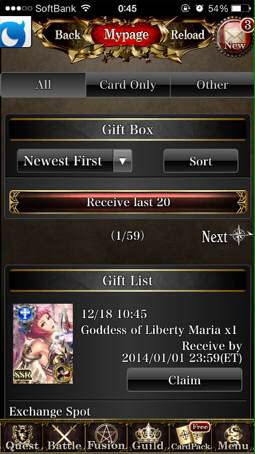
2013/12/19 00:45:29, "0:You":
You sent a photo.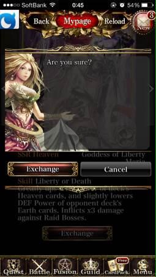
2013/12/19 00:45:30, "0:You":
You sent a photo.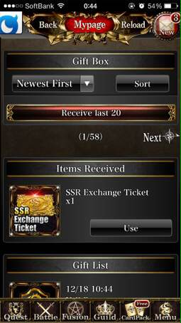
2013/12/19 00:45:34, "0:You":
問題ない
2013/12/19 00:47:24, "0:You":
返事をしていい？
2013/12/19 00:48:43, "401:ヨキ(谷)":
デイリーランキングリワードのガチャチケが受け取れないって内容じゃない感じですか？？
2013/12/19 00:49:21, "272:smaruy30":
Ssr ticketじゃない気がする
2013/12/19 00:49:35, "0:You":
そうか、そうか？
2013/12/19 00:51:15, "401:ヨキ(谷)":
ガチャは引けてるので、報酬データがおかしいのかな
2013/12/19 00:53:18, "0:You":
じゃ！sub1の報酬データだろう
2013/12/19 00:53:25, "272:smaruy30":
Reward -〉Ranking -〉yesterdays ranking reward
2013/12/19 00:53:46, "272:smaruy30":
にでてるチケット
2013/12/19 00:54:15, "272:smaruy30":
アサインがきてれば、どのデータかわかる
2013/12/19 00:55:19, "272:smaruy30":
とにーごめんね! 指紋が薄くなってるみたい！
2013/12/19 00:56:30, "0:You":
ウィスキーを1杯飲んだから動きは遅い、ごめん！
2013/12/19 01:07:40, "0:You":
見つけた！
2013/12/19 01:08:11, "401:ヨキ(谷)":
おお！
2013/12/19 01:08:40, "269:":
おれもウィスキーのみたい！
2013/12/19 01:08:50, "269:":
バーボンで
2013/12/19 01:10:17, "0:You":
Item_type/item_valueが2/8だった。
5/8に直した。
2013/12/19 01:11:34, "0:You":
Island_daily_ranking_reward_mだった。
今からuser_prize_receive_tを直す
2013/12/19 01:12:06, "401:ヨキ(谷)":
なるほど…
すみません、お願いします！m(_ _)m
2013/12/19 01:18:13, "0:You":
ウィスキーがいいね！
2013/12/19 01:20:57, "271:えんはる Crooz":
トニーthank you!
みなさんお疲れ様です(^o^)
2013/12/19 01:23:10, "0:You":
user_prize_receive_tを直した、5000件。
Cheers!
返事をしていい？
2013/12/19 01:25:06, "401:ヨキ(谷)":
お願いします！
2013/12/19 01:29:20, "0:You":
返事をしました
2013/12/19 01:29:56, "401:ヨキ(谷)":
ありがとうございます！
明日コーヒーおごります！
2013/12/19 01:41:59, "420:竜樹 Crooz":
谷さんごちです
2013/12/19 01:43:26, "401:ヨキ(谷)":
メールで送りますね(°_°)
2013/12/19 01:43:39, "268:良明 Maezawa Crooz":
スタバ買ってー谷さん
2013/12/19 01:47:27, "401:ヨキ(谷)":
2013/12/19 01:47:44, "271:えんはる Crooz":
谷さんのみ行きましょ*\(^o^)/*
2013/12/19 01:50:01, "401:ヨキ(谷)":
おごりなら
2013/12/19 01:50:07, "401:ヨキ(谷)":
2013/12/19 01:50:11, "268:良明 Maezawa Crooz":
なめてるwww
2013/12/19 02:06:32, "271:えんはる Crooz":
谷さんにおごるのか…
アルパカは好きなんで前向きに考えます！
2013/12/19 10:51:57, "272:smaruy30":
とにーちゃん昨日のuser prizeの修正ってreceive flgも修正しました?
2013/12/19 10:52:48, "0:You":
うん！
Receive_flag また1にした
2013/12/19 10:52:53, "0:You":
0
2013/12/19 10:53:39, "272:smaruy30":
ok! ありがとうございます!
2013/12/23 12:15:59, "0:You":
Merry Xmas!
早速緊急ESが来た。
■お問い合わせ件数増加について
・タイトル：Deity Wars
・報告日時：2013/12/22 23:31
・カテゴリ：イベント、Pt、報酬、ランキングに関する不具合
20時35分頃から「DROPアイテムが見つかりません」という内容のお問い合わせを
約9件受信しております。
下記に9件中2件のお問い合わせ内容を記載いたします。（内容については9件ともに
ほぼ同内容となっておりました。）
============================
2013/12/23 12:18:21, "272:smaruy30":
みてみます。
2013/12/23 12:19:52, "0:You":
Daily reward was below #100, but didn't receive rewards.
2013/12/23 12:20:24, "0:You":
Should receive 50 magical drops.
2013/12/23 12:49:22, "272:smaruy30":
そもそもmagical dropじゃなくて
2013/12/23 12:49:51, "272:smaruy30":
Forbidden dropですな
2013/12/23 12:52:48, "272:smaruy30":
Magic connect しない。。
2013/12/23 12:53:14, "0:You":
じゃ！私がやる？
2013/12/23 12:54:24, "0:You":
デイリーリワードのバッチが回て無いのですか？
2013/12/23 12:54:31, "272:smaruy30":
おねがいします。
2013/12/23 12:54:38, "272:smaruy30":
まわってます
2013/12/23 12:55:00, "272:smaruy30":
報酬データがちがうんじゃないかな。
2013/12/23 12:55:33, "0:You":
見てみます
2013/12/23 12:55:53, "272:smaruy30":
Magical drop は前のイベントアイテムで
2013/12/23 12:56:04, "272:smaruy30":
いまはforbidden drop
2013/12/23 12:56:10, "0:You":
はい！
2013/12/23 12:57:46, "272:smaruy30":
Reward ＞ daily ＞ check yesterdays daily rewards
2013/12/23 12:58:42, "272:smaruy30":
確かにmagical drop がでてくる
2013/12/23 13:03:37, "0:You":
じゃ、それだ！
2013/12/23 13:09:03, "272:smaruy30":
だめだmagic connect つながらない。。(>_<)
ちょっと他にやることあるから会社向かいます。
2013/12/23 13:23:59, "0:You":
island_daily_ranking_reward_mのアイテム751が1087であるべきのに、今まで苦情が来てなかった。
今回で4回目間違った報酬を配ってた。
2013/12/23 13:26:19, "0:You":
Forbidden drop は今回で最後だったから直接user_prize_receive_tを直す。
2013/12/23 13:34:59, "0:You":
マルちゃん！
user_prize_receiveに何も入ってない。
どうすればいい？
2013/12/23 13:45:09, "0:You":
見つけた！やります
2013/12/23 14:03:13, "0:You":
受け取りBOXを直して緊急ESを返事をしました。
2013/12/23 14:09:43, "272:smaruy30":
トニーありがとう。携帯の電池きれて今メッセージみました。
2013/12/23 14:58:28, "401:ヨキ(谷)":
今起きました(´Д` )
トニーさん丸山さんご対応ありがとうございました！
一度データ確認しておきます！
2013/12/23 14:58:31, "401:ヨキ(谷)":
2013/12/24 20:35:55, "0:You":
You sent a photo.
2013/12/24 20:35:55, "0:You":
You sent a photo.
2013/12/24 20:35:55, "0:You":
You sent a photo.
2013/12/24 20:37:18, "272:smaruy30":
おい、びびった。緊急esかとおもったw
2013/12/25 12:39:51, "0:You":
先、ディレクターが大切な報告をしました。
USラグナが3月末に終了をしますですって。
2013/12/25 12:51:13, "268:良明 Maezawa Crooz":
え…
2013/12/25 13:11:55, "270:岩永 勇祐":
ついに…。
2013/12/30 12:09:54, "420:竜樹 Crooz":
俺もそれ聞きました、、、。
2014/01/01 19:10:04, "401:ヨキ(谷)":
スーパーレアボス出現確認しましたー！
2014/01/01 19:10:38, "261:yeyenman Aileen":
Yahoo!!!!
2014/01/01 19:10:41, "261:yeyenman Aileen":
2014/01/01 19:15:03, "419:ひでか":
谷さんありがとうございますー！
2014/01/01 19:15:41, "401:ヨキ(谷)":
2014/01/01 19:19:17, "419:ひでか":
谷さん、すみません、今って本番にマテリアルのデータ入れられたりしますか？💦
2014/01/01 19:19:51, "401:ヨキ(谷)":
入れれます！
2014/01/01 19:19:56, "419:ひでか":
すみません😢
2014/01/01 19:20:21, "419:ひでか":
ガチャ更新履歴で、1月1日更新分のページで、
2014/01/01 19:20:50, "419:ひでか":
スーパーレアボスの攻撃報酬が書いてあると思うんですが、
2014/01/01 19:21:09, "419:ひでか":
ひでか sent you a photo.
2014/01/01 19:21:47, "419:ひでか":
これのAっていう報酬の、マテリアルのデータが入ってないみたいなんです
2014/01/01 19:21:55, "401:ヨキ(谷)":
了解です！
2014/01/01 19:22:06, "419:ひでか":
すみません😢宜しくお願いします
2014/01/01 19:22:07, "261:yeyenman Aileen":
谷さん、ありがとうございます！
2014/01/01 19:25:19, "419:ひでか":
プレに入っていると思います
2014/01/01 19:27:18, "401:ヨキ(谷)":
了解です！
2014/01/01 19:30:31, "261:yeyenman Aileen":
ひでか、谷さん、ありがとう❗️
2014/01/01 19:32:13, "401:ヨキ(谷)":
入れました！
表示されてますね(￣▽￣)
2014/01/01 19:32:39, "419:ひでか":
ありがとうございます！！
2014/01/01 19:34:15, "261:yeyenman Aileen":
確認しました！ありがとうございました！
2014/01/01 19:34:57, "401:ヨキ(谷)":
元日から確認ありがとうございました！
2014/01/01 19:41:23, "272:smaruy30":
お疲れさまです！
2014/01/01 20:01:45, "271:えんはる Crooz":
明けましておめでとうございます！
年始早々お疲れ様です(^^)！
2014/01/06 19:32:50, "261:yeyenman Aileen":
yeyenman Aileen sent you a photo.
2014/01/07 00:58:33, "272:smaruy30":
2014/01/07 00:59:04, "269:":
JunJun Kwak sent you a photo.
2014/01/07 00:59:04, "269:":
JunJun Kwak sent you a photo.

2014/01/07 01:03:35, "272:smaruy30":
Mid ages lol
2014/01/14 10:57:41, "0:You":
You sent a photo.
2014/01/14 10:58:00, "0:You":
朝から頑張るよ
2014/01/14 10:58:38, "401:ヨキ(谷)":
頑張ってますね(´Д` )
2014/01/15 09:15:12, "0:You":
緊急ES来た、ね！
内容：
------------------------------------------------------------
■お問い合わせ件数増加について
・タイトル：Deity Wars
・報告日時：2014/01/15 09:07
・カテゴリ：法令、ガチャガイドラインに抵触
received time 07時29分頃から「10xCPからのSSR Guaranteedカードを受け取らなかった」という内容のお問い合わせを
約○件受信しております。
下記に5件中2件のお問い合わせ内容を記載いたします。（内容については5件ともに
ほぼ同内容となっておりました。）
===========================
2014/01/15 09:17:38, "401:ヨキ(谷)":
おー(>_<)
今会社向かってますー！
2014/01/15 09:31:52, "261:yeyenman Aileen":
Waaaah!
2014/01/15 09:31:57, "261:yeyenman Aileen":
On my way now
2014/01/16 14:09:08, "272:smaruy30":
Lunch どこですか?
2014/01/16 14:09:33, "0:You":
Remember the mama's place
2014/01/16 14:09:38, "0:You":
?
2014/01/16 14:09:53, "0:You":
The one we always go together...
There
2014/01/16 14:12:48, "272:smaruy30":
Yeah i remember.
2014/01/16 14:13:08, "272:smaruy30":
Did u already arrive?
2014/01/16 14:13:49, "272:smaruy30":
Mama’s restaurant is kinda small.
2014/01/16 14:14:14, "0:You":
Yes.
Can I order for you?
Spaghetti?
2014/01/16 14:14:32, "272:smaruy30":
wondering I have seat there
2014/01/16 14:14:48, "272:smaruy30":
Luch set with rice
2014/01/16 14:15:22, "0:You":
Mama said there's no more rice today
2014/01/28 22:17:11, "0:You":
ミッドタウンにアイスリングがあるよ
2014/01/28 22:18:21, "0:You":
You sent a photo.
2014/02/06 23:25:57, "271:えんはる Crooz":
みなさん！
明日のさよなら会です！
時間:20:30〜22:30
お金:4000円
場所:ロアビル1階
ウルフギャングバックカフェ
(竹下さんの送別会した場所)
2014/02/06 23:26:21, "271:えんはる Crooz":
トニーさん8時15分になったらみんなを連れてきて！
2014/02/06 23:29:08, "419:ひでか":
遠藤さんありがとうございます。
2014/02/06 23:32:00, "269:":
遠藤ちゃんありがとね！
2014/02/06 23:32:43, "271:えんはる Crooz":
いえ！
みんなと飲むの久々で超楽しみ！(^O^)
2014/02/06 23:32:46, "0:You":
イェーイ！
2014/02/06 23:33:27, "271:えんはる Crooz":
でも、私アホなんで明日の夜スノボ行くことを忘れてました…
21:30には出なきゃ行けないんです(*_*)笑
2014/02/06 23:33:58, "271:えんはる Crooz":
なんで最初からぶっ飛ばして行きましょうー(^ ^)！
2014/02/06 23:50:57, "272:smaruy30":
りょーかいですー、えんどーさんありがとー
2014/02/06 23:51:32, "271:えんはる Crooz":
時間通りきてねー！
2014/02/06 23:51:52, "271:えんはる Crooz":
えんはる Crooz sent you a photo.
2014/02/06 23:52:55, "272:smaruy30":
Yo!
2014/02/06 23:53:23, "0:You":
B-boy
2014/02/06 23:53:54, "272:smaruy30":
B-boys
2014/02/07 00:05:20, "269:":
Yo yo check it out!
2014/02/07 00:07:52, "420:竜樹 Crooz":
楽しんで下さい
2014/02/07 00:09:25, "0:You":
私が明日は泣くかも
ティシュを持って行った方がいい？
2014/02/07 00:09:30, "271:えんはる Crooz":
ｗ
2014/02/07 00:09:40, "271:えんはる Crooz":
もってきて！
2014/02/07 00:09:54, "269:":
おれ持って行くよ！いっぱい泣いて！
2014/02/07 00:11:11, "271:えんはる Crooz":
石橋君なんでこれないのー！
しばらく日本ですか？
2014/02/07 00:44:19, "420:竜樹 Crooz":
明後日速攻で向こう戻ります
次の全体会議まで戻って来ません
2014/02/07 00:50:47, "272:smaruy30":
これるじゃん。
2014/02/07 00:50:56, "269:":
これるね
2014/02/07 00:51:25, "268:良明 Maezawa Crooz":
これない理由がないね
2014/02/07 00:53:33, "272:smaruy30":
あー
2014/02/07 00:53:42, "272:smaruy30":
えろいぞー
2014/02/07 00:54:10, "268:良明 Maezawa Crooz":
まる
2014/02/07 00:54:21, "268:良明 Maezawa Crooz":
トイレ間違えないでね♡
2014/02/07 00:54:53, "272:smaruy30":
☆
2014/02/07 20:25:46, "0:You":
エレベーターにいるよ
2014/02/07 20:26:19, "272:smaruy30":
さきいってー
2014/02/07 20:26:41, "272:smaruy30":
あとでいくから
2014/02/07 20:27:55, "271:えんはる Crooz":
はやくー
2014/02/07 20:36:33, "271:えんはる Crooz":
竹下さんきたよー！
2014/02/07 21:56:25, "420:竜樹 Crooz":
まだ仕事残ってるんで顔だけ出しますね！！
2014/02/12 11:24:45, "270:岩永 勇祐":
トニー今日飯行こうぜ！
2014/02/12 11:25:10, "0:You":
行こう！行こう！
2014/02/12 11:25:24, "268:良明 Maezawa Crooz":
みんなでいこー！
2014/02/12 11:25:48, "268:良明 Maezawa Crooz":
何時がよい？
2014/02/12 11:27:19, "0:You":
いつでも
2時でいい？
2014/02/12 11:56:02, "270:岩永 勇祐":
俺は2時で平気だよー☻
2014/02/12 11:56:42, "0:You":
None
2014/02/12 11:58:39, "271:えんはる Crooz":
13時がいい！
2014/02/12 12:39:46, "0:You":
じゃ！13時で
2014/02/12 12:43:18, "272:smaruy30":
今日の夜は？
2014/02/12 12:43:30, "268:良明 Maezawa Crooz":
ご馳走様です
2014/02/12 12:43:49, "272:smaruy30":
いや
2014/02/12 12:51:35, "271:えんはる Crooz":
どこ行けばいい？
2014/02/12 12:54:58, "0:You":
一応、下に集めて
人数を見て決めよう
2014/02/12 13:02:41, "271:えんはる Crooz":
I will wait for your message！
2014/02/12 13:02:54, "268:良明 Maezawa Crooz":
いこーう！
2014/02/12 13:06:15, "268:良明 Maezawa Crooz":
おい谷！！w
2014/02/12 13:06:28, "268:良明 Maezawa Crooz":
なにやってんだ！
2014/02/12 13:06:31, "268:良明 Maezawa Crooz":
2014/02/12 13:06:39, "401:ヨキ(谷)":
2014/02/12 13:06:59, "401:ヨキ(谷)":
もう下集まってます？∑(ﾟДﾟ)
2014/02/12 13:08:01, "268:良明 Maezawa Crooz":
いま向かってますー！はやく！
2014/02/12 13:08:11, "401:ヨキ(谷)":
了解です！
2014/02/12 13:08:41, "268:良明 Maezawa Crooz":
あ、谷さんやっぱ今度にしよ！
2014/02/12 13:08:54, "268:良明 Maezawa Crooz":
もう結構向かっちゃってる！
2014/02/12 13:09:16, "401:ヨキ(谷)":
おー！
了解です！
2014/02/12 13:09:43, "268:良明 Maezawa Crooz":
すんませーん！
2014/02/12 13:09:46, "271:えんはる Crooz":
え！
どこ行けば(*_*)？
2014/02/12 13:19:57, "0:You":
シナボンの店の前にスペインのハタがある
2014/02/12 18:16:26, "272:smaruy30":
のみいこ!
2014/02/12 18:17:06, "0:You":
8時に
2014/02/12 19:12:33, "271:えんはる Crooz":
8時はえーｗ
2014/02/12 20:48:11, "0:You":
ソンウさんも来るって
ミッドタウンのA747
お先に！
2014/02/12 21:09:10, "0:You":
You sent a photo.
2014/02/12 21:52:25, "272:smaruy30":
Leaving office now
2014/02/12 21:55:43, "0:You":
イェーイ！
2014/02/12 21:56:49, "0:You":
You sent a photo.
2014/02/12 21:58:21, "271:えんはる Crooz":
はぶかさんいる！
2014/02/12 21:59:15, "272:smaruy30":
はらへった
2014/02/12 22:04:13, "272:smaruy30":
えんどさんもくる?
2014/02/12 22:06:08, "271:えんはる Crooz":
いくー
2014/02/12 22:06:12, "271:えんはる Crooz":
ちょっとだけ
2014/02/12 22:06:27, "0:You":
None
2014/02/12 22:20:25, "0:You":
You sent a photo.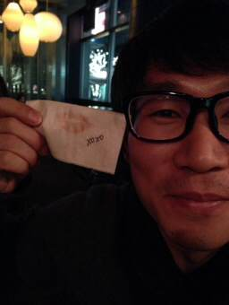
2014/02/12 22:29:31, "0:You":
You sent a photo.
2014/02/12 22:44:56, "0:You":
You sent a photo.
2014/02/18 17:22:16, "271:えんはる Crooz":
トニー異動になってるじゃんｗ
2014/02/18 17:49:09, "272:smaruy30":
どーすんの?
2014/02/18 17:50:57, "0:You":
迷う、どうしよう？！
2014/02/18 18:02:17, "271:えんはる Crooz":
Let's try!
2014/02/18 18:08:13, "272:smaruy30":
トニーはおもしろいやつだな。w
波瀾万丈やね！
2014/02/18 18:17:05, "420:竜樹 Crooz":
トニー頑張ろう！
2014/02/18 21:41:01, "0:You":
ありがとうございます！
辞めないことにした。
明日から新規プロジェクトを開発をやらせて頂きます
2014/02/18 22:09:20, "268:良明 Maezawa Crooz":
お帰りトニー( ・∇・)
2014/02/18 22:16:06, "271:えんはる Crooz":
うけるねｗ
めでたしめでたし！
2014/02/18 22:36:26, "272:smaruy30":
ウェルカムバック!
2014/02/19 00:04:10, "270:岩永 勇祐":
よかったねトニー( ´ ▽ ` )ﾉ
お帰り〜
2014/03/31 19:26:10, "272:smaruy30":
ゲーム閉じたかな？誰見れる人いる？丸山はログインできない状態です。
2014/03/31 19:29:09, "271:えんはる Crooz":
えんはる Crooz sent you a photo.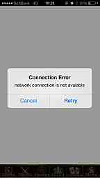
2014/03/31 19:29:13, "271:えんはる Crooz":
こんなんー！
2014/03/31 19:35:02, "270:岩永 勇祐":
ついに(*_*)
2014/03/31 19:35:47, "268:良明 Maezawa Crooz":
こんな画面になっちゃうんだ(ఠ౬ఠ )
2014/03/31 19:36:00, "419:ひでか":
ひでか sent you a photo.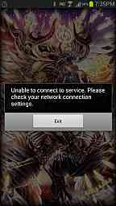
2014/03/31 19:36:04, "419:ひでか":
わたしもこんなでしたー
2014/03/31 19:37:19, "272:smaruy30":
ぺーじつくった意味ないねw
2014/03/31 19:37:35, "401:ヨキ(谷)":
噂のページに飛ばされてないですね(´Д` )
2014/03/31 19:44:19, "419:ひでか":
笑
2014/03/31 19:47:32, "464:山本佳奈":
お疲れ様でした…
2014/04/14 09:20:25, "420:竜樹 Crooz":
今日から本社勤務になるんでよろしくお願いします！w
2014/04/14 09:23:14, "272:smaruy30":
んっ⁉︎ ヨロシク！
2014/04/14 09:39:37, "271:えんはる Crooz":
わーい♡
石橋君おかえり＼(^o^)／
って言っても私ステップだから、ランチでも行きましょう
2014/04/14 09:40:00, "269:":
そうなんだ！おかえり。どこのチーム？
2014/04/14 09:44:29, "420:竜樹 Crooz":
仮ですけどバブルガムってきいてます。
2014/04/14 09:45:32, "268:良明 Maezawa Crooz":
わーおw
2014/04/24 22:38:20, "0:You":
ゴンスケ left the group.
2014/04/25 21:56:53, "272:smaruy30":
http://r.gnavi.co.jp/a127601/
2014/04/25 21:57:33, "272:smaruy30":
石橋君、アイリーン
ここね
2014/04/25 22:04:27, "261:yeyenman Aileen":
ありがとう！
2014/04/25 23:20:11, "420:竜樹 Crooz":
結構遅くなりそうですがどこいますか？
2014/04/25 23:38:49, "420:竜樹 Crooz":
今から行きますがどこですか？
2014/04/25 23:43:47, "269:":
磯丸水産
2014/04/25 23:44:29, "420:竜樹 Crooz":
それってどこですか？
2014/04/25 23:48:42, "269:":
ドンキホーテの向かい側
2014/04/25 23:51:25, "269:":
カラ館に変わった
2014/04/25 23:55:49, "0:You":
カラ館にいるよ
みんな
2014/04/26 00:35:35, "0:You":
You sent a photo.
2014/04/26 05:17:55, "0:You":
You sent a photo.
2014/04/28 09:06:54, "0:You":
毎年友達でBBQをしてる。
今年こそUSチームを連れて行きたい。
みんな是非来てください！
待ってるよ！
2014/04/28 09:07:11, "0:You":
▼▼▼▼▼▼▼▼▼▼▼▼
2014年GW 葉山一色ビーチBBQ♪
★2014年5月3日(土)13時★
▲▲▲▲▲▲▲▲▲▲▲▲
恒例の葉山一色海岸でBeach BBQ!!今年も開催です♪♪
一色海岸はプライベート感のある素敵な大人のビーチです♪
FOOD＆Drinkは飲み放題です♪（数に限りはありw）♡ジャークチキンにスペシャルフードも♡！
●日にち
★ 2014年5月3日(土)13時～17時終了予定。
※雨天の場合は４日（日）が予備日です。
●場所
神奈川県三浦郡葉山町一色海岸
神奈川県立近代美術館から脇の道入ってすぐ
●会費（仮）調整中
男性3500～4000円予定(BBQ食費ドリンク代込み)
女性2000~3000円予定(BBQ食費ドリンク代込み)
※ワイン類・缶酎ハイ&ビール(4本以上)持参で500円割引！！
※お手伝い＆スタッフの方は1000円割引。
お友達もお誘い合わせのうえご参加ください♪♪
人数はあらかじめ教えて頂けると助かります。
★★★★★★★★★★★★
集合について
●現地【１3：００】葉山一色海岸現地(詳細後送)
●準備を手伝ってくれる方【１０：００】(集合場所後送)
★★★★★★★★★★★★
一色海岸まで
■ バス・電車：JR逗子駅・京急新逗子駅より京急バス「海岸回り葉山行き」（逗11、逗12）で「三ヶ丘」下車徒歩1分
■ 車：横浜横須賀道路逗子インター逗葉新道を経て長柄交差点を左、つきあたり御用邸を右300m
(近くに駐車場少ないです。葉山御用邸前のスタンドの所が駐車場になりました)
★★★★★★★★★★★★
2014/04/28 12:51:11, "268:良明 Maezawa Crooz":
この日仕事だー(´┐｀)
ごめんねー(´┐｀)
2014/04/28 12:54:49, "271:えんはる Crooz":
私もこの日お出かけしてる(*_*)
お誘いありがとうー✨
2014/04/28 14:25:57, "272:smaruy30":
おれも仕事だー。サンキュー！
2014/04/28 14:46:22, "269:":
まるちゃん、ラグナjoin停止ってメール来てるけど大丈夫？
2014/04/28 14:46:50, "269:":
あ、mixi版だった
2014/04/28 14:46:53, "272:smaruy30":
mixi
2014/04/28 14:47:07, "272:smaruy30":
そうそう
2014/04/28 14:47:53, "272:smaruy30":
イベント終了前の駆け込みみたいです。
2014/04/28 14:49:50, "272:smaruy30":
ぽーてjj?
2014/04/28 14:58:21, "269:":
ぽーてってなに？
2014/04/28 15:10:51, "272:smaruy30":
jだ
2014/04/28 15:16:41, "269:":
あ、ぼくですw
2014/05/23 22:17:15, "268:良明 Maezawa Crooz":
谷さんと丸まだー？
2014/05/24 00:38:23, "272:smaruy30":
Hey! 先帰っちゃってごめんね！明日ちょっと仕事するら。みんなまたのも！
2014/05/24 00:38:48, "0:You":
お休み！
2014/05/24 00:38:54, "268:良明 Maezawa Crooz":
ありがとねーまるー◡̈
2014/05/24 00:41:06, "272:smaruy30":
まえちゃん楽しんでー☺︎
あいりーん よしーもまたのも！
2014/05/24 00:44:13, "272:smaruy30":
とにおやすみ！
2014/05/24 01:06:58, "261:yeyenman Aileen":
xoxo
2014/05/29 18:21:44, "0:You":
ひでか left the group.
2014/06/02 14:25:41, "420:竜樹 Crooz":
前澤さん会議室2に集合らしいです！
2014/08/06 11:41:54, "0:You":
JunJun Kwak left the group.